BY
J O H N C A S E Y, LL. D., F. R. S.,
FELLOW OF THE ROYAL UNIVERSITY OF IRELAND;
MEMBER OF COUNCIL, ROYAL IRISH ACADEMY;
MEMBER OF THE MATHEMATICAL SOCIETIES OF LONDON AND FRANCE;
AND PROFESSOR OF THE HIGHER MATHEMATICS AND OF
MATHEMATICAL PHYSICS IN THE CATHOLIC UNIVERSITY OF IRELAND.
THIRD EDITION, REVISED AND ENLARGED.
DUBLIN: HODGES, FIGGIS, & CO., GRAFTON-ST.
LONDON: LONGMANS, GREEN, & CO.
1885.
DUBLIN
PRINTED AT THE UNIVERSITY PRESS,
BY PONSONBY AND WELDRICK
________
This edition of the Elements of Euclid, undertaken at the request of the principals of some of the leading Colleges and Schools of Ireland, is intended to supply a want much felt by teachers at the present day—the production of a work which, while giving the unrivalled original in all its integrity, would also contain the modern conceptions and developments of the portion of Geometry over which the Elements extend. A cursory examination of the work will show that the Editor has gone much further in this latter direction than any of his predecessors, for it will be found to contain, not only more actual matter than is given in any of theirs with which he is acquainted, but also much of a special character, which is not given, so far as he is aware, in any former work on the subject. The great extension of geometrical methods in recent times has made such a work a necessity for the student, to enable him not only to read with advantage, but even to understand those mathematical writings of modern times which require an accurate knowledge of Elementary Geometry, and to which it is in reality the best introduction.
In compiling his work the Editor has received invaluable assistance from the late Rev. Professor Townsend, s.f.t.c.d. The book was rewritten and considerably altered in accordance with his suggestions, and to that distinguished Geometer it is largely indebted for whatever merit it possesses.
The Questions for Examination in the early part of the First Book are intended as specimens, which the teacher ought to follow through the entire work. Every person who has had experience in tuition knows well the importance of such examinations in teaching Elementary Geometry.
The Exercises, of which there are over eight hundred, have been all selected with great care. Those in the body of each Book are intended as applications of Euclid’s Propositions. They are for the most part of an elementary character, and may be regarded as common property, nearly every one of them having appeared already in previous collections. The Exercises at the end of each Book are more advanced; several are due to the late Professor Townsend, some are original, and a large number have been taken from two important French works—Catalan’s Théorèmes et Problèmes de Géométrie Elémentaire, and the Traité de Géométrie, by Rouché and De Comberousse.
The second edition has been thoroughly revised and greatly enlarged. The new matter includes several alternative proofs, important examination questions on each of the books, an explanation of the ratio of incommensurable quantities, the first twenty-one propositions of Book XI., and an Appendix on the properties of the Prism, Pyramids, Cylinder, Sphere, and Cone.
The present Edition has been very carefully read throughout, and it is hoped that few misprints have escaped detection.
The Editor is glad to find from the rapid sale of former editions (each 3000 copies) of his Book, and its general adoption in schools, that it is likely to accomplish the double object with which it was written, viz. to supply students with a Manual that will impart a thorough knowledge of the immortal work of the great Greek Geometer, and introduce them, at the same time, to some of the most important conceptions and developments of the Geometry of the present day.
JOHN CASEY.
| 86, South Circular-road, Dublin. |
| November, 1885. |
THE ELEMENTS OF EUCLID.
________________
Geometry is the Science of figured Space. Figured Space is of one, two, or three dimensions, according as it consists of lines, surfaces, or solids. The boundaries of solids are surfaces; of surfaces, lines; and of lines, points. Thus it is the province of Geometry to investigate the properties of solids, of surfaces, and of the figures described on surfaces. The simplest of all surfaces is the plane, and that department of Geometry which is occupied with the lines and curves drawn on a plane is called Plane Geometry; that which demonstrates the properties of solids, of curved surfaces, and the figures described on curved surfaces, is Geometry of Three Dimensions. The simplest lines that can be drawn on a plane are the right line and circle, and the study of the properties of the point, the right line, and the circle, is the introduction to Geometry, of which it forms an extensive and important department. This is the part of Geometry on which the oldest Mathematical Book in existence, namely, Euclid’s Elements, is written, and is the subject of the present volume. The conic sections and other curves that can be described on a plane form special branches, and complete the divisions of this, the most comprehensive of all the Sciences. The student will find in Chasles’ Aperçu Historique a valuable history of the origin and the development of the methods of Geometry.
___________________________
In the following work, when figures are not drawn, the student should construct them from the given directions. The Propositions of Euclid will be printed in larger type, and will be referred to by Roman numerals enclosed in brackets. Thus [III. xxxii.] will denote the 32nd Proposition of the 3rd Book. The number of the Book will be given only when different from that under which the reference occurs. The general and the particular enunciation of every Proposition will be given in one. By omitting the letters enclosed in parentheses we have the general enunciation, and by reading them, the particular. The annotations will be printed in smaller type. The following symbols will be used in them:—
| Circle | will be denoted by | ⊙ |
| Triangle | ,, | △ |
| Parallelogram | ,, | |
| Parallel lines | ,, | ∥ |
| Perpendicular | ,, | ⊥ |
In addition to these we shall employ the usual symbols +, −, &c. of Algebra, and also the sign of congruence, namely ≡. This symbol has been introduced by the illustrious Gauss.
________________
DEFINITIONS.
i. A point is that which has position but not dimensions.
A geometrical magnitude which has three dimensions, that is, length, breadth, and thickness, is a solid; that which has two dimensions, such as length and breadth, is a surface; and that which has but one dimension is a line. But a point is neither a solid, nor a surface, nor a line; hence it has no dimensions—that is, it has neither length, breadth, nor thickness.
ii. A line is length without breadth.
A line is space of one dimension. If it had any breadth, no matter how small, it would be space of two dimensions; and if in addition it had any thickness it would be space of three dimensions; hence a line has neither breadth nor thickness.
iii. The intersections of lines and their extremities are points.
iv. A line which lies evenly between its extreme points is called a straight or right line, such as AB.
If a point move without changing its direction it will describe a right line. The direction in which a point moves in called its “sense.” If the moving point continually changes its direction it will describe a curve; hence it follows that only one right line can be drawn between two points. The following Illustration is due to Professor Henrici:—“If we suspend a weight by a string, the string becomes stretched, and we say it is straight, by which we mean to express that it has assumed a peculiar definite shape. If we mentally abstract from this string all thickness, we obtain the notion of the simplest of all lines, which we call a straight line.”
The Plane.
v. A surface is that which has length and breadth.
A surface is space of two dimensions. It has no thickness, for if it had any, however small, it would be space of three dimensions.
vi. When a surface is such that the right line joining any two arbitrary points in it lies wholly in the surface, it is called a plane.
A plane is perfectly flat and even, like the surface of still water, or of a smooth floor.—Newcomb.
vii. Any combination of points, of lines, or of points and lines in a plane, is called a plane figure. If a figure be formed of points only it is called a stigmatic figure; and if of right lines only, a rectilineal figure.
viii. Points which lie on the same right line are called collinear points. A figure formed of collinear points is called a row of points.
ix. The inclination of two right lines extending out from one point in different directions is called a rectilineal angle.
x. The two lines are called the legs, and the point the vertex of the angle.
A right line drawn from the vertex and turning about it in the plane of the angle, from the position of coincidence with one leg to that of coincidence with the other, is said to turn through the angle, and the angle is the greater as the quantity of turning is the greater. Again, since the line may turn from one position to the other in either of two ways, two angles are formed by two lines drawn from a point.
Thus if AB, AC be the legs, a line may turn from the position AB to the position AC in the two ways indicated by the arrows. The smaller of the angles thus formed is to be understood as the angle contained by the lines. The larger, called a re-entrant angle, seldom occurs in the “Elements.”
xi. Designation of Angles.—A particular angle in a figure is denoted by three letters, as BAC, of which the middle one, A, is at the vertex, and the other two along the legs. The angle is then read BAC.
xii. The angle formed by joining two or more angles together is called their sum. Thus the sum of the two angles ABC, PQR is the angle AB′R,
formed by applying the side QP to the side BC, so that the vertex Q shall fall on the vertex B, and the side QR on the opposite side of BC from BA.
xiii. When the sum of two angles BAC, CAD is such that the legs BA, AD form one right line, they are called supplements of each other.
Hence, when one line stands on another, the two angles which it makes on the same side of that on which it stands are supplements of each other.
xiv. When one line stands on another, and makes the adjacent angles at both sides of itself equal, each of the angles is called a right angle, and the line which stands on the other is called a perpendicular to it.
Hence a right angle is equal to its supplement.
xv. An acute angle is one which is less than a right angle, as A.
xvi. An obtuse angle is one which is greater than a right angle, as BAC.
The supplement of an acute angle is obtuse, and conversely, the supplement of an obtuse angle is acute.
xvii. When the sum of two angles is a right angle, each is called the complement of the other. Thus, if the angle BAC be right, the angles BAD, DAC are complements of each other.
xviii. Three or more right lines passing through the same point are called concurrent lines.
xix. A system of more than three concurrent lines is called a pencil of lines. Each line of a pencil is called a ray, and the common point through which the rays pass is called the vertex.
xx. A triangle is a figure formed by three right lines joined end to end. The three lines are called its sides.
xxi. A triangle whose three sides are unequal is said to be scalene, as A; a triangle having two sides equal, to be isosceles, as B; and and having all its sides equal, to be equilateral, as C.
xxii. A right-angled triangle is one that has one of its angles a right angle, as D. The side which subtends the right angle is called the hypotenuse.
xxiii. An obtuse-angled triangle is one that has one of its angles obtuse, as E.
xxiv. An acute-angled triangle is one that has its three angles acute, as F.
xxv. An exterior angle of a triangle is one that is formed by any side and the continuation of another side.
Hence a triangle has six exterior angles; and also each exterior angle is the supplement of the adjacent interior angle.
xxvi. A rectilineal figure bounded by more than three right lines is usually called a polygon.
xxvii. A polygon is said to be convex when it has no re-entrant angle.
xxviii. A polygon of four sides is called a quadrilateral.
xxix. A quadrilateral whose four sides are equal is called a lozenge.
xxx. A lozenge which has a right angle is called a square.
xxxi. A polygon which has five sides is called a pentagon; one which has six sides, a hexagon, and so on.
The Circle.

xxxii. A circle is a plane figure formed by a curved line called the circumference, and is such that all right lines drawn from a certain point within the figure to the circumference are equal to one another. This point is called the centre.
xxxiii. A radius of a circle is any right line drawn from the centre to the circumference, such as CD.
xxxiv. A diameter of a circle is a right line drawn through the centre and terminated both ways by the circumference, such as AB.
From the definition of a circle it follows at once that the path of a movable point in a plane which remains at a constant distance from a fixed point is a circle; also that any point P in the plane is inside, outside, or on the circumference of a circle according as its distance from the centre is less than, greater than, or equal to, the radius.
Let it be granted that—
i. A right line may be drawn from any one point to any other point.
When we consider a straight line contained between two fixed points which are its ends, such a portion is called a finite straight line.
ii. A terminated right line may be produced to any length in a right line.
Every right line may extend without limit in either direction or in both. It is in these cases called an indefinite line. By this postulate a finite right line may be supposed to be produced, whenever we please, into an indefinite right line.
iii. A circle may be described from any centre, and with any distance from that centre as radius.
If there be two points A and B, and if with any instruments, such as a ruler and pen, we draw a line from A to B, this will evidently have some irregularities, and also some breadth and thickness. Hence it will not be a geometrical line no matter how nearly it may approach to one. This is the reason that Euclid postulates the drawing of a right line from one point to another. For if it could be accurately done there would be no need for his asking us to let it be granted. Similar observations apply to the other postulates. It is also worthy of remark that Euclid never takes for granted the doing of anything for which a geometrical construction, founded on other problems or on the foregoing postulates, can be given.
i. Things which are equal to the same, or to equals, are equal to each other.
Thus, if there be three things, and if the first, and the second, be each equal to the third, we infer by this axiom that the first is equal to the second. This axiom relates to all kinds of magnitude. The same is true of Axioms ii., iii., iv., v., vi., vii., ix.; but viii., x., xi., xii., are strictly geometrical.
ii. If equals be added to equals the sums will be equal.
iii. If equals be taken from equals the remainders will be equal.
iv. If equals be added to unequals the sums will be unequal.
v. If equals be taken from unequals the remainders will be unequal.
vi. The doubles of equal magnitudes are equal.
vii. The halves of equal magnitudes are equal.
viii. Magnitudes that can be made to coincide are equal.
The placing of one geometrical magnitude on another, such as a line on a line, a triangle on a triangle, or a circle on a circle, &c., is called superposition. The superposition employed in Geometry is only mental, that is, we conceive one magnitude placed on the other; and then, if we can prove that they coincide, we infer, by the present axiom, that they are equal. Superposition involves the following principle, of which, without explicitly stating it, Euclid makes frequent use:—“Any figure may be transferred from one position to another without change of form or size.”
ix. The whole is greater than its part.
This axiom is included in the following, which is a fuller statement:—
ix′. The whole is equal to the sum of all its parts.
x. Two right lines cannot enclose a space.
This is equivalent to the statement, “If two right lines have two points common to both, they coincide in direction,” that is, they form but one line, and this holds true even when one of the points is at infinity.
xi. All right angles are equal to one another.
This can be proved as follows:—Let there be two right lines AB, CD, and two perpendiculars to them, namely, EF, GH, then if AB, CD be made to coincide by superposition, so that the point E will coincide with G; then since a right angle is equal to its supplement, the line EF must coincide with GH. Hence the angle AEF is equal to CGH.
xii. If two right lines (AB, CD) meet a third line (AC), so as to make the sum of the two interior angles (BAC, ACD) on the same side less than two right angles, these lines being produced shall meet at some finite distance.
This axiom is the converse of Prop. xvii., Book I.
Explanation of Terms.
Axioms.—“Elements of human reason,” according to Dugald Stewart, are certain general propositions, the truths of which are self-evident, and which are so fundamental, that they cannot be inferred from any propositions which are more elementary; in other words, they are incapable of demonstration. “That two sides of a triangle are greater than the third” is, perhaps, self-evident; but it is not an axiom, inasmuch as it can be inferred by demonstration from other propositions; but we can give no proof of the proposition that “things which are equal to the same are equal to one another,” and, being self-evident, it is an axiom.
Propositions which are not axioms are properties of figures obtained by processes of reasoning. They are divided into theorems and problems.
A Theorem is the formal statement of a property that may be demonstrated from known propositions. These propositions may themselves be theorems or axioms. A theorem consists of two parts, the hypothesis, or that which is assumed, and the conclusion, or that which is asserted to follow therefrom. Thus, in the typical theorem,
the hypothesis is that X is Y , and the conclusion is that Z is W.
Converse Theorems.—Two theorems are said to be converse, each of the other, when the hypothesis of either is the conclusion of the other. Thus the converse of the theorem (i.) is—
From the two theorems (i.) and (ii.) we may infer two others, called their contrapositives. Thus the contrapositive
| of (i.) is, If Z is not W, then X is not Y ; | (iii.) | |
| of (ii.) is, If X is not Y , then Z is not W. | (iv.) |
The theorem (iv.) is called the obverse of (i.), and (iii.) the obverse of (ii.).
A Problem is a proposition in which something is proposed to be done, such as a line to be drawn, or a figure to be constructed, under some given conditions.
The Solution of a problem is the method of construction which accomplishes the required end.
The Demonstration is the proof, in the case of a theorem, that the conclusion follows from the hypothesis; and in the case of a problem, that the construction accomplishes the object proposed.
The Enunciation of a problem consists of two parts, namely, the data, or things supposed to be given, and the quaesita, or things required to be done.
Postulates are the elements of geometrical construction, and occupy the same relation with respect to problems as axioms do to theorems.
A Corollary is an inference or deduction from a proposition.
A Lemma is an auxiliary proposition required in the demonstration of a principal proposition.
A Secant or Transversal is a line which cuts a system of lines, a circle, or any other geometrical figure.
Congruent figures are those that can be made to coincide by superposition. They agree in shape and size, but differ in position. Hence it follows, by Axiom viii., that corresponding parts or portions of congruent figures are congruent, and that congruent figures are equal in every respect.
Rule of Identity.—Under this name the following principle will be sometimes referred to:—“If there is but one X and one Y , then, from the fact that X is Y , it necessarily follows that Y is X.”—Syllabus.
PROP. I.—Problem.
On a given finite right line (AB) to construct an equilateral triangle.
Sol.—With A as centre, and AB as radius, describe the circle BCD (Post. iii.). With B as centre, and BA as radius, describe the circle ACE, cutting the former circle in C. Join CA, CB (Post. i.). Then ABC is the equilateral triangle required.
Dem.—Because A is the centre of the circle BCD, AC is equal to AB (Def. xxxii.). Again, because B is the centre of the circle ACE, BC is equal to BA. Hence we have proved.
| AC | = AB, | ||||||||||
| and | BC | = AB. |
But things which are equal to the same are equal to one another (Axiom i.); therefore AC is equal to BC; therefore the three lines AB, BC, CA are equal to one another. Hence the triangle ABC is equilateral (Def. xxi.); and it is described on the given line AB, which was required to be done.
Questions for Examination.
1. What is the datum in this proposition?
2. What is the quaesitum?
3. What is a finite right line?
4. What is the opposite of finite?
5. In what part of the construction is the third postulate quoted? and for what purpose? Where is the first postulate quoted?
6. Where is the first axiom quoted?
7. What use is made of the definition of a circle? What is a circle?
8. What is an equilateral triangle?
Exercises.
The following exercises are to be solved when the pupil has mastered the First Book:—
1. If the lines AF, BF be joined, the figure ACBF is a lozenge.
2. If AB be produced to D and E, the triangles CDF and CEF are equilateral.
3. If CA, CB be produced to meet the circles again in G and H, the points G, F, H are collinear, and the triangle GCH is equilateral.
4. If CF be joined, CF2 = 3AB2.
5. Describe a circle in the space ACB, bounded by the line AB and the two circles.
PROP. II.—Problem.
From a given point (A) to draw a right line equal to a given finite right line (BC).
Sol.—Join AB (Post. i.); on AB describe the equilateral triangle ABD [i.]. With B as centre, and BC as radius, describe the circle ECH (Post iii.). Produce DB to meet the circle ECH in E (Post. ii.). With D as centre, and DE as radius, describe the circle EFG (Post. iii.). Produce DA to meet this circle in F. AF is equal to BC.
Dem.—Because D is the centre of the circle EFG, DF is equal to DE (Def. xxxii.). And because DAB is an equilateral triangle, DA is equal to DB (Def. xxi.). Hence we have
| DF = DE, | |||||||||||
| and | DA = DB; |
and taking the latter from the former, the remainder AF is equal to the remainder BE (Axiom iii.). Again, because B is the centre of the circle ECH, BC is equal to BE; and we have proved that AF is equal to BE; and things which are equal to the same thing are equal to one another (Axiom i.). Hence AF is equal to BC. Therefore from the given point A the line AF has been drawn equal to BC.
It is usual with commentators on Euclid to say that he allows the use of the rule and compass. Were such the case this Proposition would have been unnecessary. The fact is, Euclid’s object was to teach Theoretical and not Practical Geometry, and the only things he postulates are the drawing of right lines and the describing of circles. If he allowed the mechanical use of the rule and compass he could give methods of solving many problems that go beyond the limits of the “geometry of the point, line, and circle.”—See Notes D, F at the end of this work.
Exercises.
1. Solve the problem when the point A is in the line BC itself.
2. Inflect from a given point A to a given line BC a line equal to a given line. State the number of solutions.
PROP. III.—Problem.
From the greater (AB) of two given right lines to cut off a part equal to (C) the less.
Sol.—From A, one of the extremities of AB, draw the right line AD equal to C [ii.]; and with A as centre, and AD as radius, describe the circle EDF (Post. iii.) cutting AB in E. AE shall be equal to C.
Dem.—Because A is the centre of the circle EDF, AE is equal to AD (Def. xxxii.), and C is equal to AD (const.); and things which are equal to the same are equal to one another (Axiom i.); therefore AE is equal to C. Wherefore from AB, the greater of the two given lines, a part, AE, has been out off equal to C, the less.
Questions for Examination.
1. What previous problem is employed in the solution of this?
2. What postulate?
3. What axiom in the demonstration?
4. Show how to produce the less of two given lines until the whole produced line becomes equal to the greater.
PROP. IV.—Theorem.
If two triangles (BAC, EDF) have two sides (BA, AC) of one equal respectively to two sides (ED, DF) of the other, and have also the angles (A, D) included by those sides equal, the triangles shall be equal in every respect—that is, their bases or third sides (BC, EF) shall be equal, and the angles (B, C) at the base of one shall be respectively equal to the angles (E, F) at the base of the other; namely, those shall be equal to which the equal sides are opposite.
Dem.—Let us conceive the triangle BAC to be applied to EDF, so that the point A shall coincide with D, and the line AB with DE, and that the point C shall be on the same side of DE as F; then because AB is equal to DE, the point B shall coincide with E. Again, because the angle BAC is equal to the angle EDF, the line AC shall coincide with DF; and since AC is equal to DF (hyp.), the point C shall coincide with F; and we have proved that the point B coincides with E. Hence two points of the line BC coincide with two points of the line EF; and since two right lines cannot enclose a space, BC must coincide with EF. Hence the triangles agree in every respect; therefore BC is equal to EF, the angle B is equal to the angle E, the angle C to the angle F, and the triangle BAC to the triangle EDF.
Questions for Examination.
1. How many parts in the hypothesis of this Proposition? Ans. Three. Name them.
2. How many in the conclusion? Name them.
3. What technical term is applied to figures which agree in everything but position? Ans. They are said to be congruent.
4. What is meant by superposition?
5. What axiom is made use of in superposition?
6. How many parts in a triangle? Ans. Six; namely, three sides and three angles.
7. When it is required to prove that two triangles are congruent, how many parts of one must be given equal to corresponding parts of the other? Ans. In general, any three except the three angles. This will be established in Props. viii. and xxvi., taken along with iv.
8. What property of two lines having two common points is quoted in this Proposition? They must coincide.
Exercises.
1. The line that bisects the vertical angle of an isosceles triangle bisects the base perpendicularly.
2. If two adjacent sides of a quadrilateral be equal, and the diagonal bisects the angle between them, their other sides are equal.
3. If two lines be at right angles, and if each bisect the other, then any point in either is equally distant from the extremities of the other.
4. If equilateral triangles be described on the sides of any triangle, the distances between the vertices of the original triangle and the opposite vertices of the equilateral triangles are equal. (This Proposition should be proved after the student has read Prop. xxxii.)
PROP. V.—Theorem.
The angles (ABC, ACB) at the base (BC) of an isosceles triangle are equal to one another, and if the equal sides (AB, AC) be produced, the external angles (DEC, ECB) below the base shall be equal.
Dem.—In BD take any point F, and from AE, the greater, cut off AG equal to AF [iii]. Join BG, CF (Post. i.). Because AF is equal to AG (const.), and AC is equal to AB (hyp.), the two triangles FAC, GAB have the sides FA, AC in one respectively equal to the sides GA, AB in the other; and the included angle A is common to both triangles. Hence [iv.] the base FC is equal to GB, the angle AFC is equal to AGB, and the angle ACF is equal to the angle ABG.
Again, because AF is equal to AG (const.), and AB to AC (hyp.), the remainder, BF, is equal to CG (Axiom iii); and we have proved that FC is equal to GB, and the angle BFC equal to the angle CGB. Hence the two triangles BFC, CGB have the two sides BF, FC in one equal to the two sides CG, GB in the other; and the angle BFC contained by the two sides of one equal to the angle CGB contained by the two sides of the other. Therefore [iv.] these triangles have the angle FBC equal to the angle GCB, and these are the angles below the base. Also the angle FCB equal to GBC; but the whole angle FCA has been proved equal to the whole angle GBA. Hence the remaining angle ACB is equal to the remaining angle ABC, and these are the angles at the base.
Observation.—The great difficulty which beginners find in this Proposition is due to the fact that the two triangles ACF, ABG overlap each other. The teacher should make these triangles separate, as in the annexed diagram, and point out the corresponding parts thus:—
| AF | = AG, | ||
| AC | = AB; | ||
| angle FAC | = angle GAB. |
| Hence [iv.], | angle ACF | = angle ABG. | |||||||||
| and | angle AFC | = angle AGB. |
The student should also be shown how to apply one of the triangles to the other, so as to bring them into coincidence. Similar Illustrations may be given of the triangles BFC, CGB.
The following is a very easy proof of this Proposition. Conceive the △ ACB to be turned, without alteration, round the line AC, until it falls on the other side. Let ACD be its new position; then the angle ADC of the displaced triangle is evidently equal to the angle ABC, with which it originally coincided. Again, the two △s BAC, CAD have the sides BA, AC of one respectively equal to the sides AC, AD of the other, and the included angles equal; therefore [iv.] the angle ACB opposite to the side AB is equal to the angle ADC opposite to the side AC; but the angle ADC is equal to ABC; therefore ACB is equal to ABC.
Cor.—Every equilateral triangle is equiangular.
Def.—A line in any figure, such as AC in the preceding diagram, which is such that, by folding the plane of the figure round it, one part of the diagram will coincide with the other, is called an axis of symmetry of the figure.
Exercises.
1. Prove that the angles at the base are equal without producing the sides. Also by producing the sides through the vertex.
2. Prove that the line joining the point A to the intersection of the lines CF and BG is an axis of symmetry of the figure.
3. If two isosceles triangles be on the same base, and be either at the same or at opposite sides of it, the line joining their vertices is an axis of symmetry of the figure formed by them.
4. Show how to prove this Proposition by assuming as an axiom that every angle has a bisector.
5. Each diagonal of a lozenge is an axis of symmetry of the lozenge.
6. If three points be taken on the sides of an equilateral triangle, namely, one on each side, at equal distances from the angles, the lines joining them form a new equilateral triangle.
PROP. VI.—Theorem.
If two angles (B, C) of a triangle be equal, the sides (AC, AB) opposite to them are also equal.
Dem.—If AB, AC are not equal, one must be greater than the other. Suppose AB is the greater, and that the part BD is equal to AC. Join CD (Post. i.). Then the two triangles DBC, ACB have BD equal to AC, and BC common to both. Therefore the two sides DB, BC in one are equal to the two sides AC, CB in the other; and the angle DBC in one is equal to the angle ACB in the other (hyp). Therefore [iv.] the triangle DBC is equal to the triangle ACB—the less to the greater, which is absurd; hence AC, AB are not unequal, that is, they are equal.
Questions for Examination.
1. What is the hypothesis in this Proposition?
2. What Proposition is this the converse of?
3. What is the obverse of this Proposition?
4. What is the obverse of Prop. v.?
5. What is meant by an indirect proof?
6. How does Euclid generally prove converse Propositions?
7. What false assumption is made in the demonstration?
8. What does this assumption lead to?
PROP. VII—Theorem.
If two triangles (ACB, ADB) on the same base (AB) and on the same side of it have one pair of conterminous sides (AC, AD) equal to one another, the other pair of conterminous sides (BC, BD) must be unequal.
Dem.—1. Let the vertex of each triangle be without the other. Join CD. Then because AD is equal to AC (hyp.), the triangle ACD is isosceles; therefore [v.] the angle ACD is equal to the angle ADC; but ADC is greater than BDC (Axiom ix.); therefore ACD is greater than BDC: much, more is BCD greater than BDC. Now if the side BD were equal to BC, the angle BCD would be equal to BDC [v.]; but it has been proved to be greater. Hence BD is not equal to BC.
2. Let the vertex of one triangle ADB fall within the other triangle ACB. Produce the sides AC, AD to E and F. Then because AC is equal to AD (hyp.), the triangle ACD is isosceles, and [v.] the external angles ECD, FDC at the other side of the base CD are equal; but ECD is greater than BCD (Axiom ix.). Therefore FDC is greater than BCD: much more is BDC greater than BCD; but if BC were equal to BD, the angle BDC would be equal to BCD [v.]; therefore BC cannot be equal to BD.
3. If the vertex D of the second triangle fall on the line BC, it is evident that BC and BD are unequal.
Questions for Examination.
1. What use is made of Prop. vii.? Ans. As a lemma to Prop. viii.
2. In the demonstration of Prop. vii. the contrapositive of Prop. v. occurs; show where.
3. Show that two circles can intersect each other only in one point on the same side of the line joining their centres, and hence that two circles cannot have more than two points of intersection.
PROP. VIII.—Theorem.
If two triangles (ABC, DEF) have two sides (AB, AC) of one respectively equal to two sides (DE, DF) of the other, and have also the base (BC) of one equal to the base (EF) of the other; then the two triangles shall be equal, and the angles of one shall be respectively equal to the angles of the other—namely, those shall be equal to which the equal sides are opposite.
Dem.—Let the triangle ABC be applied to DEF, so that the point B will coincide with E, and the line BC with the line EF; then because BC is equal to EF, the point C shall coincide with F. Then if the vertex A fall on the same side of EF as the vertex D, the point A must coincide with D; for if not, let it take a different position G; then we have EG equal to BA, and BA is equal to ED (hyp.). Hence (Axiom i.) EG is equal to ED: in like manner, FG is equal to FD, and this is impossible [vii.]. Hence the point A must coincide with D, and the triangle ABC agrees in every respect with the triangle DEF; and therefore the three angles of one are respectively equal to the three angles of the other—namely, A to D, B to E, and C to F, and the two triangles are equal.
This Proposition is the converse of iv., and is the second case of the congruence of triangles in the Elements.
Philo’s Proof.—Let the equal bases be applied as in the foregoing proof, but let the vertices be on the opposite sides; then let BGC be the position which EDF takes. Join AG. Then because BG = BA, the angle BAG = BGA. In like manner the angle CAG = CGA. Hence the whole angle BAC = BGC; but BGC = EDF therefore BAC = EDF.
PROP. IX.—Problem.
To bisect a given rectilineal angle (BAC).
Sol.—In AB take any point D, and cut off [iii.] AE equal to AD. Join DE (Post. i.), and upon it, on the side remote from A, describe the equilateral triangle DEF [i.] Join AF. AF bisects the given angle BAC.
Dem.—The triangles DAF, EAF have the side AD equal to AE (const.) and AF common; therefore the two sides DA, AF are respectively equal to EA, AF, and the base DF is equal to the base EF, because they are the sides of an equilateral triangle (Def. xxi.). Therefore [viii.] the angle DAF is equal to the angle EAF; hence the angle BAC is bisected by the line AF.
Cor.—The line AF is an axis of symmetry of the figure.
Questions for Examination.
1. Why does Euclid describe the equilateral triangle on the side remote from A?
2. In what case would the construction fail, if the equilateral triangle were described on the other side of DE?
Exercises.
1. Prove this Proposition without using Prop. viii.
2. Prove that AF is perpendicular to DE.
3. Prove that any point in AF is equally distant from the points D and E.
4. Prove that any point in AF is equally distant from the lines AB, AC.
PROP. X.—Problem.
To bisect a given finite right line (AB).
Sol.—Upon AB describe an equilateral triangle ACB [i.]. Bisect the angle ACB by the line CD [ix.], meeting AB in D, then AB is bisected in D.
Dem.—The two triangles ACD, BCD, have the side AC equal to BC, being the sides of an equilateral triangle, and CD common. Therefore the two sides AC, CD in one are equal to the two sides BC, CD in the other; and the angle ACD is equal to the angle BCD (const.). Therefore the base AD is equal to the base DB [iv.]. Hence AB is bisected in D.
Exercises.
1. Show how to bisect a finite right line by describing two circles.
2. Every point equally distant from the points A, B is in the line CD.
PROP. XI.—Problem.
From a given point (C) in a given right line (AB) to draw a right line perpendicular to the given line.
Sol.—In AC take any point D, and make CE equal to CD [iii.]. Upon DE describe an equilateral triangle DFE [i.]. Join CF. Then CF shall be at right angles to AB.
Dem.—The two triangles DCF, ECF have CD equal to CE (const.) and CF common; therefore the two sides CD, CF in one are respectively equal to the two sides CE, CF in the other, and the base DF is equal to the base EF, being the sides of an equilateral triangle (Def. xxi.); therefore [viii.] the angle DCE is equal to the angle ECF, and they are adjacent angles. Therefore (Def. xiii.) each of them is a right angle, and CF is perpendicular to AB at the point C.
Exercises.
1. The diagonals of a lozenge bisect each other perpendicularly.
2. Prove Prop. xi. without using Prop. viii.
3. Erect a line at right angles to a given line at one of its extremities without producing the line.
4. Find a point in a given line that shall be equally distant from two given points.
5. Find a point in a given line such that, if it be joined to two given points on opposite sides of the line, the angle formed by the joining lines shall be bisected by the given line.
6. Find a point that shall be equidistant from three given points.
PROP. XII.—Problem.
To draw a perpendicular to a given indefinite right line (AB) from a given point (C) without it.
Sol.—Take any point D on the other side of AB, and describe (Post. iii.) a circle, with C as centre, and CD as radius, meeting AB in the points F and G. Bisect FG in H [x.]. Join CH (Post. i.). CH shall be at right angles to AB.
Dem.—Join CF, CG. Then the two triangles FHC, GHC have FH equal to GH (const.), and HC common; and the base CF equal to the base CG, being radii of the circle FDG (Def. xxxii.). Therefore the angle CHF is equal to the angle CHG [viii.], and, being adjacent angles, they are right angles (Def. xiii.). Therefore CH is perpendicular to AB.
Exercises.
1. Prove that the circle cannot meet AB in more than two points.
2. If one angle of a triangle be equal to the sum of the other two, the triangle can be divided into the sum of two isosceles triangles, and the base is equal to twice the line from its middle point to the opposite angle.
PROP. XIII.—Theorem.
The adjacent angles (ABC, ABD) which one right line (AB) standing on another (CD) makes with it are either both right angles, or their sum is equal to two right angles.
Dem.—If AB is perpendicular to CD, as in fig. 1, the angles ABC, ABD are right angles. If not, draw BE perpendicular to CD [xi.]. Now the angle CBA is equal to the sum of the two angles CBE, EBA (Def. xi.). Hence, adding the angle ABD, the sum of the angles CBA, ABD is equal to the sum of the three angles CBE, EBA, ABD. In like manner, the sum of the angles CBE, EBD is equal to the sum of the three angles CBE, EBA, ABD. And things which are equal to the same are equal to one another. Therefore the sum of the angles CBA, ABD is equal to the sum of the angles CBE, EBD; but CBE, EBD are right angles; therefore the sum of the angles CBA, ABD is two right angles.
Or thus: Denote the angle EBA by θ; then evidently
| the angle | CBA | = right angle + θ; |
| the angle | ABD | = right angle − θ; |
| therefore | CBA + ABD | = two right angles. |
Cor. 1.—The sum of two supplemental angles is two right angles.
Cor. 2.—Two right lines cannot have a common segment.
Cor. 3.—The bisector of any angle bisects the corresponding re-entrant angle.
Cor. 4.—The bisectors of two supplemental angles are at right angles to each other.
Cor. 5.—The angle EBA is half the difference of the angles CBA, ABD.
PROP. XIV.–Theorem.
If at a point (B) in a right line (BA) two other right lines (CB, BD) on opposite sides make the adjacent angles (CBA, ABD) together equal to two right angles, these two right lines form one continuous line.
Dem.—If BD be not the continuation of CB, let BE be its continuation. Now, since CBE is a right line, and BA stands on it, the sum of the angles CBA, ABE is two right angles (xiii.); and the sum of the angles CBA, ABD is two right angles (hyp.); therefore the sum of the angles CBA, ABE is equal to the sum of the angles CBA, ABD. Reject the angle CBA, which is common, and we have the angle ABE equal to the angle ABD—that is, a part equal to the whole—which is absurd. Hence BD must be in the same right line with CB.
PROP. XV.—Theorem.
If two right lines (AB, CD) intersect one another, the opposite angles are equal (CEA = DEB, and BEC = AED).
Dem.—Because the line AE stands on CD, the sum of the angles CEA, AED is two right angles [xiii.]; and because the line CE stands on AB, the sum of the angles BEC, CEA is two right angles; therefore the sum of the angles CEA, AED is equal to the sum of the angles BEC, CEA. Reject the angle CEA, which is common, and we have the angle AED equal to BEC. In like manner, the angle CEA is equal to DEB.
The foregoing proof may be briefly given, by saying that opposite angles are equal because they have a common supplement.
Questions for Examination on Props. XIII., XIV., XV.
1. What problem is required in Euclid’s proof of Prop. xiii.?
2. What theorem? Ans. No theorem, only the axioms.
3. If two lines intersect, how many pairs of supplemental angles do they make?
4. What relation does Prop. xiv. bear to Prop. xiii.?
5. What three lines in Prop. xiv. are concurrent?
6. What caution is required in the enunciation of Prop. xiv.?
7. State the converse of Prop. xv. Prove it.
8. What is the subject of Props. xiii., xiv., xv.? Ans. Angles at a point.
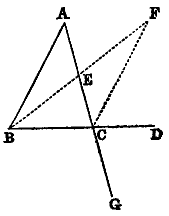
PROP. XVI.—Theorem.
If any side (BC) of a triangle (ABC) be produced, the exterior angle (ACD) is greater than either of the interior non-adjacent angles.
Dem.—Bisect AC in E [x.]. Join BE (Post. i.). Produce it, and from the produced part cut off EF equal to BE [iii]. Join CF. Now because EC is equal to EA (const.), and EF is equal to EB, the triangles CEF, AEB have the sides CE, EF in one equal to the sides AE, EB in the other; and the angle CEF equal to AEB [xv.]. Therefore [iv.] the angle ECF is equal to EAB; but the angle ACD is greater than ECF; therefore the angle ACD is greater than EAB.
In like manner it may be shown, if the side AC be produced, that the exterior angle BCG is greater than the angle ABC; but BCG is equal to ACD [xv.]. Hence ACD is greater than ABC. Therefore ACD is greater than either of the interior non-adjacent angles A or B of the triangle ABC.
Cor. 1.—The sum of the three interior angles of the triangle BCF is equal to the sum of the three interior angles of the triangle ABC.
Cor. 2.—The area of BCF is equal to the area of ABC.
Cor. 3.—The lines BA and CF, if produced, cannot meet at any finite distance. For, if they met at any finite point X, the triangle CAX would have an exterior angle BAC equal to the interior angle ACX.
PROP. XVII.—Theorem.
Any two angles (B, C) of a triangle (ABC) are together less than two right angles.
Dem.—Produce BC to D; then the exterior angle ACD is greater than ABC [xvi.]: to each add the angle ACB, and we have the sum of the angles ACD, ACB greater than the sum of the angles ABC, ACB; but the sum of the angles ACD, ACB is two right angles [xiii.]. Therefore the sum of the angles ABC, ACB is less than two right angles.
In like manner we may show that the sum of the angles A, B, or of the angles A, C, is less than two right angles.
Cor. 1.—Every triangle must have at least two acute angles.
Cor. 2.—If two angles of a triangle be unequal, the lesser must be acute.
Exercise.
Prove Prop. xvii. without producing a side.
PROP. XVIII.—Theorem.
If in any triangle (ABC) one side (AC) be greater than another (AB), the angle opposite to the greater side is grater than the angle opposite to the less.
Dem.—From AC cut off AD equal to AB [iii]. Join BD (Post. i.). Now since AB is equal to AD, the triangle ABD is isosceles; therefore [v.] the angle ADB is equal to ABD; but the angle ADB is greater than the angle ACB [xvi.]; therefore ABD is greater than ACB. Much more is the angle ABC greater than the angle ACB.
Or thus: From A as centre, with the lesser side AB as radius, describe the circle BED, cutting BC in E. Join AE. Now since AB is equal to AE, the angle AEB is equal to ABE; but AEB is greater than ACB (xvi.); therefore ABE is greater than ACB.
Exercises.
1. If in the second method the circle cut the line CB produced through B, prove the Proposition.
2. This Proposition may be proved by producing the less side.
3. If two of the opposite sides of a quadrilateral be respectively the greatest and least, the angles adjacent to the least are greater than their opposite angles.
4. In any triangle, the perpendicular from the vertex opposite the side which is not less than either of the remaining sides falls within the triangle.
PROP. XIX.—Theorem.
If one angle (B) of a triangle (ABC) be greater than another angle (C), the side (AC) which it opposite to the greater angle is greater than the side (AB) which is opposite to the less.
Dem.—If AC be not greater than AB, it must be either equal to it or less than it. Let us examine each case:—
1. If AC were equal to AB, the triangle ACB would be isosceles, and then the angle B would be equal to C [v.]; but it is not by hypothesis; therefore AB is not equal to AC.
2. If AC were less than AB, the angle B would be less than the angle C [xviii.]; but it is not by hypothesis; therefore AC is not less than AB; and since AC is neither equal to AB nor less than it, it must be greater.
Exercises.
1. Prove this Proposition by a direct demonstration.
2. A line from the vertex of an isosceles triangle to any point in the base is less than either of the equal sides, but greater if the point be in the base produced.
3. Three equal lines could not be drawn from the same point to the same line.
4. The perpendicular is the least line which can be drawn from a given point to a given line; and of all others that may be drawn to it, that which is nearest to the perpendicular is less than any one more remote.
5. If in the fig., Prop. xvi., AB be the greatest side of the △ ABC, BF is the greatest side of the △ FBC, and the angle BFC is less than half the angle ABC.
6. If ABC be a △ having AB not greater than AC, a line AG, drawn from A to any point G in BC, is less than AC. For the angle ACB [xviii.] is not greater than ABC; but AGC [xvi.] is greater than ABC; therefore AGC is greater than ACG. Hence AC is greater than AG.
PROP. XX.—Theorem.
The sum of any two sides (BA, AC) of a triangle (ABC) is greater than the third.
Dem.—Produce BA to D (Post. ii.), and make AD equal to AC [iii.]. Join CD. Then because AD is equal to AC, the angle ACD is equal to ADC (v.); therefore the angle BCD is greater than the angle BDC; hence the side BD opposite to the greater angle is greater than BC opposite to the less [xix.]. Again, since AC is equal to AD, adding BA to both, we have the sum of the sides BA, AC equal to BD. Therefore the sum of BA, AC is greater than BC.
Or thus: Bisect the angle BAC by AE [ix.] Then the angle BEA is greater than EAC; but EAC = EAB (const.); therefore the angle BEA is greater than EAB. Hence AB is greater than BE [xix.]. In like manner AC is greater than EC. Therefore the sum of BA, AC is greater than BC.
Exercises.
1. In any triangle, the difference between any two sides is less than the third.
2. If any point within a triangle be joined to its angular points, the sum of the joining lines is greater than its semiperimeter.
3. If through the extremities of the base of a triangle, whose sides are unequal, lines be drawn to any point in the bisector of the vertical angle, their difference is less than the difference of the sides.
4. If the lines be drawn to any point in the bisector of the external vertical angle, their sum is greater than the sum of the sides.
5. Any side of any polygon is less than the sum of the remaining sides.
6. The perimeter of any triangle is greater than that of any inscribed triangle, and less than that of any circumscribed triangle.
7. The perimeter of any polygon is greater than that of any inscribed, and less than that of any circumscribed, polygon of the same number of sides.
8. The perimeter of a quadrilateral is greater than the sum of its diagonals.
Def.—A line drawn from any angle of a triangle to the middle point of the opposite side is called a median of the triangle.
9. The sum of the three medians of a triangle is less than its perimeter.
10. The sum of the diagonals of a quadrilateral is less than the sum of the lines which can be drawn to its angular points from any point except the intersection of the diagonals.
PROP. XXI.—Theorem.
If two lines (BD, CD) be drawn to a point (D) within a triangle from the extremities of its base (BC), their sum is less than the sum of the remaining sides (BA, CA), but they contain a greater angle.
Dem.—1. Produce BD (Post. ii.) to meet AC in E. Then, in the triangle BAE, the sum of the sides BA, AE is greater than the side BE [xx.]: to each add EC, and we have the sum of BA, AC greater than the sum of BE, EC. Again, the sum of the sides DE, EC of the triangle DEC is greater than DC: to each add BD, and we get the sum of BE, EC greater than the sum of BD, DC; but it has been proved that the sum of BA, AC is greater than the sum of BE, EC. Therefore much more is the sum of BA, AC greater than the sum of BD, DC.
2. The external angle BDC of the triangle DEC is greater than the internal angle BEC [xvi.], and the angle BEC, for a like reason, is greater than BAC. Therefore much more is BDC greater than BAC.
Part 2 may be proved without producing either of the sides BD, DC. Thus: join AD and produce it to meet BC in F; then the angle BDF is greater than the angle BAF [xvi.], and FDC is greater than FAC. Therefore the whole angle BDC is greater than BAC.
Exercises.
1. The sum of the lines drawn from any point within a triangle to its angular points is less than the perimeter. (Compare Ex. 2, last Prop.)
2. If a convex polygonal line ABCD lie within a convex polygonal line AMND terminating in the same extremities, the length of the former is less than that of the latter.
PROP. XXII.—Problem.
To construct a triangle whose three sides shall be respectively equal to three given lines (A, B, C), the sum of every two of which is greater than the third.
Sol.—Take any right line DE, terminated at D, but unlimited towards E, and cut off [iii.] DF equal to A, FG equal to B, and GH equal to C. With F as centre, and FD as radius, describe the circle KDL (Post. iii.); and with G as centre, and GH as radius, describe the circle KHL, intersecting the former circle in K. Join KF, KG. KFG is the triangle required.
Dem.—Since F is the centre of the circle KDL, FK is equal to FD; but FD is equal to A (const.); therefore (Axiom i.) FK is equal to A. In like manner GK is equal to C, and FG is equal to B (const.) Hence the three sides of the triangle KFG are respectively equal to the three lines A, B, C.
Questions for Examination.
1. What is the reason for stating in the enunciation that the sum of every two of the given lines must be greater than the third?
2. Prove that when that condition is fulfilled the two circles must intersect.
3. Under what conditions would the circles not intersect?
4. If the sum of two of the lines were equal to the third, would the circles meet? Prove that they would not intersect.
PROP. XXIII.—Problem.
At a given point (A) in a given right line (AB) to make an angle equal to a given rectilineal angle (DEF).
Sol.—In the sides ED, EF of the given angle take any arbitrary points D and F. Join DF, and construct [xxii.] the triangle BAC, whose sides, taken in order, shall be equal to those of DEF—namely, AB equal to ED, AC equal to EF, and CB equal to FD; then the angle BAC will [viii.] be equal to DEF. Hence it is the required angle.
Exercises.
1. Construct a triangle, being given two sides and the angle between them.
2. Construct a triangle, being given two angles and the side between them.
3. Construct a triangle, being given two sides and the angle opposite to one of them.
4. Construct a triangle, being given the base, one of the angles at the base, and the sum or difference of the sides.
5. Given two points, one of which is in a given line, it is required to find another point in the given line, such that the sum or difference of its distances from the former points may be given. Show that two such points may be found in each case.
PROP. XXIV.—Theorem.
If two triangles (ABC, DEF) have two sides (AB, AC) of one respectively equal to two sides (DE, DF) of the other, but the contained angle (BAC) of one greater than the contained angle (EDF) of the other, the base of that which has the greater angle is greater than the base of the other.
Dem.—Of the two sides AB, AC, let AB be the one which is not the greater, and with it make the angle BAG equal to EDF [xxiii.]. Then because AB is not greater than AC, AG is less than AC [xix., Exer. 6]. Produce AG to H, and make AH equal to DF or AC [iii.]. Join BH, CH.
In the triangles BAH, EDF, we have AB equal to DE (hyp.), AH equal to DF (const.), and the angle BAH equal to the angle EDF (const.); therefore the base [iv.] BH is equal to EF. Again, because AH is equal to AC (const.), the triangle ACH is isosceles; therefore the angle ACH is equal to AHC [v.]; but ACH is greater than BCH; therefore AHC is greater than BCH: much more is the angle BHC greater than BCH, and the greater angle is subtended by the greater side [xix.]. Therefore BC is greater than BH; but BH has been proved to be equal to EF; therefore BC is greater than EF.
The concluding part of this Proposition may be proved without joining CH, thus:—
| BG + GH > BH [xx.], | ||
| AG + GC > AC [xx.]; | ||
| therefore | BC + AH > BH + AC; | |
| but | AH = AC (const.); | |
| therefore |
BC is > BH.
|
Or thus: Bisect the angle CAH by AO. Join OH. Now in the △s CAO, HAO we have the sides CA, AO in one equal to the sides AH, AO in the other, and the contained angles equal; therefore the base OC is equal to the base OH [iv.]: to each add BO, and we have BC equal to the sum of BO, OH; but the sum of BO, OH is greater than BH [xx.]. Therefore BC is greater than BH, that is, greater than EF.
Exercises.
1. Prove this Proposition by making the angle ABH to the left of AB.
2. Prove that the angle BCA is greater than EFD.
PROP. XXV.—Theorem.
If two triangles (ABC, DEF) have two sides (AB, AC) of one respectively equal to two sides (DE, DF) of the other, but the base (BC) of one greater than the base (EF) of the other, the angle (A) contained by the sides of that which has the greater base is greater them the angle (D) contained by the sides of the other.
Dem.—If the angle A be not greater than D, it must be either equal to it or less than it. We shall examine each case:—
1. If A were equal to D, the triangles ABC, DEF would have the two sides AB, AC of one respectively equal to the two sides DE, DF of the other, and the angle A contained by the two sides of one equal to the angle D contained by the two sides of the other. Hence [iv.] BC would be equal to EF; but BC is, by hypothesis, greater than EF; hence the angle A is not equal to the angle D.
2. If A were less than D, then D would be greater than A, and the triangles DEF, ABC would have the two sides DE, DF of one respectively equal to the two sides AB, AC of the other, and the angle D contained by the two sides of one greater than the angle A contained by the two sides of the other. Hence [xxiv.] EF would be greater than BC; but EF (hyp.) is not greater than BC. Therefore A is not less than D, and we have proved that it is not equal to it; therefore it must be greater.
Or thus, directly: Construct the triangle ACG, whose three sides AG, GC, CA shall be respectively equal to the three sides DE, EF, FD of the triangle DEF [xxii.]. Join BG. Then because BC is greater than EF, BC is greater than CG. Hence [xviii.] the angle BGC is greater than GBC; and make (xxiii.) the angle BGH equal to GBH, and join AH. Then [vi.] BH is equal to GH. Therefore the triangles ABH, AGH have the sides AB, AH of one equal to the sides AG, AH of the other, and the base BH equal to GH. Therefore [viii.] the angle BAH is equal to GAH. Hence the angle BAC is greater than CAG, and therefore greater than EDF.
Exercise.
Demonstrate this Proposition directly by cutting off from BC a part equal to EF.
PROP. XXVI.—Theorem.
If two triangles (ABC, DEF) have two angles (B, C) of one equal respectively to two angles (E, F) of the other, and a side of one equal to a side similarly placed with respect to the equal angles of the other, the triangles are equal in every respect.
Dem.—This Proposition breaks up into two according as the sides given to be equal are the sides adjacent to the equal angles, namely BC and EF, or those opposite equal angles.
1. Let the equal sides be BC and EF; then if DE be not equal to AB, suppose GE to be equal to it. Join GF; then the triangles ABC, GEF have the sides AB, BC of one respectively equal to the sides GE, EF of the other, and the angle ABC equal to the angle GEF (hyp.); therefore [iv.] the angle ACB is equal to the angle GFE; but the angle ACB is (hyp.) equal to DFE; hence GFE is equal to DFE—a part equal to the whole, which is absurd; therefore AB and DE are not unequal, that is, they are equal. Consequently the triangles ABC, DEF have the sides AB, BC of one respectively equal to the sides DE, EF of the other; and the contained angles ABC and DEF equal; therefore [iv.] AC is equal to DF, and the angle BAC is equal to the angle EDF.
2. Let the sides given to be equal be AB and DE; it is required to prove that BC is equal to EF, and AC to DF. If BC be not equal to EF, suppose BG to be equal to it. Join AG. Then the triangles ABG, DEF have the two sides AB, BG of one respectively equal to the two sides DE, EF of the other, and the angle ABG equal to the angle DEF; therefore [iv.] the angle AGB is equal to DFE; but the angle ACB is equal to DFE (hyp.). Hence (Axiom i.) the angle AGB is equal to ACB, that is, the exterior angle of the triangle ACG is equal to the interior and non-adjacent angle, which [xvi.] is impossible. Hence BC must be equal to EF, and the same as in 1, AC is equal to DF, and the angle BAC is equal to the angle EDF.
This Proposition, together with iv. and viii., includes all the cases of the congruence of two triangles. Part I. may be proved immediately by superposition. For it is evident if ABC be applied to DEF, so that the point B shall coincide with E, and the line BC with EF, since BC is equal to EF, the point C shall coincide with F; and since the angles B, C are respectively equal to the angles E, F, the lines BA, CA shall coincide with ED and FD. Hence the triangles are congruent.
Def.—If every point on a geometrical figure satisfies an assigned condition, that figure is called the locus of the point satisfying the condition. Thus, for example, a circle is the locus of a point whose distance from the centre is equal to its radius.
Exercises.
1. The extremities of the base of an isosceles triangle are equally distant from any point in the perpendicular from the vertical angle on the base.
2. If the line which bisects the vertical angle of a triangle also bisects the base, the triangle is isosceles.
3. The locus of a point which is equally distant from two fixed lines is the pair of lines which bisect the angles made by the fixed lines.
4. In a given right line find a point such that the perpendiculars from it on two given lines may be equal. State also the number of solutions.
5. If two right-angled triangles have equal hypotenuses, and an acute angle of one equal to an acute angle of the other, they are congruent.
6. If two right-angled triangles have equal hypotenuses, and a side of one equal to a side of the other, they are congruent.
7. The bisectors of the three internal angles of a triangle are concurrent.
8. The bisectors of two external angles and the bisector of the third internal angle are concurrent.
9. Through a given point draw a right line, such that perpendiculars on it from two given points on opposite sides may be equal to each other.
10. Through a given point draw a right line intersecting two given lines, and forming an isosceles triangle with them.
Def. i.—If two right lines in the same plane be such that, when produced indefinitely, they do not meet at any finite distance, they are said to be parallel.
Def. ii.—A parallelogram is a quadrilateral, both pairs of whose opposite sides are parallel.
Def. iii.—The right line joining either pair of opposite angles of a quadrilateral is called a diagonal.
Def. iv.—If both pairs of opposite sides of a quadrilateral be produced to meet, the right line joining their points of intersection is called its third diagonal.
Def. v.—A quadrilateral which has one pair of opposite sides parallel is called a trapezium.
Def. vi.—If from the extremities of one right line perpendiculars be drawn to another, the intercept between their feet is called the projection of the first line on the second.
Def. vii.—When a right line intersects two other right lines in two distinct points it makes with them eight angles, which have received special names in relation to one another. Thus, in the figure—1, 2; 7, 8 are called exterior angles; 3, 4; 5, 6, interior angles. Again, 4; 6; 3, 5 are called alternate angles; lastly, 1, 5; 2, 6; 3, 8; 4, 7 are called corresponding angles.
PROP. XXVII.—Theorem.
If a right line (EF) intersecting two right lines (AB, CD) makes the alternate angles (AEF, EFD) equal to each other, these lines are parallel.
Dem.—If AB and CD are not parallel they must meet, if produced, at some finite distance: if possible let them meet in G; then the figure EGF is a triangle, and the angle AEF is an exterior angle, and EFD a non-adjacent interior angle. Hence [xvi.] AEF is greater than EFD; but it is also equal to it (hyp.), that is, both equal and greater, which is absurd. Hence AB and CD are parallel.
Or thus: Bisect EF in O; turn the whole figure round O as a centre, so that EF shall fall on itself; then because OE = OF, the point E shall fall on F; and because the angle AEF is equal to the angle EFD, the line EA will occupy the place of FD, and the line FD the place of EA; therefore the lines AB, CD interchange places, and the figure is symmetrical with respect to the point O. Hence, if AB, CD meet on one side of O, they must also meet on the other side; but two right lines cannot enclose a space (Axiom x.); therefore they do not meet at either side. Hence they are parallel.
PROP. XXVIII.—Theorem.
If a right line (EF) intersecting two right lines (AB, CD) makes the exterior angle (EGB) equal to its corresponding interior angle (GHD), or makes two interior angles (BGH, GHD) on the same side equal to two right angles, the two right lines are parallel.
Dem.—1. Since the lines AB, EF intersect, the angle AGH is equal to EGB [xv.]; but EGB is equal to GHD (hyp.); therefore AGH is equal to GHD, and they are alternate angles. Hence [xxvii.] AB is parallel to CD.
2. Since AGH and BGH are adjacent angles, their sum is equal to two right angles [xiii.]; but the sum of BGH and GHD is two right angles (hyp.); therefore rejecting the angle BGH we have AGH equal GHD, and they are alternate angles; therefore AB is parallel to CD [xxvii.].
PROP. XXIX.—Theorem.
If a right line (EF) intersect two parallel right lines (AB, CD), it makes—1. the alternate angles (AGH,GHD) equal to one another; 2. the exterior angle (EGB) equal to the corresponding interior angle (GHD); 3. the two interior angles (BGH, GHD) on the same side equal to two right angles.
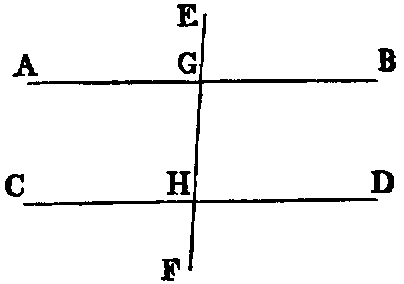
Dem.—If the angle AGH be not equal to GHD, one must be greater than the other. Let AGH be the greater; to each add BGH, and we have the sum of the angles AGH, BGH greater than the sum of the angles BGH, GHD; but the sum of AGH, BGH is two right angles; therefore the sum of BGH, GHD is less than two right angles, and therefore (Axiom xii.) the lines AB, CD, if produced, will meet at some finite distance: but since they are parallel (hyp.) they cannot meet at any finite distance. Hence the angle AGH is not unequal to GHD—that is, it is equal to it.
2. Since the angle EGB is equal to AGH [xv.], and GHD is equal to AGH (1), EGB is equal to GHD (Axiom i.).
3. Since AGH is equal to GHD (1), add HGB to each, and we have the sum of the angles AGH, HGB equal to the sum of the angles GHD, HGB; but the sum of the angles AGH, HGB [xiii.] is two right angles; therefore the sum of the angles BGH, GHD is two right angles.
Exercises.
1. Demonstrate both parts of Prop. xxviii. without using Prop. xxvii.
2. The parts of all perpendiculars to two parallel lines intercepted between them are equal.
3. If ACD, BCD be adjacent angles, any parallel to AB will meet the bisectors of these angles in points equally distant from where it meets CD.
4. If through the middle point O of any right line terminated by two parallel right lines any other secant be drawn, the intercept on this line made by the parallels is bisected in O.
5. Two right lines passing through a point equidistant from two parallels intercept equal portions on the parallels.
6. The perimeter of the parallelogram, formed by drawing parallels to two sides of an equilateral triangle from any point in the third side, is equal to twice the side.
7. If the opposite sides of a hexagon be equal and parallel, its diagonals are concurrent.
8. If two intersecting right lines be respectively parallel to two others, the angle between the former is equal to the angle between the latter. For if AB, AC be respectively parallel to DE, DF, and if AC, DE meet in G, the angles A, D are each equal to G [xxix.].
PROP. XXX.—Theorem.
If two right lines (AB, CD) be parallel to the same right line (EF), they are parallel to one another.
Dem.—Draw any secant GHK. Then since AB and EF are parallel, the angle AGH is equal to GHF [xxix.]. In like manner the angle GHF is equal to HKD [xxix.]. Therefore the angle AGK is equal to the angle GKD (Axiom i.). Hence [xxvii.] AB is parallel to CD.
PROP. XXXI.—Problem.
Through a given point (C) to draw a right line parallel to a given right line.
Sol.—Take any point D in AB. Join CD (Post. i.), and make the angle DCF equal to the angle ADC [xxiii.]. The line CE is parallel to AB [xxvii.].
Exercises.
1. Given the altitude of a triangle and the base angles, construct it.
2. From a given point draw to a given line a line making with it an angle equal to a given angle. Show that there will be two solutions.
3. Prove the following construction for trisecting a given line AB:—On AB describe an equilateral △ ABC. Bisect the angles A, B by the lines AD, BD, meeting in D; through D draw parallels to AC, BC, meeting AB in E, F: E, F are the points of trisection of AB.
4. Inscribe a square in a given equilateral triangle, having its base on a given side of the triangle.
5. Draw a line parallel to the base of a triangle so that it may be—1. equal to the intercept it makes on one of the sides from the extremity of the base; 2. equal to the sum of the two intercepts on the sides from the extremities of the base; 3. equal to their difference. Show that there are two solutions in each case.
6. Through two given points in two parallel lines draw two lines forming a lozenge with the given parallels.
7. Between two lines given in position place a line of given length which shall be parallel to a given line. Show that there are two solutions.
PROP. XXXII.—Theorem.
If any side (AB) of a triangle (ABC) be produced (to D), the external angle (CBD) is equal to the sum of the two internal non-adjacent angles (A, C), and the sum of the three internal angles is equal to two right angles.
Dem.—Draw BE parallel to AC [xxxi.]. Now since BC intersects the parallels BE, AC, the alternate angles EBC, ACB are equal [xxix.]. Again, since AB intersects the parallels BE, AC, the angle EBD is equal to BAC [xxix.]; hence the whole angle CBD is equal to the sum of the two angles ACB, BAC: to each of these add the angle ABC and we have the sum of CBD, ABC equal to the sum of the three angles ACB, BAC, ABC: but the sum of CBD, ABC is two right angles [xiii.]; hence the sum of the three angles ACB, BAC, ABC is two right angles.
Cor. 1.—If a right-angled triangle be isosceles, each base angle is half a right angle.
Cor. 2.—If two triangles have two angles in one respectively equal to two angles in the other, their remaining angles are equal.
Cor. 3.—Since a quadrilateral can be divided into two triangles, the sum of its angles is equal to four right angles.
Cor. 4.—If a figure of n sides be divided into triangles by drawing diagonals from any one of its angles there will be (n − 2) triangles; hence the sum of its angles is equal 2(n − 2) right angles.
Cor. 5.—If all the sides of any convex polygon be produced, the sum of the external angles is equal to four right angles.
Cor. 6.—Each angle of an equilateral triangle is two-thirds of a right angle.
Cor. 7.—If one angle of a triangle be equal to the sum of the other two, it is a right angle.
Cor. 8.—Every right-angled triangle can be divided into two isosceles triangles by a line drawn from the right angle to the hypotenuse.
Exercises.
1. Trisect a right angle.
2. Any angle of a triangle is obtuse, right, or acute, according as the opposite side is greater than, equal to, or less than, twice the median drawn from that angle.
3. If the sides of a polygon of n sides be produced, the sum of the angles between each alternate pair is equal to 2(n − 4) right angles.
4. If the line which bisects the external vertical angle be parallel to the base, the triangle is isosceles.
5. If two right-angled △s ABC, ABD be on the same hypotenuse AB, and the vertices C and D be joined, the pair of angles subtended by any side of the quadrilateral thus formed are equal.
6. The three perpendiculars of a triangle are concurrent.
7. The bisectors of two adjacent angles of a parallelogram are at right angles.
8. The bisectors of the external angles of a quadrilateral form a circumscribed quadrilateral, the sum of whose opposite angles is equal to two right angles.
9. If the three sides of one triangle be respectively perpendicular to those of another triangle, the triangles are equiangular.
10. Construct a right-angled triangle, being given the hypotenuse and the sum or difference of the sides.
11. The angles made with the base of an isosceles triangle by perpendiculars from its extremities on the equal sides are each equal to half the vertical angle.
12. The angle included between the internal bisector of one base angle of a triangle and the external bisector of the other base angle is equal to half the vertical angle.
13. In the construction of Prop. xviii. prove that the angle DBC is equal to half the difference of the base angles.
14. If A, B, C denote the angles of a △, prove that  (A + B),
(A + B),  (B + C), (C + A) will be the angles of a △ formed by any side and the bisectors of the external angles between that side and the other sides produced.
(B + C), (C + A) will be the angles of a △ formed by any side and the bisectors of the external angles between that side and the other sides produced.
PROP. XXXIII.—Theorem.
The right lines (AC, BD) which join the adjacent extremities of two equal and parallel right lines (AB, CD) are equal and parallel.
Dem.—Join BC. Now since AB is parallel to CD, and BC intersects them, the angle ABC is equal to the alternate angle DCB [xxix.]. Again, since AB is equal to CD, and BC common, the triangles ABC, DCB have the sides AB, BC in one respectively equal to the sides DC, CB in the other, and the angles ABC, DCB contained by those sides equal; therefore [iv.] the base AC is equal to the base BD, and the angle ACB is equal to the angle CBD; but these are alternate angles; hence [xxvii.] AC is parallel to BD, and it has been proved equal to it. Therefore AC is both equal and parallel to BD.
Exercises.
1. If two right lines AB, BC be respectively equal and parallel to two other right lines DE, EF, the right line AC joining the extremities of the former pair is equal to the right line DF joining the extremities of the latter.
2. Right lines that are equal and parallel have equal projections on any other right line; and conversely, parallel right lines that have equal projections on another right line are equal.
3. Equal right lines that have equal projections on another right line are parallel.
4. The right lines which join transversely the extremities of two equal and parallel right lines bisect each other.
PROP. XXXIV.—Theorem.
The opposite sides (AB, CD; AC, BD) and the opposite angles (A, D; B, C) of a parallelogram are equal to one another, and either diagonal bisects the parallelogram.
Dem.—Join BC. Since AB is parallel to CD, and BC intersects them, the angle ABC is equal to the angle BCD [xxix.]. Again, since BC intersects the parallels AC, BD, the angle ACB is equal to the angle CBD; hence the triangles ABC, DCB have the two angles ABC, ACB in one respectively equal to the two angles BCD, CBD in the other, and the side BC common. Therefore [xxvi.] AB is equal to CD, and AC to BD; the angle BAC to the angle BDC, and the triangle ABC to the triangle BDC.
Again, because the angle ACB is equal to CBD, and DCB equal to ABC, the whole angle ACD is equal to the whole angle ABD.
Cor. 1.—If one angle of a parallelogram be a right angle, all its angles are right angles.
Cor. 2.—If two adjacent sides of a parallelogram be equal, it is a lozenge.
Cor. 3.—If both pairs of opposite sides of a quadrilateral be equal, it is a parallelogram.
Cor. 4.—If both pairs of opposite angles of a quadrilateral be equal, it is a parallelogram.
Cor. 5.—If the diagonals of a quadrilateral bisect each other, it is a parallelogram.
Cor. 6.—If both diagonals of a quadrilateral bisect the quadrilateral, it is a parallelogram.
Cor. 7.—If the adjacent sides of a parallelogram be equal, its diagonals bisect its angles.
Cor. 8.—If the adjacent sides of a parallelogram be equal, its diagonals intersect at right angles.
Cor. 9.—In a right-angled parallelogram the diagonals are equal.
Cor. 10.—If the diagonals of a parallelogram be perpendicular to each other, it is a lozenge.
Cor. 11.—If a diagonal of a parallelogram bisect the angles whose vertices it joins, the parallelogram is a lozenge.
Exercises.
1. The diagonals of a parallelogram bisect each other.
2. If the diagonals of a parallelogram be equal, all its angles are right angles.
3. Divide a right line into any number of equal parts.
4. The right lines joining the adjacent extremities of two unequal parallel right lines will meet, if produced, on the side of the shorter parallel.
5. If two opposite sides of a quadrilateral be parallel but not equal, and the other pair equal but not parallel, its opposite angles are supplemental.
6. Construct a triangle, being given the middle points of its three sides.
7. The area of a quadrilateral is equal to the area of a triangle, having two sides equal to its diagonals, and the contained angle equal to that between the diagonals.
PROP. XXXV.—Theorem.
Parallelograms on the same base (BC) and between the same parallels are equal.
Dem.—1. Let the sides AD, DF of the parallelograms AC, BF opposite to the common base BC terminate in the same point D, then [xxxiv.] each parallelogram is double of the triangle BCD. Hence they are equal to one another.
2. Let the sides AD, EF (figures (α), (β)) opposite to BC not terminate in the same point.
Then because ABCD is a parallelogram, AD is equal to BC [xxxiv.]; and since BCEF is a parallelogram, EF is equal to BC; therefore (see fig. (α)) take away ED, and in fig. (β) add ED, and we have in each case AE equal to DF, and BA is equal to CD [xxxiv.]. Hence the triangles BAE, CDF have the two sides BA, AE in one respectively equal to the two sides CD, DF in the other, and the angle BAE [xxix.] equal to the angle CDF; hence [iv.] the triangle BAE is equal to the triangle CDF; and taking each of these triangles in succession from the quadrilateral BAFC, there will remain the parallelogram BCFE equal to the parallelogram BCDA.
Or thus: The triangles ABE, DCF have [xxxiv.] the sides AB, BE in one respectively equal to the sides DC, CF in the other, and the angle ABE equal to the angle DCF [xxix., Ex. 8]. Hence the triangle ABE is equal to the triangle DCF; and, taking each away from the quadrilateral BAFC, there will remain the parallelogram BCFE equal to the parallelogram BCDA.
Observation.—By the second method of proof the subdivision of the demonstration into cases is avoided. It is easy to see that either of the two parallelograms ABCD, EBCF can be divided into parts and rearranged so as to make it congruent with the other. This Proposition affords the first instance in the Elements in which equality which is not congruence occurs. This equality is expressed algebraically by the symbol =, while congruence is denoted by ≡, called also the symbol of identity. Figures that are congruent are said to be identically equal.
PROP. XXXVI.—Theorem.
Parallelograms (BD, FH) on equal bases (BC, FG) and between the same parallels are equal.
Dem.—Join BE, CH. Now since FH is a parallelogram, FG is equal to EH [xxxiv.]; but BC is equal to FG (hyp.); therefore BC is equal to EH (Axiom i.). Hence BE, CH, which join their adjacent extremities, are equal and parallel; therefore BH is a parallelogram. Again, since the parallelograms BD, BH are on the same base BC, and between the same parallels BC, AH, they are equal [xxxv.]. In like manner, since the parallelograms HB, HF are on the same base EH, and between the same parallels EH, BG, they are equal. Hence BD and FH are each equal to BH. Therefore (Axiom i.) BD is equal to FH.
Exercise.—Prove this Proposition without joining BE, CH.
PROP. XXXVII.—Theorem.
Triangles (ABC, DBC) on the same base (BC) and between the same parallels (AD, BC) are equal.
Dem.—Produce AD both ways. Draw BE parallel to AC, and CF parallel to BD [xxxi.] Then the figures AEBC, DBCF are parallelograms; and since they are on the same base BC, and between the same parallels BC, EF they are equal [xxxv.]. Again, the triangle ABC is half the parallelogram AEBC [xxxiv.], because the diagonal AB bisects it. In like manner the triangle DBC is half the parallelogram DBCF, because the diagonal DC bisects it, and halves of equal things are equal (Axiom vii.). Therefore the triangle ABC is equal to the triangle DBC.
Exercises.
1. If two equal triangles be on the same base, but on opposite sides, the right line joining their vertices is bisected by the base.
2. Construct a triangle equal in area to a given quadrilateral figure.
3. Construct a triangle equal in area to a given rectilineal figure.
4. Construct a lozenge equal to a given parallelogram, and having a given side of the parallelogram for base.
5. Given the base and the area of a triangle, find the locus of the vertex.
6. If through a point O, in the production of the diagonal AC of a parallelogram ABCD, any right line be drawn cutting the sides AB, BC in the points E, F, and ED, FD be joined, the triangle EFD is less than half the parallelogram.
PROP. XXXVIII.—Theorem.
Two triangles on equal bases and between the same parallels are equal.
Dem.—By a construction similar to the last, we see that the triangles are the halves of parallelograms, on equal bases, and between the same parallels. Hence they are the halves of equal parallelograms [xxxvi.]. Therefore they are equal to one another.
Exercises.
1. Every median of a triangle bisects the triangle.
2. If two triangles have two sides of one respectively equal to two sides of the other, and the contained angles supplemental, their areas are equal.
3. If the base of a triangle be divided into any number of equal parts, right lines drawn from the vertex to the points of division will divide the whole triangle into as many equal parts.
4. Right lines from any point in the diagonal of a parallelogram to the angular points through which the diagonal does not pass, and the diagonal, divide the parallelogram into four triangles which are equal, two by two.
5. If one diagonal of a quadrilateral bisects the other, it also bisects the quadrilateral, and conversely.
6. If two △s ABC, ABD be on the same base AB, and between the same parallels, and if a parallel to AB meet the sides AC, BC in the point E, F; and the sides AD, BD in the point G, H; then EF = GH.
7. If instead of triangles on the same base we have triangles on equal bases and between the same parallels, the intercepts made by the sides of the triangles on any parallel to the bases are equal.
8. If the middle points of any two sides of a triangle be joined, the triangle so formed with the two half sides is one-fourth of the whole.
9. The triangle whose vertices are the middle points of two sides, and any point in the base of another triangle, is one-fourth of that triangle.
10. Bisect a given triangle by a right line drawn from a given point in one of the sides.
11. Trisect a given triangle by three right lines drawn from a given point within it.
12. Prove that any right line through the intersection of the diagonals of a parallelogram bisects the parallelogram.
13. The triangle formed by joining the middle point of one of the non-parallel sides of a trapezium to the extremities of the opposite side is equal to half the trapezium.
PROP. XXXIX.—Theorem.
Equal triangles (BAC, BDC) on the same base (BC) and on the same side of it are between the same parallels.
Dem.—Join AD. Then if AD be not parallel to BC, let AE be parallel to it, and let it cut BD in E. Join EC. Now since the triangles BEC, BAC are on the same base BC, and between the same parallels BC, AE, they are equal [xxxvii.]; but the triangle BAC is equal to the triangle BDC (hyp.). Therefore (Axiom i.) the triangle BEC is equal to the triangle BDC—that is, a part equal to the whole which is absurd. Hence AD must be parallel to BC.
PROP. XL.—Theorem.
Equal triangles (ABC, DEF) on equal bases (BC, EF) which form parts of the same right line, and on the same side of the line, are between the same parallels.
Dem.—Join AD. If AD be not parallel to BF, let AG be parallel to it. Join GF. Now since the triangles GEF and ABC are on equal bases BC, EF, and between the same parallels BF, AG, they are equal [xxxviii.]; but the triangle DEF is equal to the triangle ABC (hyp.). Hence GEF is equal to DEF (Axiom i.)—that is, a part equal to the whole, which is absurd. Therefore AD must be parallel to BF.
Def.—The altitude of a triangle is the perpendicular from the vertex on the base.
Exercises.
1. Triangles and parallelograms of equal bases and altitudes are respectively equal.
2. The right line joining the middle points of two sides of a triangle is parallel to the third; for the medians from the extremities of the base to these points will each bisect the original triangle. Hence the two triangles whose base is the third side and whose vertices are the points of bisection are equal.
3. The parallel to any side of a triangle through the middle point of another bisects the third.
4. The lines of connexion of the middle points of the sides of a triangle divide it into four congruent triangles.
5. The line of connexion of the middle points of two sides of a triangle is equal to half the third side.
6. The middle points of the four sides of a convex quadrilateral, taken in order, are the angular points of a parallelogram whose area is equal to half the area of the quadrilateral.
7. The sum of the two parallel sides of a trapezium is double the line joining the middle points of the two remaining sides.
8. The parallelogram formed by the line of connexion of the middle points of two sides of a triangle, and any pair of parallels drawn through the same points to meet the third side, is equal to half the triangle.
9. The right line joining the middle points of opposite sides of a quadrilateral, and the right line joining the middle points of its diagonals, are concurrent.
PROP. XLI.—Theorem.
If a parallelogram (ABCD) and a triangle (EBC) be on the same base (BC) and between the same parallels, the parallelogram is double of the triangle.
Dem.—Join AC. The parallelogram ABCD is double of the triangle ABC [xxxiv.]; but the triangle ABC is equal to the triangle EBC [xxxvii.]. Therefore the parallelogram ABCD is double of the triangle EBC.
Cor. 1.—If a triangle and a parallelogram have equal altitudes, and if the base of the triangle be double of the base of the parallelogram, the areas are equal.
Cor. 2.—The sum of the triangles whose bases are two opposite sides of a parallelogram, and which have any point between these sides as a common vertex, is equal to half the parallelogram.
PROP. XLII.—Problem.
To construct a parallelogram equal to a given triangle (ABC), and having an angle equal to a given angle (D).
Sol.—Bisect AB in E. Join EC. Make the angle BEF [xxiii.] equal to D. Draw CG parallel to AB [xxxi.], and BG parallel to EF. EG is a parallelogram fulfilling the required conditions.
Dem.—Because AE is equal to EB (const.), the triangle AEC is equal to the triangle EBC [xxxviii.], therefore the triangle ABC is double of the triangle EBC; but the parallelogram EG is also double of the triangle EBC [xli.], because they are on the same base EB, and between the same parallels EB and CG. Therefore the parallelogram EG is equal to the triangle ABC, and it has (const.) the angle BEF equal to D. Hence EG is a parallelogram fulfilling the required conditions.
PROP. XLIII.—Theorem.
The parallels (EF, GH) through any point (K) in one of the diagonals (AC) of a parallelogram divide it into four parallelograms, of which the two (BK, KD) through which the diagonal does not pass, and which are called the complements of the other two, are equal.
Dem.—Because the diagonal bisects the parallelograms AC, AK, KC we have [xxxiv.] the triangle ADC equal to the triangle ABC, the triangle AHK equal to AEK, and the triangle KFC equal to the triangle KGC. Hence, subtracting the sums of the two last equalities from the first, we get the parallelogram DK equal to the parallelogram KB.
Cor. 1.—If through a point K within a parallelogram ABCD lines drawn parallel to the sides make the parallelograms DK, KB equal, K is a point in the diagonal AC.
Cor. 2.—The parallelogram BH is equal to AF, and BF to HC.
Cor. 2. supplies an easy demonstration of a fundamental Proposition in Statics.
Exercises.
1. If EF, GH be parallels to the adjacent sides of a parallelogram ABCD, the diagonals EH, GF of two of the four s into which they divide it and one of the diagonals of ABCD are concurrent.
Dem.—Let EH, GF meet in M; through M draw MP, MJ parallel to AB, BC. Produce AD, GH, BC to meet MP, and AB, EF, DC to meet MJ. Now the complement OF = FJ: to each add the FL, and we get the figure OFL = CJ. Again, the complement PH = HK [xliii.]: to each add the OC, and we get the PC = figure OFL. Hence the PC = CJ. Therefore they are about the same diagonal [xliii., Cor. 1]. Hence AC produced will pass through M.
2. The middle points of the three diagonals AC, BD, EF of a quadrilateral ABCD are collinear.

Dem.—Complete the AEBG. Draw DH, CI parallel to AG, BG. Join IH, and produce; then AB, CD, IH are concurrent (Ex. 1); therefore IH will pass through F. Join EI, EH. Now [xi., Ex. 2, 3] the middle points of EI, EH, EF are collinear, but [xxxiv., Ex. 1] the middle points of EI, EH are the middle points of AC, BD. Hence the middle points of AC, BD, EF are collinear.
PROP. XLIV.—Problem.
To a given, right line (AB) to apply a parallelogram which shall be equal to a given triangle (C), and have one of its angles equal to a given angle (D).
Sol.—Construct the parallelogram BEFG [xlii.] equal to the given triangle C, and having the angle B equal to the given angle D, and so that its side BE shall be in the same right line with AB. Through A draw AH parallel to BG [xxxi.], and produce FG to meet it in H. Join HB. Then because HA and FE are parallels, and HF intersects them, the sum of the angles AHF, HFE is two right angles [xxix.]; therefore the sum of the angles BHF, HFE is less than two right angles; and therefore (Axiom xii.) the lines HB, FE, if produced, will meet as at K. Through K draw KL parallel to AB [xxxi.], and produce HA and GB to meet it in the points L and M. Then AM is a parallelogram fulfilling the required conditions.
Dem.—The parallelogram AM is equal to GE [xliii.]; but GE is equal to the triangle C (const.); therefore AM is equal to the triangle C. Again, the angle ABM is equal to EBG [xv.], and EBG is equal to D (const.); therefore the angle ABM is equal to D; and AM is constructed on the given line; therefore it is the parallelogram required.
PROP. XLV.—Problem.
To construct a parallelogram equal to a given rectilineal figure (ABCD), and having an angle equal to a given rectilineal angle (X).
Sol.—Join BD. Construct a parallelogram EG [xlii.] equal to the triangle ABD, and having the angle E equal to the given angle X; and to the right line GH apply the parallelogram HI equal to the triangle BCD, and having the angle GHK equal to X [xliv.], and so on for additional triangles if there be any. Then EI is a parallelogram fulfilling the required conditions.
Dem.—Because the angles GHK, FEH are each equal to X (const.), they are equal to one another: to each add the angle GHE, and we have the sum of the angles GHK, GHE equal to the sum of the angles FEH, GHE; but since HG is parallel to EF, and EH intersects them, the sum of FEH, GHE is two right angles [xxix.]. Hence the sum of GHK, GHE is two right angles; therefore EH, HK are in the same right line [xiv.].
Again, because GH intersects the parallels FG, EK, the alternate angles FGH, GHK are equal [xxix.]: to each add the angle HGI, and we have the sum of the angles FGH, HGI equal to the sum of the angles GHK, HGI; but since GI is parallel to HK, and GH intersects them, the sum of the angles GHK, HGI is equal to two right angles [xxix.]. Hence the sum of the angles FGH, HGI is two right angles; therefore FG and GI are in the same right line [xiv.].
Again, because EG and HI are parallelograms, EF and KI are each parallel to GH; hence [xxx.] EF is parallel to KI, and the opposite sides EK and FI are parallel; therefore EI is a parallelogram; and because the parallelogram EG (const.) is equal to the triangle ABD, and HI to the triangle BCD, the whole parallelogram EI is equal to the rectilineal figure ABCD, and it has the angle E equal to the given angle X. Hence EI is a parallelogram fulfilling the required conditions.
It would simplify Problems xliv., xlv., if they were stated as the constructing of rectangles, and in this special form they would be better understood by the student, since rectangles are the simplest areas to which others are referred.
Exercises.
1. Construct a rectangle equal to the sum of two or any number of rectilineal figures.
2. Construct a rectangle equal to the difference of two given figures.
PROP. XLVI.—Problem.
On a given right line (AB) to describe a square.
Sol.—Erect AD at right angles to AB [xi.], and make it equal to AB [iii.]. Through D draw DC parallel to AB [xxxi.], and through B draw BC parallel to AD; then AC is the square required.
Dem.—Because AC is a parallelogram, AB is equal to CD [xxxiv.]; but AB is equal to AD (const.); therefore AD is equal to CD, and AD is equal to BC [xxxiv.]. Hence the four sides are equal; therefore AC is a lozenge, and the angle A is a right angle. Therefore AC is a square (Def. xxx.).
Exercises.
1. The squares on equal lines are equal; and, conversely, the sides of equal squares are equal.
2. The parallelograms about the diagonal of a square are squares.
3. If on the four sides of a square, or on the sides produced, points be taken equidistant from the four angles, they will be the angular points of another square, and similarly for a regular pentagon, hexagon, &c.
4. Divide a given square into five equal parts; namely, four right-angled triangles, and a square.
PROP. XLVII.—Theorem.
In a right-angled triangle (ABC) the square on the hypotenuse (AB) is equal to the sum of the squares on the other two sides (AC, BC).
Dem.—On the sides AB, BC, CA describe squares [xlvi.]. Draw CL parallel to AG. Join CG, BK. Then because the angle ACB is right (hyp.), and ACH is right, being the angle of a square, the sum of the angles ACB, ACH is two right angles; therefore BC, CH are in the same right line [xiv.]. In like manner AC, CD are in the same right line. Again, because BAG is the angle of a square it is a right angle: in like manner CAK is a right angle. Hence BAG is equal to CAK: to each add BAC, and we get the angle CAG equal to KAB. Again, since BG and CK are squares, BA is equal to AG, and CA to AK. Hence the two triangles CAG, KAB have the sides CA, AG in one respectively equal to the sides KA, AB in the other, and the contained angles CAG, KAB also equal. Therefore [iv.] the triangles are equal; but the parallelogram AL is double of the triangle CAG [xli.], because they are on the same base AG, and between the same parallels AG and CL. In like manner the parallelogram AH is double of the triangle KAB, because they are on the same base AK, and between the same parallels AK and BH; and since doubles of equal things are equal (Axiom vi.), the parallelogram AL is equal to AH. In like manner it can be proved that the parallelogram BL is equal to BD. Hence the whole square AF is equal to the sum of the two squares AH and BD.
Or thus: Let all the squares be made in reversed directions. Join CG, BK, and through C draw OL parallel to AG. Now, taking the ∠BAC from the right ∠s BAG, CAK, the remaining ∠s CAG, BAK are equal. Hence the △s CAG, BAK have the side CA = AK, and AG = AB, and the ∠CAG = BAK; therefore [iv.] they are equal; and since [xli.] the s AL, AH are respectively the doubles of these triangles, they are equal. In like manner the s BL, BD are equal; hence the whole square AF is equal to the sum of the two squares AH, BD.
This proof is shorter than the usual one, since it is not necessary to prove that AC, CD are in one right line. In a similar way the Proposition may be proved by taking any of the eight figures formed by turning the squares in all possible directions. Another simplification of the proof would be got by considering that the point A is such that one of the △s CAG, BAK can be turned round it in its own plane until it coincides with the other; and hence that they are congruent.
Exercises.
1. The square on AC is equal to the rectangle AB.AO, and the square on BC = AB.BO.
2. The square on CO = AO.OB.
3. AC2 − BC2 = AO2 − BO2.
4. Find a line whose square shall be equal to the sum of two given squares.
5. Given the base of a triangle and the difference of the squares of its sides, the locus of its vertex is a right line perpendicular to the base.
6. The transverse lines BK, CG are perpendicular to each other.
7. If EG be joined, its square is equal to AC2 + 4BC2.
8. The square described on the sum of the sides of a right-angled triangle exceeds the square on the hypotenuse by four times the area of the triangle (see fig., xlvi., Ex. 3). More generally, if the vertical angle of a triangle be equal to the angle of a regular polygon of n sides, then the regular polygon of n sides, described on a line equal to the sum of its sides, exceeds the area of the regular polygon of n sides described on the base by n times the area of the triangle.
9. If AC and BK intersect in P, and through P a line be drawn parallel to BC, meeting AB in Q; then CP is equal to PQ.
10. Each of the triangles AGK and BEF, formed by joining adjacent corners of the squares, is equal to the right-angled triangle ABC.
11. Find a line whose square shall be equal to the difference of the squares on two lines.
12. The square on the difference of the sides AC, CB is less than the square on the hypotenuse by four times the area of the triangle.
13. If AE be joined, the lines AE, BK, CL, are concurrent.
14. In an equilateral triangle, three times the square on any side is equal to four times the square on the perpendicular to it from the opposite vertex.
15. On BE, a part of the side BC of a square ABCD, is described the square BEFG, having its side BG in the continuation of AB; it is required to divide the figure AGFECD into three parts which will form a square.
16. Four times the sum of the squares on the medians which bisect the sides of a right-angled triangle is equal to five times the square on the hypotenuse.
17. If perpendiculars be let fall on the sides of a polygon from any point, dividing each side into two segments, the sum of the squares on one set of alternate segments is equal to the sum of the squares on the remaining set.
18. The sum of the squares on lines drawn from any point to one pair of opposite angles of a rectangle is equal to the sum of the squares on the lines from the same point to the remaining pair.
19. Divide the hypotenuse of a right-angled triangle into two parts, such that the difference between their squares shall be equal to the square on one of the sides.
20. From the extremities of the base of a triangle perpendiculars are let fall on the opposite sides; prove that the sum of the rectangles contained by the sides and their lower segments is equal to the square on the base.
PROP. XLVIII.—Theorem.
If the square on one side (AB) of a triangle be equal to the sum of the squares on the remaining sides (AC, CB), the angle (C) opposite to that side is a right angle.
Dem.—Erect CD at right angles to CB [xi.], and make CD equal to CA [iii.]. Join BD. Then because AC is equal to CD, the square on AC is equal to the square on CD: to each add the square on CB, and we have the sum of the squares on AC, CB equal to the sum of the squares on CD, CB; but the sum of the squares on AC, CB is equal to the square on AB (hyp.), and the sum of the squares on CD, CB is equal to the square on BD [xlvii.]. Therefore the square on AB is equal to the square on BD. Hence AB is equal to BD [xlvi., Ex. 1]. Again, because AC is equal to CD (const.), and CB common to the two triangles ACB, DCB, and the base AB equal to the base DB, the angle ACB is equal to the angle DCB; but the angle DCB is a right angle (const.). Hence the angle ACB is a right angle.

The foregoing proof forms an exception to Euclid’s demonstrations of converse propositions, for it is direct. The following is an indirect proof:—If CB be not at right angles to AC, let CD be perpendicular to it. Make CD = CB. Join AD. Then, as before, it can be proved that AD is equal to AB, and CD is equal to CB (const.). This is contrary to Prop. vii. Hence the angle ACB is a right angle.
Questions for Examination on Book I.
1. What is Geometry?
2. What is geometric magnitude? Ans. That which has extension in space.
3. Name the primary concepts of geometry. Ans. Points, lines, surfaces, and solids.
4. How may lines be divided? Ans. Into straight and curved.
5. How is a straight line generated? Ans. By the motion of a point which has the same direction throughout.
6. How is a curved line generated? Ans. By the motion of a point which continually changes its direction.
7. How may surfaces be divided? Ans. Into planes and curved surfaces.
8. How may a plane surface be generated. Ans. By the motion of a right line which crosses another right line, and moves along it without changing its direction.
9. Why has a point no dimensions?
10. Why has a line neither breadth nor thickness?
11. How many dimensions has a surface?
12. What is Plane Geometry?
13. What portion of plane geometry forms the subject of the “First Six Books of Euclid’s Elements”? Ans. The geometry of the point, line, and circle.
14. What is the subject-matter of Book I.?
15. How many conditions are necessary to fix the position of a point in a plane? Ans. Two; for it must be the intersection of two lines, straight or curved.
16. Give examples taken from Book I.
17. In order to construct a line, how many conditions must be given? Ans. Two; as, for instance, two points through which it must pass; or one point through which it must pass and a line to which it must be parallel or perpendicular, &c.
18. What problems on the drawing of lines occur in Book I.? Ans. ii., ix., xi., xii., xxiii., xxxi., in each of which, except Problem 2, there are two conditions. The direction in Problem 2 is indeterminate.
19. How many conditions are required in order to describe a circle? Ans. Three; as, for instance, the position of the centre (which depends on two conditions) and the length of the radius (compare Post. iii.).
20. How is a proposition proved indirectly? Ans. By proving that its contradictory is false.
21. What is meant by the obverse of a proposition?
22. What propositions in Book I. are the obverse respectively of Propositions iv., v., vi., xxvii.?
23. What proposition is an instance of the rule of identity?
24. What are congruent figures?
25. What other name is applied to them? Ans. They are said to be identically equal.
26. Mention all the instances of equality which are not congruence that occur in Book I.
27. What is the difference between the symbols denoting congruence and identity?
28. Classify the properties of triangles and parallelograms proved in Book I.
29. What proposition is the converse of Prop. xxvi., Part I.?
30. Define adjacent, exterior, interior, alternate angles respectively.
31. What is meant by the projection of one line on another?
32. What are meant by the medians of a triangle?
33. What is meant by the third diagonal of a quadrilateral?
34. Mention some propositions in Book I. which are particular cases of more general ones that follow.
35. What is the sum of all the exterior angles of any rectilineal figure equal to?
36. How many conditions must be given in order to construct a triangle? Ans. Three; such as the three sides, or two sides and an angle, &c.
Exercises on Book I.
1. Any triangle is equal to the fourth part of that which is formed by drawing through each vertex a line parallel to its opposite side.
2. The three perpendiculars of the first triangle in question 1 are the perpendiculars at the middle points of the sides of the second triangle.
3. Through a given point draw a line so that the portion intercepted by the legs of a given angle may be bisected in the point.
4. The three medians of a triangle are concurrent.
5. The medians of a triangle divide each other in the ratio of 2 : 1.
6. Construct a triangle, being given two sides and the median of the third side.
7. In every triangle the sum of the medians is less than the perimeter, and greater than three-fourths of the perimeter.
8. Construct a triangle, being given a side and the two medians of the remaining sides.
9. Construct a triangle, being given the three medians.
10. The angle included between the perpendicular from the vertical angle of a triangle on the base, and the bisector of the vertical angle, is equal to half the difference of the base angles.
11. Find in two parallels two points which shall be equidistant from a given point, and whose line of connexion shall be parallel to a given line.
12. Construct a parallelogram, being given two diagonals and a side.
13. The smallest median of a triangle corresponds to the greatest side.
14. Find in two parallels two points subtending a right angle at a given point and equally distant from it.
15. The sum of the distances of any point in the base of an isosceles triangle from the equal sides is equal to the distance of either extremity of the base from the opposite side.
16. The three perpendiculars at the middle points of the sides of a triangle are concurrent. Hence prove that perpendiculars from the vertices on the opposite sides are concurrent [see Ex. 2].
17. Inscribe a lozenge in a triangle having for an angle one angle of the triangle.
18. Inscribe a square in a triangle having its base on a side of the triangle.
19. Find the locus of a point, the sum or the difference of whose distance from two fixed lines is equal to a given length.
20. The sum of the perpendiculars from any point in the interior of an equilateral triangle is equal to the perpendicular from any vertex on the opposite side.
21. The distance of the foot of the perpendicular from either extremity of the base of a triangle on the bisector of the vertical angle, from the middle point of the base, is equal to half the difference of the sides.
22. In the same case, if the bisector of the external vertical angle be taken, the distance will be equal to half the sum of the sides.
23. Find a point in one of the sides of a triangle such that the sum of the intercepts made by the other sides, on parallels drawn from the same point to these sides, may be equal to a given length.
24. If two angles have their legs respectively parallel, their bisectors are either parallel or perpendicular.
25. If lines be drawn from the extremities of the base of a triangle to the feet of perpendiculars let fall from the same points on either bisector of the vertical angle, these lines meet on the other bisector of the vertical angle.
26. The perpendiculars of a triangle are the bisectors of the angles of the triangle whose vertices are the feet of these perpendiculars.
27. Inscribe in a given triangle a parallelogram whose diagonals shall intersect in a given point.
28. Construct a quadrilateral, the four sides being given in magnitude, and the middle points of two opposite sides being given in position.
29. The bases of two or more triangles having a common vertex are given, both in magnitude and position, and the sum of the areas is given; prove that the locus of the vertex is a right line.
30. If the sum of the perpendiculars let fall from a given point on the sides of a given rectilineal figure be given, the locus of the point is a right line.
31. ABC is an isosceles triangle whose equal sides are AB, AC; B′C′ is any secant cutting the equal sides in B′, C′, so that AB′ + AC′ = AB + AC: prove that B′C′ is greater than BC.
32. A, B are two given points, and P is a point in a given line L; prove that the difference of AP and PB is a maximum when L bisects the angle APB; and that their sum is a minimum if it bisects the supplement.
33. Bisect a quadrilateral by a right line drawn from one of its angular points.
34. AD and BC are two parallel lines cut obliquely by AB, and perpendicularly by AC; and between these lines we draw BED, cutting AC in E, such that ED = 2AB; prove that the angle DBC is one-third of ABC.
35. If O be the point of concurrence of the bisectors of the angles of the triangle ABC, and if AO produced meet BC in D, and from O, OE be drawn perpendicular to BC; prove that the angle BOD is equal to the angle COE.
36. If the exterior angles of a triangle be bisected, the three external triangles formed on the sides of the original triangle are equiangular.
37. The angle made by the bisectors of two consecutive angles of a convex quadrilateral is equal to half the sum of the remaining angles; and the angle made by the bisectors of two opposite angles is equal to half the difference of the two other angles.
38. If in the construction of the figure, Proposition xlvii., EF, KG be joined,
39. Given the middle points of the sides of a convex polygon of an odd number of sides, construct the polygon.
40. Trisect a quadrilateral by lines drawn from one of its angles.
41. Given the base of a triangle in magnitude and position and the sum of the sides; prove that the perpendicular at either extremity of the base to the adjacent side, and the external bisector of the vertical angle, meet on a given line perpendicular to the base.
42. The bisectors of the angles of a convex quadrilateral form a quadrilateral whose opposite angles are supplemental. If the first quadrilateral be a parallelogram, the second is a rectangle; if the first be a rectangle, the second is a square.
43. The middle points of the sides AB, BC, CA of a triangle are respectively D, E, F; DG is drawn parallel to BF to meet EF; prove that the sides of the triangle DCG are respectively equal to the three medians of the triangle ABC.
44. Find the path of a billiard ball started from a given point which, after being reflected from the four sides of the table, will pass through another given point.
45. If two lines bisecting two angles of a triangle and terminated by the opposite sides be equal, the triangle is isosceles.
46. State and prove the Proposition corresponding to Exercise 41, when the base and difference of the sides are given.
47. If a square be inscribed in a triangle, the rectangle under its side and the sum of the base and altitude is equal to twice the area of the triangle.
48. If AB, AC be equal sides of an isosceles triangle, and if BD be a perpendicular on AC; prove that BC2 = 2AC.CD.
49. The sum of the equilateral triangles described on the legs of a right-angled triangle is equal to the equilateral triangle described on the hypotenuse.
50. Given the base of a triangle, the difference of the base angles, and the sum or difference of the sides; construct it.
51. Given the base of a triangle, the median that bisects the base, and the area; construct it.
52. If the diagonals AC, BD of a quadrilateral ABCD intersect in E, and be bisected in the points F, G, then
53. If squares be described on the sides of any triangle, the lines of connexion of the adjacent corners are respectively—(1) the doubles of the medians of the triangle; (2) perpendicular to them.
Every Proposition in the Second Book has either a square or a rectangle in its enunciation. Before commencing it the student should read the following preliminary explanations: by their assistance it will be seen that this Book, which is usually considered difficult, will be rendered not only easy, but almost intuitively evident.
1. As the linear unit is that by which we express all linear measures, so the square unit is that to which all superficial measures are referred. Again, as there are different linear units in use, such as in this country, inches, feet, yards, miles, &c., and in France, metres, and their multiples or sub-multiples, so different square units are employed.
2. A square unit is the square described on a line whose length is the linear unit. Thus a square inch is the square described on a line whose length is an inch; a square foot is the square described on a line whose length is a foot, &c.
3. If we take a linear foot, describe a square on it, divide two adjacent sides each into twelve equal parts, and draw parallels to the sides, we evidently divide the square foot into square inches; and as there will manifestly be 12 rectangular parallelograms, each containing 12 square inches, the square foot contains 144 square inches.
In the same manner it can be shown that a square yard contains 9 square feet; and so in general the square described on any line contains n2 times the square described on the nth part of the line. Thus, as a simple case, the square on a line is four times the square on its half. On account of this property the second power of a quantity is called its square; and, conversely, the square on a line AB is expressed symbolically by AB2.
4. If a rectangular parallelogram be such that two adjacent sides contain respectively m and n linear units, by dividing one side into m and the other into n equal parts, and drawing parallels to the sides, the whole area is evidently divided into mn square units. Hence the area of the parallelogram is found by multiplying its length by its breadth, and this explains why we say (see Def. iv.) a rectangle is contained by any two adjacent sides; for if we multiply the length of one by the length of the other we have the area. Thus, if AB, AD be two adjacent sides of a rectangle, the rectangle is expressed by AB.AD.
Definitions.
i. If a point C be taken in a line AB, the parts AC, CB are called segments, and C a point of division.
ii. If C be taken in the line AB produced, AC, CB are still called the segments of the line AB; but C is called a point of external division.
iii. A parallelogram whose angles are right angles is called a rectangle.
iv. A rectangle is said to be contained by any two adjacent sides. Thus the rectangle ABCD is said to be contained by AB, AD, or by AB, BC, &c.
v. The rectangle contained by two separate lines such as AB and CD is the parallelogram formed by erecting a perpendicular to AB, at A, equal to CD, and drawing parallels: the area of the rectangle will be AB.CD.
vi. In any parallelogram the figure which is composed of either of the parallelograms about a diagonal and the two complements [see I., xliii.] is called a gnomon. Thus, if we take away either of the parallelograms AO, OC from the parallelogram AC, the remainder is called a gnomon.
PROP. I.—Theorem.
If there be two lines (A, BC), one of which is divided into any number of parts (BD, DE, EC), the rectangle contained by the two lines (A, BC), is equal to the sum of the rectangles contained by the undivided line (A) and the several parts of the divided line.
Dem.—Erect BF at right angles to BC [I., xi.] and make it equal to A. Complete the parallelogram BK (Def. v.). Through D, E draw DG, EH parallel to BF. Because the angles at B, D, E are right angles, each of the quadrilaterals BG, DH, EK is a rectangle. Again, since A is equal to BF (const.), the rectangle contained by A and BC is the rectangle contained by BF and BC (Def. v.); but BK is the rectangle contained by BF and BC. Hence the rectangle contained by A and BC is BK. In like manner the rectangle contained by A and BD is BG. Again, since A is equal to BF (const.), and BF is equal to DG [I. xxxiv.], A is equal to DG. Hence the rectangle contained by A and DE is the figure DH (Def. v.). In like manner the rectangle contained by A and EC is the figure EK. Hence we have the following identities:—
| Rectangle | contained | by A | and | BD ≡ BG. |
| ,, | ,, | A | ,, | DE ≡ DH. |
| ,, | ,, | A | ,, | EC ≡ EK. |
| ,, | ,, | A | ,, | BC ≡ BK. |
But BK is equal to the sum of BG, DH, EK (I., Axiom ix.). Therefore the rectangle contained by A and BC is equal to the sum of the rectangles contained by A and BD, A and DE, A and EC.
If we denote the lines BD, DE, EC by a, b, c, the Proposition asserts that the rectangle contained by A, and a + b + c is equal to the sum of the rectangles contained by A and a, A and b, A and c, or, as it may be written, A(a + b + c) = Aa + Ab + Ac. This corresponds to the distributive law in multiplication, and shows that rectangles in Geometry, and products in Arithmetic and Algebra, are subject to the same rules.
Illustration.—Suppose A to be 6 inches; BD, 5 inches; DE, 4 inches; EC, 3 inches; then BC will be 12 inches; and the rectangles will have the following values:—
| Rectangle | A.BC = 6 × 12 = 72 | square inches. |
| ,, | A.BD = 6 × 5 = 30 | ,, |
| ,, | A.DE = 6 × 4 = 24 | ,, |
| ,, | A.EC = 6 × 3 = 18 | ,, |
Now the sum of the three last rectangles, viz. 30, 24, 18, is 72. Hence the rectangle A.BC = A.BD + A.DE + A.EC.
The Second Book is occupied with the relations between the segments of a line divided in various ways. All these can be proved in the most simple manner by Algebraic Multiplication. We recommend the student to make himself acquainted with the proofs by this method as well as with those of Euclid. He will thus better understand the meaning of each Proposition.
Cor. 1.—The rectangle contained by a line and the difference of two others is equal to the difference of the rectangles contained by the line and each of the others.
Cor. 2.—The area of a triangle is equal to half the rectangle contained by its base and perpendicular.
Dem.—From the vertex C let fall the perpendicular CD. Draw EF parallel to AB, and AE, BF each parallel to CD. Then AF is the rectangle contained by AB and BF; but BF is equal to CD. Hence AF = AB.CD; but [I. xli.] the triangle ABC is = half the parallelogram AF. Therefore the triangle ABC is = AB.CD.
PROP. II.—Theorem.
If a line (AB) be divided into any two parts (at C), the square on the whole line is equal to the sum of the rectangles contained by the whole and each of the segments (AC, CB).
Dem.—On AB describe the square ABDF [I. xlvi.], and through C draw CE parallel to AF [I. xxxi.]. Now, since AB is equal to AF, the rectangle contained by AB and AC is equal to the rectangle contained by AF and AC; but AE is the rectangle contained by AF and AC. Hence the rectangle contained by AB and AC is equal to AE. In like manner the rectangle contained by AB and CB is equal to the figure CD. Therefore the sum of the two rectangles AB.AC, AB.CB is equal to the square on AB.
| Or thus: | AB | = AC + CB, | |||||||||
| and | AB | = AB. | |||||||||
| Hence, multiplying, we get | AB2 | = AB.AC + AB.CB. |
This Proposition is the particular case of i. when the divided and undivided lines are equal, hence it does not require a separate Demonstration.
PROP. III.—Theorem.
If a line (AB) be divided into two segments (at C), the rectangle contained by the whole line and either segment (CB) is equal to the square on that segment together with the rectangle contained by the segments.
Dem.—On BC describe the square BCDE [I. xlvi.]. Through A draw AF parallel to CD: produce ED to meet AF in F. Now since CB is equal to CD, the rectangle contained by AC, CB is equal to the rectangle contained by AC, CD; but the rectangle contained by AC, CD is the figure AD. Hence the rectangle AC.CB is equal to the figure AD, and the square on CB is the figure CE. Hence the rectangle AC.CB, together with the square on CB, is equal to the figure AE.
Again, since CB is equal to BE, the rectangle AB.CB is equal to the rectangle AB.BE; but the rectangle AB.BE is equal to the figure AE. Hence the rectangle AB.CB is equal to the figure AE. And since things which are equal to the same are equal to one another, the rectangle AC.CB, together with the square on CB, is equal to the rectangle AB.CB.
| Or thus: | AB | = AC + CB, | |||||||||
| CB | = CB. | ||||||||||
| Hence | AB.CB | = AC.CB + CB2. |
Prop. iii. is the particular case of Prop. i., when the undivided line is equal to a segment of the divided line.
PROP. IV.—Theorem.
If a line (AB) be divided into any two parts (at C), the square on the whole line is equal to the sum of the squares on the parts (AC, CB), together with twice their rectangle.
Dem.—On AB describe a square ABDE. Join EB; through C draw CF parallel to AE, intersecting BE in G; and through G draw HI parallel to AB.
Now since AE is equal to AB, the angle ABE is equal to AEB [I. v.]; but since BE intersects the parallels AE, CF, the angle AEB is equal to CGB [I. xxix.]. Hence the angle CBG is equal to CGB, and therefore [I. vi.] CG is equal to CB; but CG is equal to BI and CB to GI. Hence the figure CBIG is a lozenge, and the angle CBI is right. Hence (I., Def. xxx.) it is a square. In like manner the figure EFGH is a square.
Again, since CB is equal to CG, the rectangle AC.CB is equal to the rectangle AC.CG; but AC.CG is the figure AG (Def. iv.). Therefore the rectangle AC.CB is equal to the figure AG. Now the figures AG, GD are equal [I. xliii.], being the complements about the diagonal of the parallelogram AD. Hence the parallelograms AG, GD are together equal to twice the rectangle AC.CB. Again, the figure HF is the square on HG, and HG is equal to AC. Therefore HF is equal to the square on AC, and CI is the square on CB; but the whole figure AD, which is the square on AB, is the sum of the four figures HF, CI, AG, GD. Therefore the square on AB is equal to the sum of the squares on AC, CB, and twice the rectangle AC.CB.
Or thus: On AB describe the square ABDE, and cut off AH, EG, DF each equal to CB. Join CF, FG, GH, HC. Now the four △s ACH, CBF, FDG, GEH are evidently equal; therefore their sum is equal to four times the △ACH; but the △ACH is half the rectangle AC.AH (i. Cor. 2)—that is, equal to half the rectangle AC.CB. Therefore the sum of the four triangles is equal to 2AC.CB.
Again, the figure CFGH is a square [I. xlvi., Cor. 3], and equal to AC2 + AH2 [I. xlvii.]—that is, equal to AC2 + CB2. Hence the whole figure ABDE = AC2 + CB2 + 2AC.CB.
| Or thus: | AB | = AC + CB. | ||||||||
| Squaring, we get | AB2 = | AC2 + 2AC.CB + CB2. |
Cor. 1.—The parallelograms about the diagonal of a square are squares.
Cor. 2.—The square on a line is equal to four times the square on its half.
For let AB = 2AC, then AB2 = 4AC2.
This Cor. may be proved by the First Book thus: Erect CD at right angles to AB, and make CD = AC or CB. Join AD, DB.
| Then | AD2 = AC2 | + CD2 = 2AC2 | ||||||||
| In like manner, | DB2 | = 2CB2; | ||||||||
| therefore | AD2 + DB2 | = 2AC2 + 2CB2 = 4AC2. |
But since the angle ADB is right, AD2 + DB2 = AB2;
| therefore | AB2 | = 4AC2. |
Cor. 3.—If a line be divided into any number of parts, the square on the whole is equal to the sum of the squares on all the parts, together with twice the sum of the rectangles contained by the several distinct pairs of parts.
Exercises.
1. Prove Proposition iv. by using Propositions ii. and iii.
2. If from the vertical angle of a right-angled triangle a perpendicular be let fall on the hypotenuse, its square is equal to the rectangle contained by the segments of the hypotenuse.
3. From the hypotenuse of a right-angled triangle portions are cut off equal to the adjacent sides; prove that the square on the middle segment is equal to twice the rectangle contained by the extreme segments.
4. In any right-angled triangle the square on the sum of the hypotenuse and perpendicular, from the right angle on the hypotenuse, exceeds the square on the sum of the sides by the square on the perpendicular.
5. The square on the perimeter of a right-angled triangle is equal to twice the rectangle contained by the sum of the hypotenuse and one side, and the sum of the hypotenuse and the other side.
PROP. V.—Theorem.
If a line (AB) be divided into two equal parts (at C), and also into two unequal parts (at D), the rectangle (AD.DB) contained by the unequal parts, together with the square on the part (CD) between the points of section, is equal to the square on half the line.
Dem.—On CB describe the square CBEF [I. xlvi.]. Join BF. Through D draw DG parallel to CF, meeting BF in H. Through H draw KM parallel to AB, and through A draw AK parallel to CL [I. xxxi.].
The parallelogram CM is equal to DE [I. xliii., Cor. 2]; but AL is equal to CM [I. xxxvi.], because they are on equal bases AC, CB, and between the same parallels; therefore AL is equal to DE: to each add CH, and we get the parallelogram AH equal to the gnomon CMG; but AH is equal to the rectangle AD.DH, and therefore equal to the rectangle AD.DB, since DH is equal to DB [iv., Cor. 1]; therefore the rectangle AD.DB is equal to the gnomon CMG, and the square on CD is equal to the figure LG. Hence the rectangle AD.DB, together with the square on CD, is equal to the whole figure CBEF—that is, to the square on CB.
| Or thus: | AD | = AC + CD = BC + CD; | |||||||||
| DB | = BC − CD; | ||||||||||
| therefore | AD.BD | = (BC + CD)(BC − CD) = BC2 − CD2. | |||||||||
| Hence | AD.BD + CD2 = BC2. |
Cor. 1.—The rectangle AD.DB is the rectangle contained by the sum of the lines AC, CD and their difference; and we have proved it equal to the difference between the square on AC and the square on CD. Hence the difference of the squares on two lines is equal to the rectangle contained by their sum and their difference.
Cor. 2.—The perimeter of the rectangle AH is equal to 2AB, and is therefore independent of the position of the point D on the line AB; and the area of the same rectangle is less than the square on half the line by the square on the segment between D and the middle point of the line; therefore, when D is the middle point, the rectangle will have the maximum area. Hence, of all rectangles having the same perimeter, the square has the greatest area.
Exercises.
1. Divide a given line so that the rectangle contained by its parts may have a maximum area.
2. Divide a given line so that the rectangle contained by its segments may be equal to a given square, not exceeding the square on half the given line.
3. The rectangle contained by the sum and the difference of two sides of a triangle is equal to the rectangle contained by the base and the difference of the segments of the base, made by the perpendicular from the vertex.
4. The difference of the sides of a triangle is less than the difference of the segments of the base, made by the perpendicular from the vertex.
5. The difference between the square on one of the equal sides of an isosceles triangle, and the square on any line drawn from the vertex to a point in the base, is equal to the rectangle contained by the segments of the base.
6. The square on either side of a right-angled triangle is equal to the rectangle contained by the sum and the difference of the hypotenuse and the other side.
PROP. VI.—Theorem.
If a line (AB) be bisected (at C), and divided externally in any point (D), the rectangle (AD.BD) contained by the segments made by the external point, together with the square on half the line, is equal to the square on the segment between the middle point and the point of external division.
Dem.—On CD describe the square CDFE [I. xlvi.], and join DE; through B draw BHG parallel to CE [I. xxxi.], meeting DE in H; through H draw KLM parallel to AD; and through A draw AK parallel to CL. Then because AC is equal to CB, the rectangle AL is equal to CH [I. xxxvi.]; but the complements CH, HF are equal [I. xliii.]; therefore AL is equal to HF. To each of these equals add CM and LG, and we get AM and LG equal to the square CDFE; but AM is equal to the rectangle AD.DM, and therefore equal to the rectangle AD.DB, since DB is equal to DM; also LG is equal to the square on CB, and CDFE is the square on CD. Hence the rectangle AD.DB, together with the square on CB, is equal to the square on CD.
Or thus:—

Dem.—On CB describe the square CBEF [I. xlvi.]. Join BF. Through D draw DG parallel to CF, meeting FB produced in H. Through H draw KM parallel to AB. Through A draw AK parallel to CL [I. xxxi.].
The parallelogram CM is equal to DE [I. xliii.]; but AL is equal to CM [I. xxxvi.], because they are on equal bases AC, CB, and between the same parallels; therefore AL is equal to DE. To each add CH, and we get the parallelogram AH equal to the gnomon CMG; but AH is equal to the rectangle AD.DH, and therefore equal to the rectangle AD.DB, since DH is equal to DB [iv., Cor. 1]; therefore the rectangle AD.DB is equal to the gnomon CMG, and the square on CB is the figure CE. Therefore the rectangle AD.DB, together with the square on CB, is equal to the whole figure LHGF—that is, equal to the square on LH or to the square on CD.
| Or thus: | AD = | AC + CD = CD + CB; | |||||||||
| BD = | CD − CB. | ||||||||||
| Hence | AD.DB = | (CD + CB)(CD − CB) = CD2 − CB2; | |||||||||
| therefore | AD | .DB + CB2 = CD2. |
Exercises.
1. Show that Proposition vi. is reduced to Proposition v. by producing the line in the opposite direction.
2. Divide a given line externally, so that the rectangle contained by its segments may be equal to the square on a given line.
3. Given the difference of two lines and the rectangle contained by them; find the lines.
4. The rectangle contained by any two lines is equal to the square on half the sum, minus the square on half the difference.
5. Given the sum or the difference of two lines and the difference of their squares; find the lines.
6. If from the vertex C of an isosceles triangle a line CD be drawn to any point in the base produced, prove that CD2 − CB2 = AD.DB.
7. Give a common enunciation which will include Propositions v. and vi.
PROP. VII.—Theorem.
If a right line (AB) be divided into any two parts (at C), the sum of the squares on the whole line (AB) and either segment (CB) is equal to twice the rectangle (2AB.CB) contained by the whole line and that segment, together with the square on the other segment.
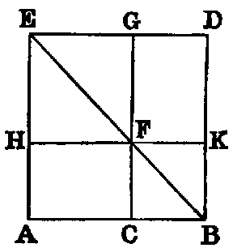
Dem.—On AB describe the square ABDE. Join BE. Through C draw CG parallel to AE, intersecting BE in F. Through F draw HK parallel to AB.
Now the square AD is equal to the three figures AK, FD, and GH: to each add the square CK, and we have the sum of the squares AD, CK equal to the sum of the three figures AK, CD, GH; but CD is equal to AK; therefore the sum of the squares AD, CK is equal to twice the figure AK, together with the figure GH. Now AK is the rectangle AB.BK; but BK is equal to BC; therefore AK is equal to the rectangle AB.BC, and AD is the square on AB; CK the square on CB; and GH is the square on HF, and therefore equal to the square on AC. Hence the sum of the squares on AB and BC is equal to twice the rectangle AB.BC, together with the square on AC.
Or thus: On AC describe the square ACDE. Produce the sides CD, DE, EA, and make each produced part equal to CB. Join BF, FG, GH, HB. Then the figure BFGH is a square [I. xlvi., Ex. 3], and it is equal to the square on AC, together with the four equal triangles HAB, BCF, FDG, GEH. Now [I. xlvii.], the figure BFGH is equal to the sum of the squares on AB, AH—that is, equal to the sum of the squares on AB, BC; and the sum of the four triangles is equal to twice the rectangle AB.BC, for each triangle is equal to half the rectangle AB.BC. Hence the sum of the squares on AB, BC is equal to twice the rectangle AB.BC, together with the square on AC.
| Or thus: | AC = AB − BC; | ||||||||||
| therefore | AC2 = AB2 − 2AB.BC | + BC2; | |||||||||
| therefore | AC2 + 2AB.BC = AB2 | + BC2. |
Comparison of iv. and vii.
By iv., square on sum = sum of squares + twice rectangle.
By vii., square on difference = sum of squares-twice rectangle.
Cors. from iv. and vii.
1. Square on the sum, the sum of the squares, and the square on the difference of any two lines, are in arithmetical progression.
2. Square on the sum + square on the difference of any two lines = twice the sum of the squares on the lines (Props. ix. and x.).
3. The square on the sum − the square on the difference of any two lines = four times the rectangle under lines (Prop. viii.).
PROP. VIII.–Theorem.
If a line (AB) be divided into two parts (at C), the square on the sum of the whole line (AB) and either segment (BC) is equal to four times the rectangle contained by the whole line (AB) and that segment, together with the square on the other segment (AC).
Dem.—Produce AB to D. Make BD equal to BC. On AD describe the square AEFD [I. xlvi.]. Join DE. Through C, B draw CH, BL parallel to AE [I. xxxi.], and through K, I draw MN, PO parallel to AD.
Since CO is the square on CD, and CK the square on CB, and CB is the half of CD, CO is equal to four times CK [iv., Cor. 1]. Again, since CG, GI are the sides of equal squares, they are equal [I. xlvi., Cor. 1]. Hence the parallelogram AG is equal to MI [I. xxxvi.]. In like manner IL is equal to JF; but MI is equal to IL [I. xliii.]. Therefore the four figures AG, MI, IL, JF are all equal; hence their sum is equal to four times AG; and the square CO has been proved to be equal to four times CK. Hence the gnomon AOH is equal to four times the rectangle AK—that is, equal to four times the rectangle AB.BC, since BC is equal to BK.
Again, the figure PH is the square on PI, and therefore equal to the square on AC. Hence the whole figure AF, that is, the square on AD, is equal to four times the rectangle AB.BC, together with the square on AC.
Or thus: Produce BA to D, and make AD = BC. On DB describe the square DBEF. Cut off BG, EI, FL each equal to BC. Through A and I draw lines parallel to DF, and through G and L, lines parallel to AB.
Now it is evident that the four rectangles. AG, GI, IL, LA are all equal; but AG is the rectangle AB.BG or AB.BC. Therefore the sum of the four rectangles is equal to 4AB.BC. Again, the figure NP is evidently equal to the square on AC. Hence the whole figure, which is the square on BD, or the square on the sum of AB and BC, is equal to 4AB.BC + AC2.
| Or thus: | AB + BC | = AC + 2BC; | |||||||||
| therefore | (AB + BC)2 | = AC2 + 4AC.CB + 4BC2 | |||||||||
| = AC2 + 4(AC + CB).CB | |||||||||||
| = AC2 + 4AB.BC. |
Direct sequence from v. or vi.
Since by v. or vi. the rectangle contained by any two lines is = the square on half their sum − the square on half their difference; therefore four times the rectangle contained by any two lines = the square on their sum − the square on their difference.
Direct sequence of viii. from iv. and vii.
By iv., the square on the sum = the sum of the squares + twice the rectangle.
By vii., the square on the difference = the sum of the squares − twice the rectangle. Therefore, by subtraction, the square on the sum − the square on the difference = four times the rectangle.
Exercises.
1. In the figure [I. xlvii.] if EF, GK be joined, prove EF2 − CO2 = (AB + BO)2.
2. Prove GK2 − EF2 = 3AB(AO − BO).
3.1 1Ex. 3 occurs in the solution of the problem of the inscription of a regular polygon of seventeen sides in a circle. See note C. Given the difference of two lines = R, and their rectangle = 4R2; find the lines.
PROP. IX.—Theorem.
If a line (AB) be bisected (at C) and divided into two unequal parts (at D), the sum of the squares on the unequal parts (AD, DB) is double the sum of the squares on half the line (AC), and on the segment (CD) between the points of section.
Dem.—Erect CE at right angles to AB, and make it equal to AC or CB. Join AE, EB. Draw DF parallel to CE, and FG parallel to CD. Join AF.
Because AC is equal to CE, and the angle ACE is right, the angle CEA is half a right angle. In like manner the angles CEB, CBE are half right angles; therefore the whole angle AEF is right. Again, because GF is parallel to CB, and CE intersects them, the angle EGF is equal to ECB; but ECB is right (const.); therefore EGF is right; and GEF has been proved to be half a right angle; therefore the angle GFE is half a right angle [I. xxxii.]. Therefore [I. vi.] GE is equal to GF. In like manner FD is equal to DB.
Again, since AC is equal to CE, AC2 is equal to CE2; but AE2 is equal to AC2 + CE2 [I. xlvii.]. Therefore AE2 is equal to 2AC2. In like manner EF2 is equal to 2GF2 or 2CD2. Therefore AE2 + EF2 is equal to 2AC2 + 2CD2; but AE2 + EF2 is equal to AF2 [I. xlvii.]. Therefore AF2 is equal to 2AC2 + 2CD2.
Again, since DF is equal to DB, DF2 is equal to DB2: to each add AD2, and we get AD2 + DF2 equal to AD2 + DB2; but AD2 + DF2 is equal to AF2; therefore AF2 is equal to AD2 + DB2; and we have proved AF2 equal to 2AC2 + 2CD2. Therefore AD2 + DB2 is equal to 2AC2 + 2CD2.
| Or thus: | AD = AC + CD; DB = AC − CD. | |||||||||
| Square and add, and we get | AD2 + DB2 = 2AC2 + 2CD2. |
Exercises.
1. The sum of the squares on the segments of a line of given length is a minimum when it is bisected.
2. Divide a given line internally, so that the sum of the squares on the parts may be equal to a given square, and state the limitation to its possibility.
3. If a line AB be bisected in C and divided unequally in D,
4. Twice the square on the line joining any point in the hypotenuse of a right-angled isosceles triangle to the vertex is equal to the sum of the squares on the segments of the hypotenuse.
5. If a line be divided into any number of parts, the continued product of all the parts is a maximum, and the sum of their squares is a minimum when all the parts are equal.
PROP. X.—Theorem.
If a line (AB) be bisected (at C) and divided externally (at D), the sum of the squares on the segments (AD, DB) made by the external point is equal to twice the square on half the line, and twice the square on the segment between the points of section.
Dem.—Erect CE at right angles to AB, and make it equal to AC or CB. Join AE, EB. Draw DF parallel to CE, and produce EB. Now since DF is parallel to EC, the angle BDF is = to BCE [I. xxix.], and [I. xv.] the angle DBF is = to EBC; but the sum of the angles BCE, EBC is less than two right angles [I. xvii.]; therefore the sum of the angles BDF, DBF is less than two right angles, and therefore [I., Axiom xii.] the lines EB, DF, if produced, will meet. Let them meet in F. Through F draw FG parallel to AB, and produce EC to meet it in G. Join AF.
Because AC is equal to CE, and the angle ACE is right, the angle CEA is half a right angle. In like manner the angles CEB, CBE are half right angles; therefore the whole angle AEF is right. Again, because GF is parallel to CB, and GE intersects them, the angle EGF is equal to ECB [I. xxix.]; but ECB is right (const.); therefore EGF is right, and GEF has been proved to be half a right angle; therefore [I. xxxii.] GFE is half a right angle, and therefore [I. vi.] GE is equal to GF. In like manner FD is equal to DB.
Again, since AC is equal to CE, AC2 is equal to CE2; but AE2 is equal to AC2 + CE2 [I. xlvii.]; therefore AE2 is equal to 2AC2. In like manner EF2 is equal to 2GF2 or 2CD2; therefore AE2 + EF2 is equal to 2AC2 + 2CD2; but AE2 + EF2 is equal to AF2 [I. xlvii.]. Therefore AF2 is equal to 2AC2 + 2CD2.
Again, since DF is equal to DB, DF2 is equal to DB2: to each add AD2, and we get AD2 + DF2 equal to AD2 + DB2; but AD2 + DF2 is equal to AF2; therefore AF2 is equal to AD2 + DB2; and AF2 has been proved equal to 2AC2 + 2CD2. Therefore AD2 + DB2 is equal to 2AC2 + 2CD2.
| Or thus: | AD = CD + AC, | |||||||||
| BD = CD − AC. |
Square and add, and we get AD2 + BD2 = 2CD2 + 2AC2.
The following enunciations include Propositions ix. and x.:—
1. The square on the sum of any two lines plus the square on their difference equal twice the sum of their squares.
2. The sum of the squares on any two lines it equal to twice the square on half the sum plus twice the square on half the difference of the lines.
3. If a line be cut into two unequal parts, and also into two equal parts, the sum of the squares on the two unequal parts exceeds the sum of the squares on the two equal parts by the sum of the squares of the two differences between the equal and unequal parts.
Exercises
.
1. Given the sum or the difference of any two lines, and the sum of their squares; find the lines.
2. The sum of the squares on two sides AC, CB of a triangle is equal to twice the square on half the base AB, and twice the square on the median which bisects AB.
3. If the base of a triangle be given both in magnitude and position, and the sum of the squares on the sides in magnitude, the locus of the vertex is a circle.
4. If in the △ABC a point D in the base BC be such that
prove that the middle point of AD is equally distant from B and C.
5. The sum of the squares on the sides of a parallelogram is equal to the sum of the squares on its diagonals.
PROP. XI.—Problem.
To divide a given finite line (AB) into two segments (in H), so that the rectangle (AB.BH) contained by the whole line and one segment may be equal to the square on the other segment.
Sol.—On AB describe the square ABDC [I. xlvi.]. Bisect AC in E. Join BE. Produce EA to F, and make EF equal to EB. On AF describe the square AFGH. H is the point required.
Dem.—Produce GH to K. Then because CA is bisected in E, and divided externally in F, the rectangle CF.AF, together with the square on EA, is equal to the square on EF [vi.]; but EF is equal to EB (const.); therefore the rectangle CF.AF, together with EA2, is equal to EB2—that is [I. xlvii.] equal to EA2 + AB2. Rejecting EA2, which is common, we get the rectangle CF.AF equal to AB2. Again, since AF is equal to FG, being the sides of a square, the rectangle CF.AF is equal to CF.FG—that is, to the figure CG; and AB2 is equal to the figure AD; therefore CG is equal to AD. Reject the part AK, which is common, and we get the figure FH equal to the figure HD; but HD is equal to the rectangle AB.BH, because BD is equal to AB, and FH is the square on AH. Therefore the rectangle AB.BH is equal to the square on AH.
Def.—A line divided as in this Proposition is said to be divided in “extreme and mean ratio.”
Cor. 1.—The line CF is divided in “extreme and mean ratio” at A.
Cor. 2.—If from the greater segment CA of CF we take a segment equal to AF, it is evident that CA will be divided into parts respectively equal to AH, HB. Hence, if a line be divided in extreme and mean ratio, the greater segment will be cut in the same manner by taking on it a part equal to the less; and the less will be similarly divided by taking on it a part equal to the difference, and so on, &c.
Cor. 3.—Let AB be divided in “extreme and mean ratio” in C, then it is evident (Cor. 2) that AC is greater than CB. Cut off CD = CB; then (Cor. 2) AC is cut in “extreme and mean ratio” at D, and CD is greater than AD. Next, cut off DE equal to AD, and in the same manner we have DE greater than EC, and so on. Now since CD is greater than AD, it is evident that CD is not a common measure of AC and CB, and therefore not a common measure of AB and AC. In like manner AD is not a common measure of AC and CD, and therefore not a common measure of AB and AC. Hence, no matter how far we proceed we cannot arrive at any remainder which will be a common measure of AB and AC. Hence, the parts of a line divided in “extreme and mean ratio” are incommensurable.
Exercises.
1. Cut a line externally in “extreme and mean ratio.”
2. The difference between the squares on the segments of a line divided in “extreme and mean ratio” is equal to their rectangle.
3. In a right-angled triangle, if the square on one side be equal to the rectangle contained by the hypotenuse and the other side, the hypotenuse is cut in “extreme and mean ratio” by the perpendicular on it from the right angle.
4. If AB be cut in “extreme and mean ratio” at C, prove that
| (1) | AB2 + BC2 = 3AC2. | ||
| (2) | (AB + BC)2 = 5AC2. |
5. The three lines joining the pairs of points G, B; F, D; A, K, in the construction of Proposition xi., are parallel.
6. If CH intersect BE in O, AO is perpendicular to CH.
7. If CH be produced, it meets BF at right angles.
8. ABC is a right-angled triangle having AB = 2AC: if AH be made equal to the difference between BC and AC, AB is divided in “extreme and mean ratio” at H.
PROP. XII.—Theorem.
In an obtuse-angled triangle (ABC), the square on the side (AB) subtending the obtuse angle exceeds the sum of the squares on the sides (BC, CA) containing the obtuse angle, by twice the rectangle contained by either of them (BC), and its continuation (CD) to meet a perpendicular (AD) on it from the opposite angle.
Dem.—Because BD is divided into two parts in C, we have
| BD2 = BC2 | + CD2 + 2BC.CD [iv.] | ||||||
| and | AD2 = AD2. |
Hence, adding, since [I. xlvii.] BD2 + AD2 = AB2, and CD2 + AD2 = CA2, we get
Therefore AB2 is greater than BC2 + CA2 by 2BC.CD.
The foregoing proof differs from Euclid’s only in the use of symbols. I have found by experience that pupils more readily understand it than any other method.
Or thus: By the First Book: Describe squares on the three sides. Draw AE, BF, CG perpendicular to the sides of the squares. Then it can be proved exactly as in the demonstration of [I. xlvii.], that the rectangle BG is equal to BE, AG to AF, and CE to CF. Hence the sum of the two squares on AC, CB is less than the square on AB by twice the rectangle CE; that is, by twice the rectangle BC.CD.
Cor. 1.—If perpendiculars from A and B to the opposite sides meet them in H and D, the rectangle AC.CH is equal to the rectangle BC.CD.
Exercises.
1. If the angle ACB of a triangle be equal to twice the angle of an equilateral triangle, AB2 = BC2 + CA2 + BC.CA.
2. ABCD is a quadrilateral whose opposite angles B and D are right, and AD, BC produced meet in E; prove AE.DE = BE.CE.
3. ABC is a right-angled triangle, and BD is a perpendicular on the hypotenuse AC; Prove AB.DC = BD.BC.
4. If a line AB be divided in C so that AC2 = 2CB2; prove that AB2 + BC2 = 2AB.AC.
5. If AB be the diameter of a semicircle, find a point C in AB such that, joining C to a fixed point D in the circumference, and erecting a perpendicular CE meeting the circumference in E, CE2 − CD2 may be equal to a given square.
6. If the square of a line CD, drawn from the angle C of an equilateral triangle ABC to a point D in the side AB produced, be equal to 2AB2; prove that AD is cut in “extreme and mean ratio” at B.
PROP. XIII.—Theorem.
In any triangle (ABC), the square on any side subtending an acute angle (C) is less than the sum of the squares on the sides containing that angle, by twice the rectangle (BC, CD) contained by either of them (BC) and the intercept (CD) between the acute angle and the foot of the perpendicular on it from the opposite angle.
Dem.—Because BC is divided into two segments in D,
![BC2 + CD2 = BD2 + 2BC.CD [vii.];](../Images/5581189698728318217_21076-t21x.png)
| and | AD2 = AD2. |
Hence, adding, since
| CD2 + AD2 = AC2 | [I. xlvii.], | ||||||||||
| and | BD2 + AD2 | = AB2, | |||||||||
| we get | BC2 + AC2 | = AB2 + 2BC.CD. |
Therefore AB2 is less than BC2 + AC2 by 2BC.CD.
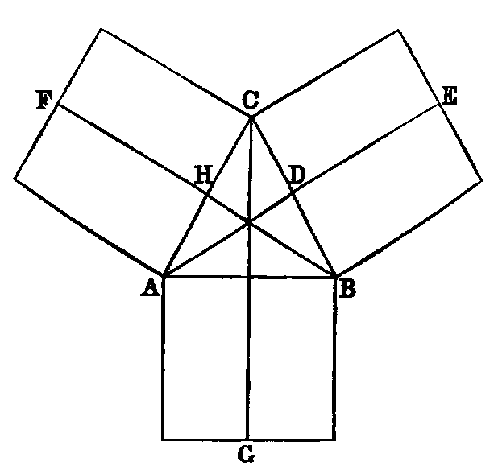
Or thus: Describe squares on the sides. Draw AE, BF, CG perpendicular to the sides; then, as in the demonstration of [I. xlvii.], the rectangle BG is equal to BE; AG to AF, and CE to CF. Hence the sum of the squares on AC, CB exceeds the square on AB by twice CE—that is, by 2BC.CD.
Observation.—By comparing the proofs of the pairs of Props. iv. and vii.; v. and vi.; ix. and x.; xii. and xiii., it will be seen that they are virtually identical. In order to render this identity more apparent, we have made some slight alterations in the usual proofs. The pairs of Propositions thus grouped are considered in Modern Geometry not as distinct, but each pair is regarded as one Proposition.
Exercises.
1. If the angle C of the △ ACB be equal to an angle of an equilateral △, AB2 = AC2 + BC2 − AC.BC.
2. The sum of the squares on the diagonals of a quadrilateral, together with four times the square on the line joining their middle points, is equal to the sum of the squares on its sides.
3. Find a point C in a given line AB produced, so that AC2 + BC2 = 2AC.BC.
PROP. XIV.—Problem.
To construct a square equal to a given rectilineal figure (X).
Sol.—Construct [I. xlv.] the rectangle AC equal to X. Then, if the adjacent sides AB, BC be equal, AC is a square, and the problem is solved; if not, produce AB to E, and make BE equal to BC; bisect AE in F; with F as centre and FE as radius, describe the semicircle AGE; produce CB to meet it in G. The square described on BG will be equal to X.
Dem.—Join FG. Then because AE is divided equally in F and unequally in B, the rectangle AB.BE, together with FB2 is equal to FE2 [v.], that is, to FG2; but FG2 is equal to FB2 + BG2 [I. xlvii.]. Therefore the rectangle AB.BE + FB2 is equal to FB2 + BG2. Reject FB2, which is common, and we have the rectangle AB.BE = BG2; but since BE is equal to BC, the rectangle AB.BE is equal to the figure AC. Therefore BG2 is equal to the figure AC, and therefore equal to the given rectilineal figure (X).
Cor.—The square on the perpendicular from any point in a semicircle on the diameter is equal to the rectangle contained by the segments of the diameter.
Exercises.
1. Given the difference of the squares on two lines and their rectangle; find the lines.
2. Divide a given line, so that the rectangle contained by another given line and one segment may be equal to the square on the other segment.
Questions for Examination on Book II.
1. What is the subject-matter of Book II.? Ans. Theory of rectangles.
2. What is a rectangle? A gnomon?
3. What is a square inch? A square foot? A square perch? A square mile? Ans. The square described on a line whose length is an inch, a foot, a perch, &c.
4. What is the difference between linear and superficial measurement? Ans. Linear measurement has but one dimension; superficial has two.
5. When is a line said to be divided internally? When externally?
6. How is the area of a rectangle found?
7. How is a line divided so that the rectangle contained by its segments may be a maximum?
8. How is the area of a parallelogram found?
9. What is the altitude of a parallelogram whose base is 65 metres and area 1430 square metres?
10. How is a line divided when the sum of the squares on its segments is a minimum?
11. The area of a rectangle is 108.60 square metres and its perimeter is 48.20 linear metres; find its dimensions.
12. What Proposition in Book II. expresses the distributive law of multiplication?
13. On what proposition is the rule for extracting the square root founded?
14. Compare I. xlvii. and II. xii. and xiii.
15. If the sides of a triangle be expressed by x2 + 1, x2 − 1, and 2x linear units, respectively; prove that it is right-angled.
16. How would you construct a square whose area would be exactly an acre? Give a solution by I. xlvii.
17. What is meant by incommensurable lines? Give an example from Book II.
18. Prove that a side and the diagonal of a square are incommensurable.
19. The diagonals of a lozenge are 16 and 30 metres respectively; find the length of a side.
20. The diagonal of a rectangle is 4.25 perches, and its area is 7.50 square perches; what are its dimensions?
21. The three sides of a triangle are 8, 11, 15; prove that it has an obtuse angle.
22. The sides of a triangle are 13, 14, 15; find the lengths of its medians; also the lengths of its perpendiculars, and prove that all its angles are acute.
23. If the sides of a triangle be expressed by m2 + n2, m2 − n2, and 2mn linear units, respectively; prove that it is right-angled.
24. If on each side of a square containing 5.29 square perches we measure from the corners respectively a distance of 1.5 linear perches; find the area of the square formed by joining the points thus found.
Exercises on Book II.
1. The squares on the diagonals of a quadrilateral are together double the sum of the squares on the lines joining the middle points of opposite sides.
2. If the medians of a triangle intersect in O, AB2 + BC2 + CA2 = 3(OA2 + OB2 + OC2).
3. Through a given point O draw three lines OA, OB, OC of given lengths, such that their extremities may be collinear, and that AB = BC.
4. If in any quadrilateral two opposite sides be bisected, the sum of the squares on the other two sides, together with the sum of the squares on the diagonals, is equal to the sum of the squares on the bisected sides, together with four times the square on the line joining the points of bisection.
5. If squares be described on the sides of any triangle, the sum of the squares on the lines joining the adjacent corners is equal to three times the sum of the squares on the sides of the triangle.
6. Divide a given line into two parts, so that the rectangle contained by the whole and one segment may be equal to any multiple of the square on the other segment.
7. If P be any point in the diameter AB of a semicircle, and CD any parallel chord, then
8. If A, B, C, D be four collinear points taken in order,
9. Three times the sum of the squares on the sides of any pentagon exceeds the sum of the squares on its diagonals, by four times the sum of the squares on the lines joining the middle points of the diagonals.
10. In any triangle, three times the sum of the squares on the sides is equal to four times the sum of the squares on the medians.
11. If perpendiculars be drawn from the angular points of a square to any line, the sum of the squares on the perpendiculars from one pair of opposite angles exceeds twice the rectangle of the perpendiculars from the other pair by the area of the square.
12. If the base AB of a triangle be divided in D, so that mAD = nBD, then
13. If the point D be taken in AB produced, so that mAD = nDB, then
14. Given the base of a triangle in magnitude and position, and the sum or the difference of m times the square on one side and n times the square on the other side, in magnitude, the locus of the vertex is a circle.
15. Any rectangle is equal to half the rectangle contained by the diagonals of squares described on its adjacent sides.
16. If A, B, C. &c., be any number of fixed points, and P a variable point, find the locus of P, if AP2 + BP2 + CP2+ &c., be given in magnitude.
17. If the area of a rectangle be given, its perimeter is a minimum when it is a square.
18. If a transversal cut in the points A, C, B three lines issuing from a point D, prove that
19. Upon the segments AC, CB of a line AB equilateral triangles are described: prove that if D, D′ be the centres of circles described about these triangles, 6DD′2 = AB2 + AC2 + CB2.
20. If a, b, p denote the sides of a right-angled triangle about the right angle, and the perpendicular from the right angle on the hypotenuse, 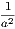 + = .
21. If, upon the greater segment AB of a line AC, divided in extreme and mean ratio, an equilateral triangle ABD be described, and CD joined, CD2 = 2AB2.
22. If a variable line, whose extremities rest on the circumferences of two given concentric circles, subtend a right angle at any fixed point, the locus of its middle point is a circle.
________________
DEFINITIONS.
i. Equal circles are those whose radii are equal.
This is a theorem, and not a definition. For if two circles have equal radii, they are evidently congruent figures, and therefore equal. From this way of proving this theorem Props. xxvi.–xxix. follow as immediate inferences.
ii. A chord of a circle is the line joining two points in its circumference.
If the chord be produced both ways, the whole line is called a secant, and each of the parts into which a secant divides the circumference is called an arc—the greater the major conjugate arc, and the lesser the minor conjugate arc.—Newcomb.
iii. A right line is said to touch a circle when it meets the circle, and, being produced both ways, does not cut it; the line is called a tangent to the circle, and the point where it touches it the point of contact.
In Modern Geometry a curve is considered as made up of an infinite number of points, which are placed in order along the curve, and then the secant through two consecutive points is a tangent. Euclid’s definition for a tangent is quite inadequate for any curve but the circle, and those derived from it by projection (the conic sections); and even for these the modern definition is better.
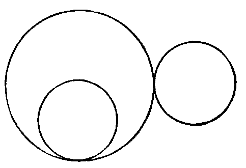
iv. Circles are said to touch one another when they meet, but do not intersect. There are two species of contact:—
1. When each circle is external to the other.
2. When one is inside the other.
The following is the modern definition of curve-contact:— When two curves have two, three, four, &c., consecutive points common, they have contact of the first, second, third, &c., orders.
v. A segment of a circle is a figure bounded by a chord and one of the arcs into which it divides the circumference.
vi. Chords are said to be equally distant from the centre when the perpendiculars drawn to them from the centre are equal.
vii. The angle contained by two lines, drawn from any point in the circumference of a segment to the extremities of its chord, is called an angle in the segment.
viii. The angle of a segment is the angle contained between its chord and the tangent at either extremity.
A theorem is tacitly assumed in this Definition, namely, that the angles which the chord makes with the tangent at its extremities are equal. We shall prove this further on.
ix. An angle in a segment is said to stand on its conjugate arc.
x. Similar segments of circles are those that contain equal angles.
xi. A sector of a circle is formed of two radii and the arc included between them.
To a pair of radii may belong either of the two conjugate arcs into which their ends divide the circle.—Newcomb.
xii. Concentric circles are those that have the same centre.
xiii. Points which lie on the circumference of a circle are said to be concyclic.
xiv. A cyclic quadrilateral is one which is inscribed in a circle.
xv. It will be proper to give here an explanation of the extended meaning of the word angle in Modern Geometry. This extension is necessary in Trigonometry, in Mechanics—in fact, in every application of Geometry, and has been partly given in I. Def. ix.
Thus, if a line OA revolve about the point O, as in figures 1, 2, 3, 4, until it comes into the position OB, the amount of the rotation from OA to OB is called an angle. From the diagrams we see that in fig. 1 it is less than two right angles; in fig. 2 it is equal to two right angles; in fig. 3 greater than two right angles, but less than four; and in fig. 4 it is greater than four right angles. The arrow-heads denote the direction or sense, as it is technically termed, in which the line OA turns. It is usual to call the direction indicated in the above figures positive, and the opposite negative. A line such as OA, which turns about a fixed point, is called a ray, and then we have the following definition:—
xvi. A ray which turns in the sense opposite to the hands of a watch describes a positive angle, and one which turns in the same direction as the hands, a negative angle.
PROP. I.—Problem.
To find the centre of a given circle (ADB).
Sol.—Take any two points A, B in the circumference. Join AB. Bisect it in C. Erect CD at right angles to AB. Produce DC to meet the circle again in E. Bisect DE in F. Then F is the centre.
Dem.—If possible, let any other point G be the centre. Join GA, GC, GB. Then in the triangles ACG, BCG we have AC equal to CB (const.), CG common, and the base GA equal to GB, because they are drawn from G, which is, by hypothesis, the centre, to the circumference. Hence [I. viii.] the angle ACG is equal to the adjacent angle BCG, and therefore [I. Def. xiii.] each is a right angle; but the angle ACD is right (const.); therefore ACD is equal to ACG—a part equal to the whole—which is absurd. Hence no point can be the centre which is not in the line DE. Therefore F, the middle point of DE, must be the centre.
The foregoing proof may be abridged as follows:—
Because ED bisects AB at right angles, every point equally distant from, the points A, B must lie in ED [I. x. Ex. 2]; but the centre is equally distant from A and B; hence the centre must be in ED; and since it must be equally distant from E and D, it must be the middle point of DE.
Cor. 1.—The line which bisects any chord of a circle perpendicularly passes through the centre of the circle.
Cor. 2.—The locus of the centres of the circles which pass through two fixed points is the line bisecting at right angles that connecting the two points.
Cor. 3.—If A, B, C be three points in the circumference of a circle, the lines bisecting perpendicularly the chords AB, BC intersect in the centre.
PROP. II.—Theorem.
If any two points (A, B) be taken in the circumference of a circle—1. The segment (AB) of the indefinite line through these points which lies between them falls within the circle. 2. The remaining parts of the line are without the circle.
Dem.—1. Let C be the centre. Take any point D in AB. Join CA,CD,CB. Now the angle ADC is [I. xvi.] greater than ABC; but the angle ABC is equal to CAB [I. v.], because the triangle CAB is isosceles; therefore the angle ADC is greater than CAD. Hence AC is greater than CD [I. xix.]; therefore CD is less than the radius of the circle, consequently the point D must be within the circle (note on I. Def. xxiii.).
In the same manner every other point between A and B lies within the circle.
2. Take any point E in AB produced either way. Join CE. Then the angle ABC is greater than AEC [I. xvi.]; therefore CAB is greater than AEC. Hence CE is greater than CA, and the point E is without the circle.
We have added the second part of this Proposition. The indirect proof given of the first part in several editions of Euclid is very inelegant; it is one of those absurd things which give many students a dislike to Geometry.
Cor. 1.—Three collinear points cannot be concyclic.
Cor. 2.—A line cannot meet a circle in more than two points.
Cor. 3.—The circumference of a circle is everywhere concave towards the centre.
PROP. III.–Theorem.
If a line (AB) passing through the centre of a circle bisect a chord (CD), which does not pass through the centre, it cuts it at right angles. 2. If it cuts it at right angles, it bisects it.
Dem.—1. Let O be the centre of the circle. Join OC, OD. Then the triangles CEO, DEO have CE equal to ED (hyp.), EO common, and OC equal to OD, because they are radii of the circle; hence [I. viii.] the angle CEO is equal to DEO, and they are adjacent angles. Therefore [I. Def. xiii.] each is a right angle. Hence AB cuts CD at right angles.
2. The same construction being made: because OC is equal to OD, the angle OCD is equal to ODC [I. v.], and CEO is equal to DEO (hyp.), because each is right. Therefore the triangles CEO, DEO have two angles in one respectively equal to two angles in the other, and the side EO common. Hence [I. xxvi.] the side CE is equal to ED. Therefore CD is bisected in E.
2. May be proved as follows:—
| OC2 = OE2+ | EC2 [I. xlvii.], and OD2 = OE2 + ED2; | |||||||||
| but | OC2 = | OD2; ∴ OE2 + EC2 = OE2 + ED2. | ||||||||
| Hence | EC2 = ED2, and EC = ED. |
Observation.—The three theorems, namely, Cor. 1., Prop. i., and Parts 1, 2, of Prop. iii., are so related, that any one being proved directly, the other two follow by the Rule of Identity.
Cor. 1.—The line which bisects perpendicularly one of two parallel chords of a circle bisects the other perpendicularly.
Cor. 2.—The locus of the middle points of a system of parallel chords of a circle is the diameter of the circle perpendicular to them all.
Cor. 3.—If a line intersect two concentric circles, its intercepts between the circles are equal.
Cor. 4.—The line joining the centres of two intersecting circles bisects their common chord perpendicularly.
Exercises.
1. If a chord of a circle subtend a right angle at a given point, the locus of its middle point is a circle.
2. Every circle passing through a given point, and having its centre on a given line, passes through another given point.
3. Draw a chord in a given circle which shall subtend a right angle at a given point, and be parallel to a given line.
PROP. IV.—Theorem.
Two chords of a circle (AB, CD) which are not both diameters cannot bisect each other, though either may bisect the other.
Dem.—Let O be the centre. Let AB, CD intersect in E; then since AB, CD are not both diameters, join OE. If possible let AE be equal to EB, and CE equal to ED. Now, since OE passing through the centre bisects AB, which does not pass through the centre, it is at right angles to it; therefore the angle AEO is right. In like manner the angle CEO is right. Hence AEO is equal to CEO—that is, a part equal to the whole—which is absurd. Therefore AB and CD do not bisect each other.
Cor.—If two chords of a circle bisect each other, they are both diameters.
PROP. V.—Theorem.
If two circles (ABC, ABD) cut one another in any point (A), they are not concentric.
Dem.—If possible let them have a common centre at O. Join OA, and draw any other line OD, cutting the circles in C and D respectively. Then because O is the centre of the circle ABC, OA is equal to OC. Again, because O is the centre of the circle ABD, OA is equal to OD. Hence OC is equal to OD—a part equal to the whole—which is absurd. Therefore the circles are not concentric.
Exercises.
1. If two non-concentric circles intersect in one point, they must intersect in another point. For, let O, O′ be the centres, A the point of intersection; from A let fall the ⊥ AC on the line OO′. Produce AC to B, making BC = CA: then B is another point of intersection.
2. Two circles cannot have three points in common without wholly coinciding.
PROP. VI.—Theorem.
If one circle (ABC) touch another circle (ADE) internally in any point (A), it is not concentric with it.
Dem.—If possible let the circles be concentric, and let O be the centre of each. Join OA, and draw any other line OD, cutting the circles in the points B, D respectively. Then because O is the centre of each circle (hyp.), OB and OD are each equal to OA; therefore OB is equal to OD, which is impossible. Hence the circles cannot have the same centre.
PROP. VII.—Theorem.
If from any point (P) within a circle, which is not the centre, lines (PA, PB, PC, &c.), one of which passes through the centre, be drawn to the circumference, then—1. The greatest is the line (PA) which passes through the centre. 2. The production (PE) of this in the opposite direction is the least. 3. Of the others, that which is nearest to the line through the centre is greater than every one more remote. 4. Any two lines making equal angles with the diameter on opposite sides are equal. 5. More than two equal right lines cannot be drawn from the given point (P) to the circumference.
Dem.—1. Let O be the centre. Join OB. Now since O is the centre, OA is equal to OB: to each add OP, and we have AP equal to the sum of OB, OP; but the sum of OB, OP is greater than PB [I. xx.]. Therefore PA is greater than PB.
2. Join OD. Then [I. xx.] the sum of OP, PD is greater than OD; but OD is equal to OE [I. Def. xxx.]. Therefore the sum of OP, PD is greater than OE. Reject OP, which is common, and we have PD greater than PE.
3. Join OC; then two triangles POB, POC have the side OB equal to OC [I. Def. xxx.], and OP common; but the angle POB is greater than POC; therefore [I. xxiv.] the base PB is greater than PC. In like manner PC is greater than PD.
4. Make at the centre O the angle POF equal to POD. Join PF. Then the triangles POD, POF have the two sides OP, OD in one respectively equal to the sides OP, OF in the other, and the angle POD equal to the angle POF; hence PD is equal to PF [I. iv.], and the angle OPD equal to the angle OPF. Therefore PD and PF make equal angles with the diameter.
5. A third line cannot be drawn from P equal to either of the equal lines PD, PF. If possible let PG be equal to PD, then PG is equal to PF—that is, the line which is nearest to the one through the centre is equal to the one which is more remote, which is impossible. Hence three equal lines cannot be drawn from P to the circumference.
Cor. 1.—If two equal lines PD, PF be drawn from a point P to the circumference of a circle, the diameter through P bisects the angle DPF formed by these lines.
Cor. 2.—If P be the common centre of circles whose radii are PA, PB, PC, &c., then—1. The circle whose radius is the maximum line (PA) lies outside the circle ADE, and touches it in A [Def. iv.]. 2. The circle whose radius is the minimum line (PE) lies inside the circle ADE, and touches it in E. 3. A circle having any of the remaining lines (PD) as radius cuts ADE in two points (D, F).
Observation.—Proposition vii. affords a good illustration of the following important definition (see Sequel to Euclid, p. 13):—If a geometrical magnitude varies its position continuously according to any law, and if it retains the same value throughout, it is said to be a constant, such as the radius of a circle revolving round the centre; but if it goes on increasing for some time, and then begins to decrease, it is said to be a maximum at the end of the increase. Thus, in the foregoing figure, PA, supposed to revolve round P and meet the circle, is a maximum. Again, if it decreases for some time, and then begins to increase, it is a minimum at the commencement of the increase. Thus PE, supposed as before to revolve round P and meet the circle, is a minimum. Proposition viii. will give other illustrations.
PROP. VIII.—Theorem.
If from any point (P) outside a circle, lines (PA, PB, PC, &c.) be drawn to the concave circumference, then—1. The maximum is that which passes through the centre. 2. Of the others, that which is nearer to the one through the centre is greater than the one more remote. Again, if lines be drawn to the convex circumference—3. The minimum is that whose production passes through the centre. 4. Of the others, that which is nearer to the minimum is less than one more remote. 5. From the given point (P) there can be drawn two equal lines to the concave or the convex circumference, both of which make equal angles with the line passing through the centre. 6. More than two equal lines cannot be drawn from the given point (P) to either circumference.
Dem.—1. Let O be the centre. Join OB. Now since O is the centre, OA is equal to OB: to each add OP, and we have AP equal to the sum of OB, OP; but the sum of OB, OP is greater than BP [I. xx.]. Therefore AP is greater than BP.
2. Join OC, OD. The two triangles BOP, COP have the side OB equal to OC, and OP common, and the angle BOP greater than COP; therefore the base BP is greater than CP [I. xxiv.]. In like manner CP is greater than DP, &c.
3. Join OF. Now in the triangle OFP the sum of the sides OF, FP is greater than OP [I. xx.]; but OF is equal to OE [I. Def. xxx.]. Reject them, and FP will remain greater than EP.
4. Join OG, OH. The two triangles GOP, FOP have two sides GO, OP in one respectively equal to two sides FO, OP in the other; but the angle GOP is greater than FOP; therefore [I. xxiv.] the base GP is greater than FP. In like manner HP is greater than GP.
5. Make the angle POI equal POF [I. xxiii.]. Join IP. Now the triangles IOP, FOP have two sides IO, OP in one respectively equal to two sides FO, OP in the other, and the angle IOP equal to FOP (const.); therefore [I. iv.] IP is equal to FP.
6. A third line cannot be drawn from P equal to either of the lines IP, FP. For if possible let PK be equal to PF; then PK is equal to PI—that is, one which is nearer to the minimum equal to one more remote—which is impossible.
Cor. 1.—If PI be produced to meet the circle again in L, PL is equal to PB.
Cor. 2.—If two equal lines be drawn from P to either the convex or concave circumference, the diameter through P bisects the angle between them, and the parts of them intercepted by the circle are equal.
Cor. 3.—If P be the common centre of circles whose radii are lines drawn from P to the circumference of HDE, then—1. The circle whose radius is the minimum line (PE) has contact of the first kind with ADE [Def. iv.]. 2. The circle whose radius is the maximum line (PA) has contact of the second kind. 3. A circle having any of the remaining lines (PF) as radius intersects HDE in two points (F, I).
PROP. IX.—Theorem.
A point (P) within a circle (ABC), from which more than two equal lines (PA, PB, PC, &c.) can be drawn to the circumference, is the centre.
Dem.—If P be not the centre, let O be the centre. Join OP, and produce it to meet the circle in D and E; then DE is the diameter, and P is a point in it which is not the centre: therefore [vii.] only two equal lines can be drawn from P to the circumference; but three equal lines are drawn (hyp.), which is absurd. Hence P must be the centre.
Or thus: Since the lines AP, BP are equal, the line bisecting the angle APB [vii. Cor. 1] must pass through the centre: in like manner the line bisecting the angle BPC must pass through the centre. Hence the point of intersection of these bisectors, that is, the point P, must be the centre.
PROP. X.—Theorem.
If two circles have more than two points common, they must coincide.
Dem.—Let X be one of the circles; and if possible let another circle Y have three points, A, B, C, in common with X, without coinciding with it. Find P, the centre of X. Join PA, PB, PC. Then since P is the centre of X, the three lines PA, PB, PC are equal to one another.
Again, since Y is a circle and P a point, from which three equal lines PA, PB, PC can be drawn to its circumference, P must be the centre of Y . Hence X and Y are concentric, which [v.] is impossible.
Cor.—Two circles not coinciding cannot have more than two points common. Compare I., Axiom x., that two right lines not coinciding cannot have more than one point common.
PROP. XI.—Theorem.
If one circle (CPD) touch another circle (APB) internally at any point P, the line joining the centres must pass through that point.
Dem.—Let O be the centre of APB. Join OP. I say the centre of the smaller circle is in the line OP. If not, let it be in any other position such as E. Join OE, EP, and produce OE through E to meet the circles in the points C, A. Now since E is a point in the diameter of the larger circle between the centre and A, EA is less than EP [vii. 2]; but EP is equal to EC (hyp.), being radii of the smaller circle. Hence EA is less than EC; which is impossible; consequently the centre of the smaller circle must be in the line OP. Let it be H; then we see that the line joining the centres passes through the point P.
Or thus: Since EP is a line drawn from a point within the circle APB to the circumference, but not forming part of the diameter through E, the circle whose centre is E and radius EP cuts [vii., Cor. 2] APB in P, but it touches it (hyp.) also in P, which is impossible. Hence the centre of the smaller circle CPD must be in the line OP.
PROP. XII.—Theorem.
If two circles (PCF, PDE) have external contact at any point P, the line joining their centres must pass through that point.
Dem.—Let A be the centre of one of the circles. Join AP, and produce it to meet the second circle again in E. I say the centre of the second circle is in the line PE. If not, let it be elsewhere, as at B. Join AB, intersecting the circles in C and D, and join BP. Now since A is the centre of the circle PCF, AP is equal to AC; and since B is the centre of the circle PDE, BP is equal to BD. Hence the sum of the lines AP, BP is equal to the sum of the lines AC, DB; but AB is greater than the sum of AC and DB; therefore AB is greater than the sum of AP, PB—that is, one side of a triangle greater than the sum of the other two–which [I. xx.] is impossible. Hence the centre of the second circle must be in the line PE. Let it be G, and we see that the line through the centres passes through the point P.
Or thus: Since BP is a line drawn from a point without the circle PCF to its circumference, and when produced does not pass through the centre, the circle whose centre is B and radius BP must cut the circle PCF in P [viii., Cor. 3]; but it touches it (hyp.) also in P, which is impossible. Hence the centre of the second circle must be in the line PE.
Observation.—Propositions xi, xii., may both be included in one enunciation as follows:—“If two circles touch each other at any point, the centres and that point are collinear.” And this latter Proposition is a limiting case of the theorem given in Proposition iii., Cor. 4, that “The line joining the centres of two intersecting circles bisects the common chord perpendicularly.”

Suppose the circle whose centre is O and one of the points of intersection A to remain fixed, while the second circle turns round that point in such a manner that the second point of intersection B becomes ultimately consecutive to A; then, since the line OO′ always bisects AB, we see that when B ultimately becomes consecutive to A, the line OO′ passes through A. In consequence of the motion, the common chord will become in the limit a tangent to each circle, as in the second diagram.—Comberousse, Géométrie Plane, page 57.
Cor. 1.—If two circles touch each other, their point of contact is the union of two points of intersection. Hence a contact counts for two intersections.
Cor. 2.—If two circles touch each other at any point, they cannot have any other common point. For, since two circles cannot have more than two points common [x.], and that the point of contact is equivalent to two common points, circles that touch cannot have any other point common. The following is a formal proof of this Proposition:—Let O, O′ be the centres of the two circles, A the point of contact, and let O′ lie between O and A; take any other point B in the circumference of O. Join O′B; then [vii.] O′B is greater than O′A; therefore the point C is outside the circumference of the smaller circle. Hence B cannot be common to both circles. In like manner, they cannot have any other common point but A.
PROP. XIII.—Theorem.
Two circles cannot have double contact, that it, cannot touch each other in two points.
Dem.—1. If possible let two circles touch each other at two points A and B. Now since the two circles touch each other in A, the line joining their centres passes through A [xi.]. In like manner, it passes through B. Hence the centres and the points A, B are in one right line; therefore AB is a diameter of each circle. Hence, if AB be bisected in E, E must be the centre of each circle—that is, the circles are concentric—which [v.] is impossible.
2. If two circles touched each other externally in two distinct points, then [xii.] the line joining the centres should pass through each point, which is impossible.
Or thus: Draw a line bisecting AB at right angles. Then this line [i., Cor. 1] must pass through the centre of each circle, and therefore [xi. xii.] must pass through each point of contact, which is impossible. Hence two circles cannot have double contact.
This Proposition is an immediate inference from the theorem [xii., Cor. 1], that a point of contact counts for two intersections, for then two contacts would be equivalent to four intersections; but there cannot be more than two intersections [x.]. It also follows from Prop. xii., Cor. 2, that if two circles touch each other in a point A, they cannot have any other point common; hence they cannot touch again in B.
Exercises.
1. If a variable circle touch two fixed circles externally, the difference of the distances of its centre from the centres of the fixed circles is equal to the difference or the sum of their radii, according as the contacts are of the same or of opposite species (Def. iv.).
2. If a variable circle be touched by one of two fixed circles internally, and touch the other fixed circle either externally or internally, the sum of the distances of its centre from the centres of the fixed circles is equal to the sum or the difference of their radii, according as the contact with the second circle is of the first or second kind.
3. If through the point of contact of two touching circles any secant be drawn cutting the circles again in two points, the radii drawn to these points are parallel.
4. If two diameters of two touching circles be parallel, the lines from the point of contact to the extremities of one diameter pass through the extremities of the other.
PROP. XIV.—Theorem.
In equal circles—1. equal chords (AB, CD) are equally distant from the centre. 2. chords which are equally distant from the centre are equal.
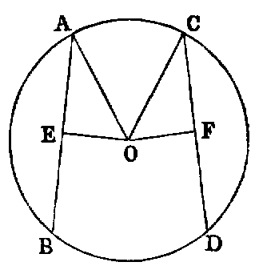
Dem.—1. Let O be the centre. Draw the perpendiculars OE, OF. Join AO, CO. Then because AB is a chord in a circle, and OE is drawn from the centre cutting it at right angles, it bisects it [iii.]; therefore AE is the half of AB. In like manner, CF is the half of CD; but AB is equal to CD (hyp.). Therefore AE is equal to CF [I., Axiom vii.]. And because E is a right angle, AO2 is equal to AE2 + EO2. In like manner, CO2 is equal to CF2 + FO2; but AO2 is equal to CO2. Therefore AE2 + EO2 is equal to CF2 + FO2; and AE2 has been proved equal to CF2. Hence EO2 is equal to FO2; therefore EO is equal to FO. Hence AB, CD are (Def. vi.) equally distant from the centre.
2. Let EO be equal to FO, it is required to prove AB equal to CD. The same construction being made, we have, as before, AE2 + EO2 equal to CF2 + FO2; but EO2 is equal to FO2 (hyp.). Hence AE2 is equal to CF2, and AE is equal to CF; but AB is double of AE, and CD double of CF. Therefore AB is equal to CD.
Exercise.
If a chord of given length slide round a fixed circle—1. the locus of its middle point is a circle; 2. the locus of any point fixed in the chord is a circle.
PROP. XV.—Theorem.
The diameter (AB) is the greatest chord in a circle; and of the others, the chord (CD) which is nearer to the centre is greater than (EF) one more remote, and the greater is nearer to the centre than the less.
Dem.—1. Join OC, OD, OE, and draw the perpendiculars OG, OH; then because O is the centre, OA is equal to OC [I., Def. xxxii.], and OB is equal to OD. Hence AB is equal to the sum of OC and OD; but the sum of OC, OD is greater than CD [I. xx.]. Therefore AB is greater than CD.
2. Because the chord CD is nearer to the centre than EF, OG is less than OH; and since the triangles OGC, OHE are right-angled, we have OC2 = OG2 + GC2, and OE2 = OH2 + HE2; therefore OG2 + GC2 = OH2 + HE2; but OG2 is less than OH2; therefore GC2 is greater than HE2, and GC is greater than HE, but CD and EF are the doubles of GC and HE. Hence CD is greater than EF.
3. Let CD be greater than EF, it is required to prove that OG is less than OH.
As before, we have OG2 + GC2 equal to OH2 + HE2; but CG2 is greater than EH2; therefore OG2 is less than OH2. Hence OG is less than OH.
Exercises.
1. The shortest chord which can be drawn through a given point within a circle is the perpendicular to the diameter which passes through that point.
2. Through a given point, within or without a given circle, draw a chord of length equal to that of a given chord.
3. Through one of the points of intersection of two circles draw a secant—1. the sum of whose segments intercepted by the circles shall be a maximum; 2. which shall be of any length less than that of the maximum.
4. Three circles touch each other externally at A, B, C; the chords AB, AC of two of them are produced to meet the third again in the points D and E; prove that DE is a diameter of the third circle, and parallel to the line joining the centres of the others.
PROP. XVI.—Theorem.
1. The perpendicular (BI) to the diameter (AB) of a circle at its extremity (B) touches the circle at that point. 2. Any other line (BH) through the same point cuts the circle.
Dem.—1. Take any point I, and join it to the centre C. Then because the angle CBI is a right angle, CI2 is equal to CB2 + BI2 [I. xlvii.]; therefore CI2 is greater than CB2. Hence CI is greater than CB, and the point I [note on I., Def. xxxii.] is without the circle. In like manner, every other point in BI, except B, is without the circle. Hence, since BI meets the circle at B, but does not cut it, it must touch it.
2. To prove that BH, which is not perpendicular to AB, cuts the circle. Draw CG perpendicular to HB. Now BC2 is equal to CG2 + GB2. Therefore BC2 is greater than CG2, and BC is greater than CG. Hence [note on I., Def. xxxii.] the point G must be within the circle, and consequently the line BG produced must meet the circle again, and must therefore cut it.
This Proposition may be proved as follows:
At every point on a circle the tangent is perpendicular to the radius.
Let P and Q be two consecutive points on the circumference. Join CP, CQ, PQ; produce PQ both ways. Now since P and Q are consecutive points, PQ is a tangent (Def. iii.). Again, the sum of the three angles of the triangle CPQ is equal to two right angles; but the angle C is infinitely small, and the others are equal. Hence each of them is a right angle. Therefore the tangent is perpendicular to the diameter.
Or thus: A tangent is a limiting position of a secant, namely, when the secant moves out until the two points of intersection with the circle become consecutive; but the line through the centre which bisects the part of the secant within the circle [iii.] is perpendicular to it. Hence, in the limit the tangent is perpendicular to the line from the centre to the point of contact.
Or again: The angle CPR is always equal to CQS; hence, when P and Q come together each is a right angle, and the tangent is perpendicular to the radius.
Exercises.
1. If two circles be concentric, all chords of the greater which touch the lesser are equal.
2. Draw a parallel to a given line to touch a given circle.
3. Draw a perpendicular to a given line to touch a given circle.
4. Describe a circle having its centre at a given point—1. and touching a given line; 2. and touching a given circle. How many solutions of this case?
5. Describe a circle of given radius that shall touch two given lines. How many solutions?
6. Find the locus of the centres of a system of circles touching two given lines.
7. Describe a circle of given radius that shall touch a given circle and a given line, or that shall touch two given circles.
PROP. XVII.—Problem.
From a given point (P) without a given circle (BCD) to draw a tangent to the circle.
Sol.—Let O (fig. 1) be the centre of the given circle. Join OP, cutting the circumference in C. With O as centre, and OP as radius, describe the circle APE. Erect CA at right angles to OP. Join OA, intersecting the circle BCD in B. Join BP; it will be the tangent required.
Dem.—Since O is the centre of the two circles, we have OA equal to OP, and OC equal to OB. Hence the two triangles AOC, POB have the sides OA, OC in one respectively equal to the sides OP, OB in the other, and the contained angle common to both. Hence [I. iv.] the angle OCA is equal to OBP; but OCA is a right angle (const.); therefore OBP is a right angle, and [xvi.] PB touches the circle at B.
Cor.—If AC (fig. 2) be produced to E, OE joined, cutting the circle BCD in D, and the line DP drawn, DP will be another tangent from P.
Exercises.
1. The two tangents PB, PD (fig. 2) are equal to one another, because the square of each is equal to the square of OP minus the square of the radius.
2. If two circles be concentric, all tangents to the inner from points on the outer are equal.
3. If a quadrilateral be circumscribed to a circle, the sum of one pair of opposite sides is equal to the sum of the other pair.
4. If a parallelogram be circumscribed to a circle it must be a lozenge, and its diagonals intersect in the centre.
5. If BD be joined, intersecting OP in F, OP is perpendicular to BD.
6. The locus of the intersection of two equal tangents to two circles is a right line (called the radical axis of the two circles).
7. Find a point such that tangents from it to three given circles shall be equal. (This point is called the radical centre of the three circles.)
8. The rectangle OF.OP is equal to the square of the radius.
Def. Two points, such as F and P, the rectangle of whose distances OF, OP from the centre is equal to the square of the radius, are called inverse points with respect to the circle.
9. The intercept made on a variable tangent by two fixed tangents subtends a constant angle at the centre.
10. Draw a common tangent to two circles. Hence, show how to draw a line cutting two circles, so that the intercepted chords shall be of given lengths.
PROP. XVIII.—Theorem
If a line (CD) touch a circle, the line (OC) from the centre to the point of contact is perpendicular to it.
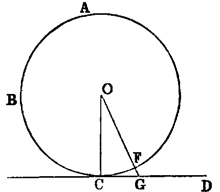
Dem.—If not, suppose another line OG drawn from the centre to be perpendicular to CD. Let OG cut the circle in F. Then because the angle OGC is right (hyp.) the angle OCG [I. xvii.] must be acute. Therefore [I. xix.] OC is greater than OG; but OC is equal to OF [I. Def. xxxii.]; therefore OF is greater than OG—that is, a part greater than the whole, which is impossible. Hence OC must be perpendicular to CD.
Or thus: Since the perpendicular must be the shortest line from O to CD, and OC is evidently the shortest line; therefore OC must be perpendicular to CD.
PROP. XIX.—Theorem.
If a line (AB) be a tangent to a circle, the line (AC) drawn at right angles to it from the point of contact passes through the centre.
If the centre be not in AC, let O be the centre. Join AO. Then because AB touches the circle, and OA is drawn from the centre to the point of contact, OA is at right angles to AB [xviii.]; therefore the angle OAB is right, and the angle CAB is right (hyp.); therefore OAB is equal to CAB—a part equal to the whole, which is impossible. Hence the centre must be in the line AC.
Cor.—If a number of circles touch the same line at the same point, the locus of their centres is the perpendicular to the line at the point.
Observation.—Propositions xvi., xviii., xix., are so related that any two can be inferred from the third by the “Rule of Identity.” Hence it would, in strict logic, be sufficient to prove any one of the three, and the others would follow. Again, these three theorems are limiting cases of Proposition i., Cor. 1., and Parts 1, 2, of Proposition iii., namely, when the points in which the chord cuts the circle become consecutive.
PROP. XX.—Theorem.
The angle (AOB) at the centre (O) of a circle is double the angle (ACB) at the circumference standing on the same arc.
Dem.—Join CO, and produce it to E. Then because OA is equal to OC, the angle ACO is equal to OAC; but the angle AOE is equal to the sum of the two angles OAC, ACO. Hence the angle AOE is double the angle ACO. In like manner the angle EOB is double the angle OCB. Hence (by adding in figs. (α), (β), and subtracting in (γ)), the angle AOB is double of the angle ACB.
Cor.—If AOB be a straight line, ACB will be a right angle—that is, the angle in a semicircle is a right angle (compare xxxi.).
PROP. XXI.—Theorem.
The angles (ACB, ADB) in the same segment of a circle are equal.

Dem.—Let O be the centre. Join OA, OB. Then the angle AOB is double of the angle ACB [xx.], and also double of the angle ADB. Therefore the angle ACB is equal to the angle ADB.
The following is the proof of the second part—that is, when the arc AB is not greater than a semicircle, without using angles greater than two right angles:—
Let O be the centre. Join CO, and produce it to meet the circle again in E. Join DE. Now since O is the centre, the segment ACE is greater than a semicircle; hence, by the first case, fig. (α), the angle ACE is equal to ADE. In like manner the angle ECB is equal to EDB. Hence the whole angle ACB is equal to the whole angle ADB.
Cor. 1.—If two triangles ACB, ADB on the same base AB, and on the same side of it, have equal vertical angles, the four points A, C, D, B are concyclic.
Cor. 2.—If A, B be two fixed points, and if C varies its position in such a way that the angle ACB retains the same value throughout, the locus of C is a circle.
In other words—Given the base of a triangle and the vertical angle, the locus of the vertex is a circle.
Exercises.
1. Given the base of a triangle and the vertical angle, find the locus—
(1) of the intersection of its perpendiculars;
(2) of the intersection of the internal bisectors of its base angles;
(3) of the intersection of the external bisectors of the base angles;
(4) of the intersection of the external bisector of one base angle and the internal bisector of the other.
2. If the sum of the squares of two lines be given, their sum is a maximum when the lines are equal.
3. Of all triangles having the same base and vertical angle, the sum of the sides of an isosceles triangle is a maximum.
4. Of all triangles inscribed in a circle, the equilateral triangle has the maximum perimeter.
5. Of all concyclic figures having a given number of sides, the area is a maximum when the sides are equal.
PROP. XXII.—Theorem.
The sum of the opposite angles of a quadrilateral (ABCD) inscribed in a circle is two right angles.
Dem.—Join AC, BD. The angle ABD is equal to ACD, being in the same segment ABCD [xxi.]; and the angle DBC is equal to DAC, because they are in the same segment DABC. Hence the whole angle ABC is equal to the sum of the two angles ACD, DAC. To each add the angle CDA, and we have the sum of the two angles ABC, CDA equal to the sum of the three angles ACD, DAC, CDA of the triangle ACD; but the sum of the three angles of a triangle is equal to two right angles [I. xxxii.]. Therefore the sum of ABC, CDA is two right angles.
Or thus: Let O be the centre of the circle. Join OA, OC (see fig. 2). Now the angle AOC is double of CDA [xx.], and the angle COA is double of ABC. Hence the sum of the angles [I. Def. ix., note] AOC, COA is double of the sum of the angles CDA, ABC; but the sum of two angles AOC, COA is four right angles. Therefore the sum of the angles CDA, ABC is two right angles.
Or again: Let O be the centre (fig. 2). Join OA, OB OC, OD. Then the four triangles AOB, BOC, COD, DOA are each isosceles. Hence the angle OAB is equal to the angle OBA, and the angle OAD equal to the angle ODA; therefore the angle BAD is equal to the sum of the angles OBA, ODA. In like manner the angle BCD is equal to the sum of the angles OBC, ODC. Hence the sum of the two angles BAD, BCD is equal to the sum of the two angles ABC, ADC, and hence each sum is two right angles.
Cor.—If a parallelogram be inscribed in a circle it is a rectangle.
Exercises.
1. If the opposite angles of a quadrilateral be supplemental, it is cyclic.
2. If a figure of six sides be inscribed in a circle, the sum of any three alternate angles is four right angles.
3. A line which makes equal angles with one pair of opposite sides of a cyclic quadrilateral, makes equal angles with the remaining pair and with the diagonals.
4. If two opposite sides of a cyclic quadrilateral be produced to meet, and a perpendicular be let fall on the bisector of the angle between them from the point of intersection of the diagonals, this perpendicular will bisect the angle between the diagonals.
5. If two pairs of opposite sides of a cyclic hexagon be respectively parallel to each other, the remaining pair of sides are also parallel.
6. If two circles intersect in the points A, B, and any two lines ACD, BFE, be drawn through A and B, cutting one of the circles in the points C, E, and the other in the points D, F, the line CE is parallel to DF.
7. If equilateral triangles be described on the sides of any triangle, the lines joining the vertices of the original triangle to the opposite vertices of the equilateral triangles are concurrent.
8. In the same case prove that the centres of the circles described about the equilateral triangles form another equilateral triangle.
9. If a quadrilateral be described about a circle, the angles at the centre subtended by the opposite sides are supplemental.
10. The perpendiculars of a triangle are concurrent.
11. If a variable tangent meets two parallel tangents it subtends a right angle at the centre.
12. The feet of the perpendiculars let fall on the sides of a triangle from any point in the circumference of the circumscribed circle are collinear (Simson).
Def.—The line of collinearity is called Simson’s line.
13. If a hexagon be circumscribed about a circle, the sum of the angles subtended at the centre by any three alternate sides is equal to two right angles.
PROP. XXIII—Theorem.
Two similar segments of circles which do not coincide cannot be constructed on the same chord (AB), and on the same side of that chord.
Dem.—If possible, let ACB, ADB, be two similar segments constructed on the same side of AB. Take any point D in the inner one. Join AD, and produce it to meet the outer one in C. Join BC, BD. Then since the segments are similar, the angle ADB is equal to ACB (Def. x.), which is impossible [I. xvi.]. Hence two similar segments not coinciding cannot be described on the same chord and on the same side of it.
PROP. XXIV.—Theorem.
Similar segments of circles (AEB, CFD) on equal chords (AB, CD) are equal to one another.
Dem.—Since the lines are equal, if AB be applied to CD, so that the point A will coincide with C, and the line AB with CD, the point B shall coincide with D; and because the segments are similar, they must coincide [xxiii.]. Hence they are equal.
This demonstration may be stated as follows:—Since the chords are equal, they are congruent; and therefore the segments, being similar, must be congruent.
PROP. XXV.—Problem.
An arc (ABC) of a circle being given, it is required to describe the whole circle.
Sol.—Take any three points A, B, C in the arc. Join AB, BC. Bisect AB in D, and BC in E. Erect DF, EF at right angles to AB, BC; then F, the point of intersection, will be the centre of the circle.
Dem.—Because DF bisects the chord AB and is perpendicular to it, it passes through the centre [i., Cor. 1]. In like manner EF passes through the centre. Hence the point F must be the centre; and the circle described from F as centre, with FA as radius, will be the circle required.
PROP. XXVI.—Theorem.
The four Propositions xxvi.–xxix. are so like in their enunciations that students frequently substitute one for another. The following scheme will assist in remembering them:—
| In Proposition | xxvi. are | given | angles | =, to | prove | arcs | =, |
| ,, | xxvii. | ,, | arcs | =, | ,, | angles | =, |
| ,, | xxviii. | ,, | chords | =, | ,, | arcs | =, |
| ,, | xxix. | ,, | arcs | =, | ,, | chords | =; |
so that Proposition xxvii. is the converse of xxvi., and xxix. of xxviii.
In equal circles (ACB, DFE), equal angles at the centres (AOB, DHE) or at the circumferences (ACB, DFE) stand upon equal arcs.
Dem.—1. Suppose the angles at the centres to be given equal. Now because the circles are equal their radii are equal (Def. i.). Therefore the two triangles AOB, DHE have the sides AO, OB in one respectively equal to the sides DH, HE in the other, and the angle AOB equal to DHE (hyp.). Therefore [I. iv.] the base AB is equal to DE.
Again, since the angles ACB, DFE are [xx.] the halves of the equal angles AOB, DHE, they are equal [I. Axiom vii.]. Therefore (Def. x.) the segments ACB, DFE are similar, and their chords AB, DE have been proved equal; therefore [xxiv.] the segments are equal. And taking these equals from the whole circles, which are equal (hyp.), the remaining segments AGB, DKE are equal. Hence the arcs AGB, DKE are equal.
2. The demonstration of this case is included in the foregoing.
Cor. 1.—If the opposite angles of a cyclic quadrilateral be equal, one of its diagonals must be a diameter of the circumscribed circle.
Cor. 2.—Parallel chords in a circle intercept equal arcs.
Cor. 3.—If two chords intersect at any point within a circle, the sum of the opposite arcs which they intercept is equal to the arc which parallel chords intersecting on the circumference intercept. 2. If they intersect without the circle, the difference of the arcs they intercept is equal to the arc which parallel chords intersecting on the circumference intercept.
Cor. 4.—If two chords intersect at right angles, the sum of the opposite arcs which they intercept on the circle is a semicircle.
PROP. XXVII.—Theorem.
In equal circles (ACB, DFE), angles at the centres (AOB, DHE), or at the circumferences (ACB, DFE), which stand on equal arcs (AB, DE), are equal.
Dem.—If possible let one of them, such as AOB, be greater than the other, DHE; and suppose a part such as AOL to be equal to DHE. Then since the circles are equal, and the angles AOL, DHE at the centres are equal (hyp.), the arc AL is equal to DE [xxvi.]; but AB is equal to DE (hyp.). Hence AL is equal to AB—that is, a part equal to the whole, which is absurd. Therefore the angle AOB is equal to DHE.
2. The angles at the circumference, being the halves of the central angles, are therefore equal.
PROP. XXVIII.—Theorem.
In equal circles (ACB, DFE), equal chords (AB, DE) divide the circumferences into arcs, which are equal each to each—that is, the lesser to the lesser, and the greater to the greater.
Dem.—If the equal chords be diameters, the Proposition is evident. If not, let O, H be the centres. Join AO, OB, DH, HE; then because the circles are equal their radii are equal (Def. i.). Hence the two triangles AOB, DHE have the sides AO, OB in one respectively equal to the sides DH, HE in the other, and the base AB is equal to DE (hyp.). Therefore [I. viii.] the angle AOB is equal to DHE. Hence the arc AGB is equal to DKE [xxvi.]; and since the whole circumference AGBC is equal to the whole circumference DKEF, the remaining arc ACB is equal to the remaining arc DFE.
Exercises.
1. The line joining the feet of perpendiculars from any point in the circumference of a circle, on two diameters given in position, is given in magnitude.
2. If a line of given length slide between two lines given in position, the locus of the intersection of perpendiculars to the given lines at its extremities is a circle. (This is the converse of 1.)
PROP. XXIX.—Theorem.
In equal circles (ACB, DFE), equal arcs (AGB, DCK) are subtended by equal chords.
Dem.—Let O, H be the centres (see last fig.). Join AO, OB, DH, HE; then because the circles are equal, the angles AOB, DHE at the centres, which stand on the equal arcs AGB, DKE, are equal [xxvii.]. Again, because the triangles AOB, DHE have the two sides AO, OB in one respectively equal to the two sides DH, HE in the other, and the angle AOB equal to the angle DHE, the base AB of one is equal to the base DE of the other.
Observation.—Since the two circles in the four last Propositions are equal, they are congruent figures, and the truth of the Propositions is evident by superposition.
PROP. XXX.—Problem.
To bisect a given arc ACB.
Sol.—Draw the chord AB; bisect it in D; erect DC at right angles to AB, meeting the arc in C; then the arc is bisected in C.
Dem.—Join AC, BC. Then the triangles ADC, BDC have the side AD equal to DB (const.), and DC common to both, and the angle ADC equal to the angle BDC, each being right. Hence the base AC is equal to the base BC. Therefore [xxviii.] the arc AC is equal to the arc BC. Hence the arc AB is bisected in C.
Exercises.
1. ABCD is a semicircle whose diameter is AD; the chord BC produced meets AD produced in E: prove that if CE is equal to the radius, the arc AB is equal to three times CD.
2. The internal and the external bisectors of the vertical angle of a triangle inscribed in a circle meet the circumference again in points equidistant from the extremities of the base.
3. If from A, one of the points of intersection of two given circles, two chords ACD, AC′D′ be drawn, cutting the circles in the points C, D; C′, D′, the triangles BCD, BC′D′, formed by joining these to the second point B of intersection of the circles, are equiangular.
4. If the vertical angle ACB of a triangle inscribed in a circle be bisected by a line CD, which meets the circle again in D, and from D perpendiculars DE, DF be drawn to the sides, one of which must be produced: prove that EA is equal to BF, and hence show that CE is equal to half the sum of AC, BC.
PROP. XXXI.—Theorem.
In a circle—(1). The angle in a semicircle is a right angle. (2). The angle in a segment greater than a semicircle is an acute angle. (3). The angle in a segment less than a semicircle is an obtuse angle.
Dem.—(1). Let AB be the diameter, C any point in the semicircle. Join AC, CB. The angle ACB is a right angle.
For let O be the centre. Join OC, and produce AC to F. Then because AO is equal to OC, the angle ACO is equal to the angle OAC. In like manner, the angle OCB is equal to CBO. Hence the angle ACB is equal to the sum of the two angles BAC, CBA; but [I. xxxii.] the angle FCB is equal to the sum of the two interior angles BAC, CBA of the triangle ABC. Hence the angle ACB is equal to its adjacent angle FCB, and therefore it is a right angle [I. Def. xiii.].
(2). Let the arc ACE be greater than a semicircle. Join CE. Then the angle ACE is evidently less than ACB; but ACB is right; therefore ACE is acute.
(3). Let the arc ACD be less than a semicircle; then evidently, from (1), the angle ACD is obtuse.
Cor. 1.—If a parallelogram be inscribed in a circle, its diagonals intersect at the centre of the circle.
Cor. 2.—Find the centre of a circle by means of a carpenter’s square.
Cor. 3.—From a point outside a circle draw two tangents to the circle.
PROP. XXXII.—Theorem.
If a line (EF) be a tangent to a circle, and from the point of contact (A) a chord (AC) be drawn cutting the circle, the angles made by this line with the tangent are respectively equal to the angles in the alternate segments of the circle.
Dem.—(1). If the chord passes through the centre, the Proposition is evident, for the angles are right angles; but if not, from the point of contact A draw AB at right angles to the tangent. Join BC. Then because EF is a tangent to the circle, and AB is drawn from the point of contact perpendicular to EF, AB passes through this centre [xix.]. Therefore the angle ACB is right [xxxi.]. Hence the sum of the two remaining angles ABC, CAB is one right angle; but the angle BAF is right (const.); therefore the sum of the angles ABC, BAC is equal to BAF. Reject BAC, which is common, and we get the angle ABC equal to the angle FAC.
(2). Take any point D in the arc AC. It is required to prove that the angle CAE is equal to CDA.
Since the quadrilateral ABCD is cyclic, the sum of the opposite angles ABC, CDA is two right angles [xxii.], and therefore equal to the sum of the angles FAC, CAE; but the angles ABC, FAC are equal (1). Reject them, and we get the angle CDA equal to CAE.
Or thus: Take any point G in the semicircle AGB. Join AG, GB, GC. Then the angle AGB = FAB, each being right, and CGB = CAB [xxi.]. Therefore the remaining angle AGC = FAC. Again, join BD, CD. The angle BDA = BAE, each being right, and CDB = CAB [xxi.]. Hence the angle CDA = CAE.—Lardner.
Or by the method of limits, see Townsend’s Modern Geometry, vol. i., page 14.
The angle BAC is equal to BDC [xxi.]. Now let the point B move until it becomes consecutive to A; then AB will be a tangent, and BD will coincide with AD, and the angle BDC with ADC. Hence, if AX be a tangent at A, AC any chord, the angle which the tangent makes with the chord is equal to the angle in the alternate segment.
Exercises.
1. If two circles touch, any line drawn through the point of contact will cut off similar segments.
2. If two circles touch, and any two lines be drawn through the point of contact, cutting both circles again, the chord connecting their points of intersection with one circle is parallel to the chord connecting their points of intersection with the other circle.
3. ACB is an arc of a circle, CE a tangent at C, meeting the chord AB produced in E, and AD a perpendicular to AB in D: prove, if DE be bisected in C, that the arc AC = 2CB.
4. If two circles touch at a point A, and ABC be a chord through A, meeting the circles in B and C: prove that the tangents at B and C are parallel to each other, and that when one circle is within the other, the tangent at B meets the outer circle in two points equidistant from C.
5. If two circles touch externally, their common tangent at either side subtends a right angle at the point of contact, and its square is equal to the rectangle contained by their diameters.
PROP. XXXIII.—Problem.
On a given right line (AB) to describe a segment of a circle which shall contain an angle equal to a given rectilineal angle (X).
Sol.—If X be a right angle, describe a semicircle on the given line, and the thing required is done; for the angle in a semicircle is a right angle.
If not, make with the given line AB the angle BAE equal to X. Erect AC at right angles to AE, and BC at right angles to AB. On AC as diameter describe a circle: it will be the circle required.
Dem.—The circle on AC as diameter passes through B, since the angle ABC is right [xxxi.] and touches AE, since the angle CAE is right [xvi.]. Therefore the angle BAE [xxxii.] is equal to the angle in the alternate segment; but the angle BAE is equal to the angle X (const.). Therefore the angle X is equal to the angle in the segment described on AB.
Exercises.
1. Construct a triangle, being given base, vertical angle, and any of the following data:—1. Perpendicular. 2. The sum or difference of the sides. 3. Sum or difference of the squares of the sides. 4. Side of the inscribed square on the base. 5. The median that bisects the base.
2. If lines be drawn from a fixed point to all the points of the circumference of a given circle, the locus of all their points of bisection is a circle.
3. Given the base and vertical angle of a triangle, find the locus of the middle point of the line joining the vertices of equilateral triangles described on the sides.
4. In the same case, find the loci of the angular points of a square described on one of the sides.
PROP. XXXIV.—Problem.
To cut off from a given circle (ABC) a segment which shall contain an angle equal to a given angle (X).
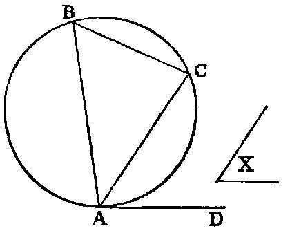
Sol.—Take any point A in the circumference. Draw the tangent AD, and make the angle DAC equal to the given angle X. AC will cut off the required segment.
Dem.—Take any point B in the alternate segment. Join BA, BC. Then the angle DAC is equal to ABC [xxxii.]; but DAC is equal to X (const.). Therefore the angle ABC is equal to X.
PROP. XXXV.—Theorem.
If two chords (AB, CD) of a circle intersect in a point (E) within the circle, the rectangles (AE.EB, CE.ED) contained by the segments are equal.
Dem.—1. If the point of intersection be the centre, each rectangle is equal to the square of the radius. Hence they are equal.
2. Let one of the chords AB pass through the centre O, and cut the other chord CD, which does not pass through the centre, at right angles. Join OC. Now because AB passes through the centre, and cuts the other chord CD, which does not pass through the centre at right angles, it bisects it [iii.]. Again, because AB is divided equally in O and unequally in E, the rectangle AE.EB, together with OE2, is equal to OB2—that is, to OC2 [II. v.]; but OC2 is equal to OE2 + EC2 [I. xlvii.] Therefore
Reject OE2, which is common, and we have AE.EB = EC2; but CE2 is equal to the rectangle CE.ED, since CE is equal to ED. Therefore the rectangle AE.EB is equal to the rectangle CE.ED.
3. Let AB pass through the centre, and cut CD, which does not pass through the centre obliquely. Let O be the centre. Draw OF perpendicular to CD [I. xi.]. Join OC, OD. Then, since CD is cut at right angles by OF, which passes through the centre, it is bisected in F [iii.], and divided unequally in E. Hence
| CE.ED + FE2 | = FD2 [II. v.], | ||||||||||
| and | OF2 | = OF2. |
Hence, adding, since FE2 + OF2 = OE2 [I. xlvii.], and FD2 + OF2 = OD2, we get
Again, since AB is bisected in O and divided unequally in E,
| AE.EB + OE2 | = OB2 [II. v.]. | ||||||||||
| Therefore | CE.ED + OE2 | = AE.EB + OE2. | |||||||||
| Hence | CE.ED | = AE.EB. |
4. Let neither chord pass through the centre. Through the point E, where they intersect, draw the diameter FG. Then by 3, the rectangle FE.EG is equal to the rectangle AE.EB, and also to the rectangle CE.ED. Hence the rectangle AE.EB is equal to the rectangle CE.ED.
Cor. 1.—If a chord of a circle be divided in any point within the circle, the rectangle contained by its segments is equal to the difference between the square of the radius and the square of the line drawn from the centre to the point of section.
Cor. 2.—If the rectangle contained by the segments of one of two intersecting lines be equal to the rectangle contained by the segments of the other, the four extremities are concyclic.
Cor. 3.—If two triangles be equiangular, the rectangle contained by the non-corresponding sides about any two equal angles are equal.
Let ABO, DCO be the equiangular triangles, and let them be placed so that the equal angles at O may be vertically opposite, and that the non-corresponding sides AO, CO may be in one line; then the non-corresponding sides BO, OD shall be in one line. Now, since the angle ABD is equal to ACD, the points A, B, C, D are concyclic [xxi., Cor. 1]. Hence the rectangle AO.OC is equal to the rectangle BO.OD [xxxv.].
Exercises.
1. In any triangle, the rectangle contained by two sides is equal to the rectangle contained by the perpendicular on the third side and the diameter of the circumscribed circle.
Def.—The supplement of an arc is the difference between it and a semicircle.
2. The rectangle contained by the chord of an arc and the chord of its supplement is equal to the rectangle contained by the radius and the chord of twice the supplement.
3. If the base of a triangle be given, and the sum of the sides, the rectangle contained by the perpendiculars from the extremities of the base on the external bisector of the vertical angle is given.
4. If the base and the difference of the sides be given, the rectangle contained by the perpendiculars from the extremities of the base on the internal bisector is given.
5. Through one of the points of intersection of two circles draw a secant, so that the rectangle contained by the intercepted chords may be given, or a maximum.
6. If the sum of two arcs, AC, CB of a circle be less than a semicircle, the rectangle AC.CB contained by their chords is equal to the rectangle contained by the radius, and the excess of the chord of the supplement of their difference above the chord of the supplement of their sum.—Catalan.
Dem.—Draw DE, the diameter which is perpendicular to AB, and draw the chords CF, BG parallel to DE. Now it is evident that the difference between the arcs AC, CB is equal to 2CD, and therefore = CD + EF. Hence the arc CBF is the supplement of the difference, and CF is the chord of that supplement. Again, since the angle ABG is right, the arc ABG is a semicircle. Hence BG is the supplement of the sum of the arcs AC, CB; therefore the line BG is the chord of the supplement of the sum. Now (Ex. 1), the rectangle AC.CB is equal to the rectangle contained by the diameter and CI, and therefore equal to the rectangle contained by the radius and 2CI; but the difference between CF and BG is evidently equal to 2CI. Hence the rectangle AC.CB is equal to the rectangle contained by the radius and the difference between the chords CF, BG.
7. If we join AF, BF we find, as before, the rectangle AF.FB equal to the rectangle contained by the radius and 2FI—that is, equal to the rectangle contained by the radius and the sum of CF and BG. Hence—If the sum of two arcs of a circle be greater than a semicircle, the rectangle contained by their chords is equal to the rectangle contained by the radius, and the sum of the chords of the supplements of their sum and their difference.
8. Through a given point draw a transversal cutting two lines given in position, so that the rectangle contained by the segments intercepted between it and the line may be given.
PROP. XXXVI.—Theorem.
If from any point (P) without a circle two lines be drawn to it, one of which (PT) is a tangent, and the other (PA) a secant, the rectangle (AP, BP) contained by the segments of the secant is equal to the square of the tangent.
Dem.—1. Let PA pass through the centre O. Join OT. Then because AB is bisected in O and divided externally in P, the rectangle AP.BP + OB2 is equal to OP2 [II. vi.]. But since PT is a tangent, and OT drawn from the centre to the point of contact, the angle OTP is right [xviii.]. Hence OT2 + PT2 is equal to OP2.
| Therefore | AP.BP + OB2 | = OT2 + PT2; | |||||||||
| but | OB2 | = OT2. | |||||||||
| Hence the rectangle AP.BP | = PT2. |
2. If AB does not pass through the centre O, let fall the perpendicular OC on AB. Join OT, OB, OP. Then because OC, a line through the centre, cuts AB, which does not pass through the centre at right angles, it bisects it [iii.]. Hence, since AB is bisected in C and divided externally in P, the rectangle
| AP.BP + CB2 | = CP2 [II. vi.]; | ||||||||||
| and | OC2 | = OC2. |
Hence, adding, since CB2 + OC2 = OB2 [I. xlvii.], and CP2 + OC2 = OP2, we get
| rectangle | AP.BP + OB2 | = OP2; | |||||||||
| but | OT2 + PT2 | = OP2 [I. xlvii.]. | |||||||||
| Therefore | AP.BP + OB2 | = OT2 + PT2; |
and rejecting the equals OB2 and OT2, we have the rectangle
The two Propositions xxxv., xxxvi., may be included in one enunciation, as follows:—The rectangle AP.BP contained by the segments of any chord of a given circle passing through a fixed point P, either within or without the circle, is constant. For let O be the centre: join OA, OB, OP. Then OAB is an isosceles triangle, and OP is a line drawn from its vertex to a point P in the base, or base produced. Then the rectangle AP.BP is equal to the difference of the squares of OB and OP, and is therefore constant.
Cor. 1.—If two lines AB, CD produced meet in P, and if the rectangle AP.BP = CP.DP, the points A, B, C, D are concyclic (compare xxxv., Cor. 2).
Cor. 2.—Tangents to two circles from any point in their common chord are equal (compare xvii., Ex. 6).
Cor. 3.—The common chords of any three intersecting circles are concurrent (compare xvii., Ex. 7).
Exercise.
If from the vertex A of a △ ABC, AD be drawn, meeting CB produced in D, and making the angle BAD = ACB, prove DB.DC = DA2.
PROP. XXXVII.—Theorem.
If the rectangle (AP.BP) contained by the segments of a secant, drawn from any point (P) without a circle, be equal to the square of a line (PT) drawn from the same point to meet the circle, the line which meets the circle is a tangent.

Dem.—From P draw PQ touching the circle [xvii.]. Let O be the centre. Join OP, OQ, OT. Now the rectangle AP.BP is equal to the square on PT (hyp.), and equal to the square on PQ [xxxvi.]. Hence PT2 is equal to PQ2, and therefore PT is equal to PQ. Again, the triangles OTP, OQP have the side OT equal OQ, TP equal QP, and the base OP common; hence [I. viii.] the angle OTP is equal to OQP; but OQP is a right angle, since PQ is a tangent [xviii.]; hence OTP is right, and therefore [xvi.] PT is a tangent.
Exercises.
1. Describe a circle passing through two given points, and fulfilling either of the following conditions: 1, touching a given line; 2, touching a given circle.
2. Describe a circle through a given point, and touching two given lines; or touching a given file and a given circle.
3. Describe a circle passing through a given point, having its centre on a given line and touching a given circle.
4. Describe a circle through two given points, and intercepting a given arc on a given circle.
5. A, B, C, D are four collinear points, and EF is a common tangent to the circles described upon AB, CD as diameters: prove that the triangles AEB, CFD are equiangular.
6. The diameter of the circle inscribed in a right-angled triangle is equal to half the sum of the diameters of the circles touching the hypotenuse, the perpendicular from the right angle of the hypotenuse, and the circle described about the right-angled triangle.
Questions for Examination on Book III.
1. What is the subject-matter of Book III.?
2. Define equal circles.
3. What is the difference between a chord and a secant?
4. When does a secant become a tangent?
5. What is the difference between a segment of a circle and a sector?
6. What is meant by an angle in a segment?
7. If an arc of a circle be one-sixth of the whole circumference, what is the magnitude of the angle in it?
8. What are linear segments?
9. What is meant by an angle standing on a segment?
10. What are concyclic points?
11. What is a cyclic quadrilateral?
12. How many intersections can a line and a circle have?
13. What does the line become when the points of intersection become consecutive?
14. How many points of intersection can two circles have?
15. What is the reason that if two circles touch they cannot have any other common point?
16. Give one enunciation that will include Propositions xi., xii. of Book III.
17. What Proposition is this a limiting case of?
18. Explain the extended meaning of the word angle.
19. What is Euclid’s limit of an angle?
20. State the relations between Propositions xvi., xviii., xix.
21. What Propositions are these limiting cases of?
22. How many common tangents can two circles have?
23. What is the magnitude of the rectangle of the segments of a chord drawn through a point 3.65 metres distant from the centre of a circle whose radius is 4.25 metres?
24. The radii of two circles are 4.25 and 1.75 feet respectively, and the distance between their centres 6.5 feet; find the lengths of their direct and their transverse common tangents.
25. If a point be h feet outside the circumference of a circle whose diameter is 7920 miles, prove that the length of the tangent drawn from it to the circle is miles.
26. Two parallel chords of a circle are 12 perches and 16 perches respectively, and their distance asunder is 2 perches; find the length of the diameter.
27. What is the locus of the centres of all circles touching a given circle in a given point?
28. What is the condition that must be fulfilled that four points may be concyclic?
29. If the angle in a segment of a circle be a right angle and a-half, what part of the whole circumference is it?
30. Mention the converse Propositions of Book III. which are proved directly.
31. What is the locus of the middle points of equal chords in a circle?
32. The radii of two circles are 6 and 8, and the distance between their centres 10; find the length of their common chord.
33. If a figure of any even number of sides be inscribed in a circle, prove that the sum of one set of alternate angles is equal to the sum of the remaining angles.
Exercises on Book III.
1. If two chords of a circle intersect at right angles, the sum of the squares on their segments is equal to the square on the diameter.
2. If a chord of a given circle subtend a right angle at a fixed point, the rectangle of the perpendiculars on it from the fixed point and from the centre of the given circle is constant. Also the sum of the squares of perpendiculars on it from two other fixed points (which may be found) is constant.
3. If through either of the points of intersection of two equal circles any line be drawn meeting them again in two points, these points are equally distant from the other intersection of the circles.
4. Draw a tangent to a given circle so that the triangle formed by it and two fixed tangents to the circle shall be—1, a maximum; 2, a minimum.
5. If through the points of intersection A, B of two circles any two lines ACD, BEF be drawn parallel to each other, and meeting the circles again in C, D, E, F; then CD = EF.
6. In every triangle the bisector of the greatest angle is the least of the three bisectors of the angles.
7. The circles whose diameters are the four sides of any cyclic quadrilateral intersect again in four concyclic points.
8. The four angular points of a cyclic quadrilateral determine four triangles whose orthocentres (the intersections of their perpendiculars) form an equal quadrilateral.
9. If through one of the points of intersection of two circles we draw two common chords, the lines joining the extremities of these chords make a given angle with each other.
10. The square on the perpendicular from any point in the circumference of a circle, on the chord of contact of two tangents, is equal to the rectangle of the perpendiculars from the same point on the tangents.
11. Find a point in the circumference of a given circle, the sum of the squares on whose distances from two given points may be a maximum or a minimum.
12. Four circles are described on the sides of a quadrilateral as diameters. The common chord of any two on adjacent sides is parallel to the common chord of the remaining two.
13. The rectangle contained by the perpendiculars from any point in a circle, on the diagonals of an inscribed quadrilateral, is equal to the rectangle contained by the perpendiculars from the same point on either pair of opposite sides.
14. The rectangle contained by the sides of a triangle is greater than the square on the internal bisector of the vertical angle, by the rectangle contained by the segments of the base.
15. If through A, one of the points of intersection of two circles, we draw any line ABC, cutting the circles again in B and C, the tangents at B and C intersect at a given angle.
16. If a chord of a given circle pass through a given point, the locus of the intersection of tangents at its extremities is a right line.
17. The rectangle contained by the distances of the point where the internal bisector of the vertical angle meets the base, and the point where the perpendicular from the vertex meets it from the middle point of the base, is equal to the square on half the difference of the sides.
18. State and prove the Proposition analogous to 17 for the external bisector of the vertical angle.
19. The square on the external diagonal of a cyclic quadrilateral is equal to the sum of the squares on the tangents from its extremities to the circumscribed circle.
20. If a variable circle touch a given circle and a given line, the chord of contact passes through a given point.
21. If A, B, C be three points in the circumference of a circle, and D, E the middle points of the arcs AB, AC; then if the line DE intersect the chords AB, AC in the points F, G, AF is equal to AG.
22. Given two circles, O, O′; then if any secant cut O in the points B, C, and O′ in the points B′, C′, and another secant cuts them in the points D, E; D′, E′ respectively; the four chords BD, CE, B′D′, C′E′ form a cyclic quadrilateral.
23. If a cyclic quadrilateral be such that a circle can be inscribed in it, the lines joining the points of contact are perpendicular to each other.
24. If through the point of intersection of the diagonals of a cyclic quadrilateral the minimum chord be drawn, that point will bisect the part of the chord between the opposite sides of the quadrilateral.
25. Given the base of a triangle, the vertical angle, and either the internal or the external bisector at the vertical angle; construct it.
26. If through the middle point A of a given arc BAC we draw any chord AD, cutting BC in E, the rectangle AD.AE is constant.
27. The four circles circumscribing the four triangles formed by any four lines pass through a common point.
28. If X, Y , Z be any three points on the three sides of a triangle ABC, the three circles about the triangles Y AZ, ZBX, XCY pass through a common point.
29. If the position of the common point in the last question be given, the three angles of the triangle XY Z are given, and conversely.
30. Place a given triangle so that its three sides shall pass through three given points.
31. Place a given triangle so that its three vertices shall lie on three given lines.
32. Construct the greatest triangle equiangular to a given one whose sides shall pass through three given points.
33. Construct the least triangle equiangular to a given one whose vertices shall lie on three given lines.
34. Construct the greatest triangle equiangular to a given one whose sides shall touch three given circles.
35. If two sides of a given triangle pass through fixed points, the third touches a fixed circle.
36. If two sides of a given triangle touch fixed circles, the third touches a fixed circle.
37. Construct an equilateral triangle having its vertex at a given point, and the extremities of its base on a given circle.
38. Construct an equilateral triangle having its vertex at a given point, and the extremities of its base on two given circles.
39. Place a given triangle so that its three sides shall touch three given circles.
40. Circumscribe a square about a given quadrilateral.
41. Inscribe a square in a given quadrilateral.
42. Describe circles—(1) orthogonal (cutting at right angles) to a given circle and passing through two given points; (2) orthogonal to two others, and passing through a given point; (3) orthogonal to three others.
43. If from the extremities of a diameter AB of a semicircle two chords AD, BE be drawn, meeting in C, AC.AD + BC.BE = AB2.
44. If ABCD be a cyclic quadrilateral, and if we describe any circle passing through the points A and B, another through B and C, a third through C and D, and a fourth through D and A; these circles intersect successively in four other points E, F, G, H, forming another cyclic quadrilateral.
45. If ABC be an equilateral triangle, what is the locus of the point M, if MA = MB + MC?
46. In a triangle, given the sum or the difference of two sides and the angle formed by these sides both in magnitude and position, the locus of the centre of the circumscribed circle is a right line.
47. Describe a circle—(1) through two given points which shall bisect the circumference of a given circle; (2) through one given point which shall bisect the circumference of two given circles.
48. Find the locus of the centre of a circle which bisects the circumferences of two given circles.
49. Describe a circle which shall bisect the circumferences of three given circles.
50. AB is a diameter of a circle; AC, AD are two chords meeting the tangent at B in the points E, F respectively: prove that the points C, D, E, F are concyclic.
51. CD is a perpendicular from any point C in a semicircle on the diameter AB; EFG is a circle touching DB in E, CD in F, and the semicircle in G; prove—(1) that the points A, F, G are collinear; (2) that AC = AE.
52. Being given an obtuse-angled triangle, draw from the obtuse angle to the opposite side a line whose square shall be equal to the rectangle contained by the segments into which it divides the opposite side.
53. O is a point outside a circle whose centre is E; two perpendicular lines passing through O intercept chords AB, CD on the circle; then AB2 + CD2 + 4OE2 = 8R2.
54. The sum of the squares on the sides of a triangle is equal to twice the sum of the rectangles contained by each perpendicular and the portion of it comprised between the corresponding vertex and the orthocentre; also equal to 12R2 minus the sum of the squares of the distances of the orthocentre from the vertices.
55. If two circles touch in C, and if D be any point outside the circles at which their radii through C subtend equal angles, if DE, DF be tangent from D, DE.DF = DC2.
i. If two rectilineal figures be so related that the angular points of one lie on the sides of the other—1, the former is said to be inscribed in the latter; 2, the latter is said to be described about the former.
ii. A rectilineal figure is said to be inscribed in a circle when its angular points are on the circumference. Reciprocally, a rectilineal figure is said to be circumscribed to a circle when each side touches the circle.
iii. A circle is said to be inscribed in a rectilineal figure when it touches each side of the figure. Reciprocally, a circle is said to be circumscribed to a rectilineal figure when it passes through each angular point of the figure.
iv. A rectilineal figure which is both equilateral and equiangular is said to be regular.
Observation.—The following summary of the contents of the Fourth Book will assist the student in remembering it:—
1. It contains sixteen Propositions, of which four relate to triangles, four to squares, four to pentagons, and four miscellaneous Propositions.
2. Of the four Propositions occupied with triangles—
(α) One is to inscribe a triangle in a circle.
(β) Its reciprocal, to describe a triangle about a circle.
(γ) To inscribe a circle in a triangle.
(δ) Its reciprocal, to describe a circle about a triangle.
3. If we substitute in (α), (β), (γ), (δ) squares for triangles, and pentagons for triangles, we have the problems for squares and pentagons respectively.
4. Every Proposition in the fourth Book is a problem.
PROP. I.—Problem.
In a given circle (ABC) to place a chord equal to a given line (D) not greater than the diameter.
Sol.—Draw any diameter AC of the circle; then, if AC be equal to D, the thing required is done; if not, from AC cut off the part AE equal to D [I. iii.]; and with A as centre and AE as radius, describe the circle EBF, cutting the circle ABC in the points B, F. Join AB. Then AB is the chord required.
Dem.—Because A is the centre of the circle EBF, AB is equal to AE [I. Def. xxxii.]; but AE is equal to D (const.); therefore AB is equal to D.
PROP. II.—Problem.
In a given circle (ABC) to inscribe a triangle equiangular to a given triangle (DEF).
Sol.—Take any point A in the circumference, and at it draw the tangent GH; then make the angle HAC equal to E, and GAB equal to F [I. xxiii.] Join BC. ABC is a triangle fulfilling the required conditions.
Dem.—The angle E is equal to HAC (const.), and HAC is equal to the angle ABC in the alternate segment [III. xxxii.]. Hence the angle E is equal to ABC. In like manner the angle F is equal to ACB. Therefore [I. xxxii.] the remaining angle D is equal to BAC. Hence the triangle ABC inscribed in the given circle is equiangular to DEF.
PROP. III.—Problem.
About a given circle (ABC) to describe a triangle equiangular to a given triangle (DEF).
Sol.—Produce any side DE of the given triangle both ways to G and H, and from the centre O of the circle draw any radius OA; make the angle AOB equal to GEF [I. xxiii.], and the angle AOC equal to HDF. At the points A, B, C draw the tangents LM, MN, NL to the given circle. LMN is a triangle fulfilling the required conditions.
Dem.—Because AM touches the circle at A, the angle OAM is right. In like manner, the angle MBO is right; but the sum of the four angles of the quadrilateral OAMB is equal to four right angles. Therefore the sum of the two remaining angles AOB, AMB is two right angles; and [I. xiii.] the sum of the two angles GEF, FED is two right angles. Therefore the sum of AOB, AMB is equal to the sum of GEF, FED; but AOB is equal to GEF (const.). Hence AMB is equal to FED. In like manner, ALC is equal to EDF; therefore [I. xxxii.] the remaining angle BNC is equal to DFE. Hence the triangle LMN is equiangular to DEF.
PROP. IV.—Problem.
To inscribe a circle in a given triangle (ABC).
Sol.—Bisect any two angles A, B of the given triangle by the lines AO, BO; then O, their point of intersection, is the centre of the required circle.
Dem.—From O let fall the perpendiculars OD, OE, OF on the sides of the triangle. Now, in the triangles OAE, OAF the angle OAE is equal to OAF (const.), and the angle AEO equal to AFO, because each is right, and the side OA common. Hence [I. xxvi.] the side OE is equal to OF. In like manner OD is equal to OF; therefore the three lines OD, OE, OF are all equal. And the circle described with O as centre and OD as radius will pass through the points E, F; and since the angles D, E, F are right, it will [III. xvi.] touch the three sides of the triangle ABC; and therefore the circle DEF is inscribed in the triangle ABC.
Exercises.
1. If the points O, C be joined, the angle C is bisected. Hence “the bisectors of the angles of a triangle are concurrent” (compare I. xxvi., Ex. 7).
2. If the sides BC, CA, AB of the triangle ABC be denoted by a, b, c, and half their sum by s, the distances of the vertices A, B, C of the triangle from the points of contact of the inscribed circle are respectively s − a, s − b, s − c.
3. If the external angles of the triangle ABC be bisected as in the annexed diagram, the three angular points O′, O′′, O′′′, of the triangle formed by the three bisectors will be the centres of three circles, each touching one side externally, and the other two produced. These three circles are called the escribed circles of the triangle ABC.
4. The distances of the vertices A, B, C from the points of contact of the escribed circle which touches AB externally are s − b, s − a, s.
5. The centre of the inscribed circle, the centre of each escribed circle, and two of the angular points of the triangle, are concyclic. Also any two of the escribed centres are concyclic with the corresponding two of the angular points of the triangle.
6. Of the four points O, O′, O′′, O′′′, any one is the orthocentre of the triangle formed by the remaining three.
7. The three triangles BCO′, CAO′′, ABO′′′ are equiangular.
8. The rectangle CO.CO′′′ = ab; AO.AO′ = bc; BO.BO′′ = ca.
9. Since the whole triangle ABC is made up of the three triangles AOB, BOC, COA, we see that the rectangle contained by the sum of the three sides, and the radius of the inscribed circle, is equal to twice the area of the triangle. Hence, if r denote the radius of the inscribed circle, rs = area of the triangle.
10. If r′ denote the radius of the escribed circle which touches the side a externally, it may be shown in like manner that r′(s − a) = area of the triangle.
11. rr′ = s − b.s − c.
12. Square of area = s.s − a.s − b.s − c.
13. Square of area = r.r′.r′′.r′′′.
14. If the triangle ABC be right-angled, having the angle C right,
15. Given the base of a triangle, the vertical angle, and the radius of the inscribed, or any of the escribed circles: construct it.
PROP. V.—Problem.
To describe a circle about a given triangle (ABC).
Sol.—Bisect any two sides BC, AC in the points D, E. Erect DO, EO at right angles to BC, CA; then O, the point of intersection of the perpendiculars, is the centre of the required circle.
Dem.—Join OA, OB, OC. The triangles BDO, CDO have the side BD equal CD (const.), and DO common, and the angle BDO equal to the angle CDO, because each is right. Hence [I. iv.] BO is equal to OC. In like manner AO is equal to OC. Therefore the three lines AO, BO, CO are equal, and the circle described with O as centre, and OA as radius, will pass through the points A, B, C, and be described about the triangle ABC.
Cor. 1.—Since the perpendicular from O on AB bisects it [III. iii.], we see that the perpendiculars at the middle points of the sides of a triangle are concurrent.
Def.—The circle ABC is called the circumcircle, its radius the circumradius, and its centre the circumcentre of the triangle.
Exercises.
1. The three perpendiculars of a triangle (ABC) are concurrent.
Dem.—Describe a circle about the triangle. Let fall the perpendicular CF. Produce CF to meet the circle in G. Make FO = FG. Join AG, AO. Produce AO to meet BC in D. Then the triangles GFA, OFA have the sides GF, FA in one equal to the sides OF, FA in the other, and the contained angles equal. Hence [I. iv.] the angle GAF equal OAF; but GAF = GCB [III. xxi.]; hence OAF = OCD, and FOA = DOC; hence OFA = ODC; but OFA is right, hence ODC is right. In like manner, if BO be joined to meet AC in E, BE will be perpendicular to AC. Hence the three perpendiculars pass through O, and are concurrent. This Proposition may be proved simply as follows:—
Draw parallels to the sides of the original triangle ABC through its vertices, forming a new triangle A′B′C′ described about ABC; then the three perpendiculars at the middle points of the sides of A′B′C′ are concurrent [v. Cor. 1], and these are evidently the perpendiculars from the vertices on the opposite sides of the triangle ABC (compare Ex. 16, Book I.).
Def.—The point O is called the orthocentre of the triangle ABC.
2. The three rectangles OA.OP, OB.OQ, OC.OR are equal.
Def.—The circle round O as centre, the square of whose radius is equal OA.OP = OB.OQ = OC.OR, is called the polar circle of the triangle ABC.
Observation.—If the orthocentre of the triangle ABC be within the triangle, the rectangles OA.OP, OB.OQ, OC.OR are negative, because the lines OA.OP, &c., are measured in opposite directions, and have contrary signs; hence the polar circle is imaginary; but it is real when the point O is without the triangle—that is, when the triangle has an obtuse angle.
3. If the perpendiculars of a triangle be produced to meet the circumscribed circle, the intercepts between the orthocentre and the circle are bisected by the sides of the triangle.
4. The point of bisection (I) of the line (OP) joining the orthocentre (O) to the circumference (P) of any triangle is equally distant from the feet of the perpendiculars, from the middle points of the sides, and from the middle points of the distances of the vertices from the orthocentre.
Dem.—Draw the perpendicular PH; then, since OF, PH are perpendiculars on AB, and OP is bisected in I, it is easy to see that IH = IF. Again, since OP, OG are bisected in I, F; IF = PG—that is, IF = the radius. Hence the distance of I from the foot of each perpendicular, and from the middle point of each side, is = the radius. In like manner, if OC be bisected in K, then IK = the radius. Hence we have the following theorem:—The nine points made up of the feet of the perpendiculars, the middle points of the sides, and the middle points of the lines from the vertices to the orthocentre, are concyclic.
Def.—The circle through these nine points is called the “nine points circle” of the triangle.
5. The circumcircle of a triangle is the “nine points circle” of each of the four triangles formed by joining the centres of the inscribed and escribed circles.
6. The distances between the vertices of a triangle and its orthocentre are respectively the doubles of the perpendiculars from the circumcentre on the sides.
7. The radius of the “nine points circle” of a triangle is equal to half its circumradius.
PROP. VI.—Problem.
In a given circle (ABCD) to inscribe a square.
Sol.—Draw any two diameters AC, BD at right angles to each other. Join AB, BC, CD, DA. ABCD is a square.
Dem.—Let O be the centre. Then the four angles at O, being right angles, are equal. Hence the arcs on which they stand are equal [III. xxvi.], and hence the four chords are equal [III. xxix.]. Therefore the figure ABCD is equilateral.
Again, because AC is a diameter, the angle ABC is right [III. xxxi.]. In like manner the remaining angles are right. Hence ABCD is a square.
PROP. VII.—Problem.
About a given circle (ABCD) to describe a square.
Sol.—Through the centre O draw any two diameters at right angles to each other, and draw at the points A, B, C, D the lines HE, EF, FG, GH touching the circle. EFGH is a square.

Dem.—Because AE touches the circle at A, the angle EAO is right [III. xviii.], and therefore equal to BOC, which is right (const.). Hence AE is parallel to OB. In like manner EB is parallel to AO; and since AO is equal to OB, the figure AOBE is a lozenge, and the angle AOB is right; hence AOBE is a square. In like manner each of the figures BC, CD, DA is a square. Hence the whole figure is a square.
Cor.—The circumscribed square is double of the inscribed square.
PROP. VIII.—Problem.
In a given square (ABCD) to inscribe a circle.
Sol.—Bisect (see last diagram) two adjacent sides EH, EF in the points A, B, and through A, B draw the lines AC, BD, respectively parallel to EF, EH; then O, the point of intersection of these parallels, is the centre of the required circle.
Dem.—Because AOBE is a parallelogram, its opposite sides are equal; therefore AO is equal to EB; but EB is half the side of the given square; therefore AO is equal to half the side of the given square; and so in like manner is each of the lines OB, OC, OD; therefore the four lines OA, OB, OC, OD are all equal; and since they are perpendicular to the sides of the given square, the circle described with O as centre, and OA as radius, will be inscribed in the square.
PROP. IX.—Problem.
About a given square (ABCD) to describe a circle.
Sol.—Draw the diagonals AC, BD intersecting in O (see diagram to Proposition vi.). O is the centre of the required circle.
Dem.—Since ABC is an isosceles triangle, and the angle B is right, each of the other angles is half a right angle; therefore BAO is half a right angle. In like manner ABO is half a right angle; hence the angle BAO equal ABO; therefore [I. vi.] AO is equal to OB. In like manner OB is equal to OC, and OC to OD. Hence the circle described, with O as centre and OA as radius, will pass through the points B, C, D, and be described about the square.
PROP. X.—Problem.
To construct an isosceles triangle having each base angle double the vertical angle.
Sol.—Take any line AB. Divide it in C, so that the rectangle AB.BC shall be equal to AC2 [II. xi.]. With A as centre, and AB as radius, describe the circle BDE, and in it place the chord BD equal to AC [i.]. Join AD. ADB is a triangle fulfilling the required conditions.
Dem.—Join CD. About the triangle ACD describe the circle CDE [v.]. Then, because the rectangle AB.BC is equal to AC2 (const.), and that AC is equal to BD (const.); therefore the rectangle AB.BC is equal to BD2. Hence [III. xxxii.] BD touches the circle ACD. Hence the angle BDC is equal to the angle A in the alternate segment [III. xxxii.]. To each add CDA, and we have the angle BDA equal to the sum of the angles CDA and A; but the exterior angle BCD of the triangle ACD is equal to the sum of the angles CDA and A. Hence the angle BDA is equal to BCD; but since AB is equal to AD, the angle BDA is equal to ABD; therefore the angle CBD is equal to BCD. Hence [I. vi.] BD is equal to CD; but BD is equal to AC (const.); therefore AC is equal to CD, and therefore [I. v.] the angle CDA is equal to A; but BDA has been proved to be equal to the sum of CDA and A. Hence BDA is double of A. Hence each of the base angles of the triangle ABD is double of the vertical angle.
Exercises.
1. Prove that ACD is an isosceles triangle whose vertical angle is equal to three times each of the base angles.
2. Prove that BD is the side of a regular decagon inscribed in the circle BDE.
3. If DB, DE, EF be consecutive sides of a regular decagon inscribed in a circle, prove BF − BD = radius of circle.
4. If E be the second point of intersection of the circle ACD with BDE, DE is equal to DB; and if AE, BE, CE, DE be joined, each of the triangles ACE, ADE is congruent with ABD.
5. AC is the side of a regular pentagon inscribed in the circle ACD, and EB the side of a regular pentagon inscribed in the circle BDE.
6. Since ACE is an isosceles triangle, EB2 − EA2 = AB.BC—that is = BD2; therefore EB2 − BD2 = EA2—that is, the square of the side of a pentagon inscribed in a circle exceeds the square of the side of the decagon inscribed in the same circle by the square of the radius.
PROP. XI.—Problem.
To inscribe a regular pentagon in a given circle (ABCDE).
Sol.—Construct an isosceles triangle [x.], having each base angle double the vertical angle, and inscribe in the given circle a triangle ABD equiangular to it. Bisect the angles DAB, ABD by the lines AC, BE. Join EA, ED, DC, CB; then the figure ABCDE is a regular pentagon.
Dem.—Because each of the base angles BAD, ABD is double of the angle ADB, and the lines AC, BE bisect them, the five angles BAC, CAD, ADB, DBE, EBA are all equal; therefore the arcs on which they stand are equal; and therefore the five chords, AB, BC, CD, DE, EA are equal. Hence the figure ABCDE is equilateral.
Again, because the arcs AB, DE are equal, adding the arc BCD to both, the arc ABCD is equal to the arc BCDE, and therefore [III. xxvii.] the angles AED, BAE, which stand on them, are equal. In the same manner it can be proved that all the angles are equal; therefore the figure ABCDE is equiangular. Hence it is a regular pentagon.
Exercises.
1. The figure formed by the five diagonals of a regular pentagon is another regular pentagon.
2. If the alternate sides of a regular pentagon be produced to meet, the five points of meeting form another regular pentagon.
3. Every two consecutive diagonals of a regular pentagon divide each other in extreme and mean ratio.
4. Being given a side of a regular pentagon, construct it.
5. Divide a right angle into five equal parts.
PROP. XII.—Problem.
To describe a regular pentagon about a given circle (ABCDE).
Sol.—Let the five points A, B, C, D, E on the circle be the vertices of any inscribed regular pentagon: at these points draw tangents FG, GH, HI, IJ, JF: the figure FGHIJ is a circumscribed regular pentagon.
Dem.—Let O be the centre of the circle. Join OE, OA, OB. Now, because the angles A, E of the quadrilateral AOEF are right angles [III. xviii.], the sum of the two remaining angles AOE, AFE is two right angles. In like manner the sum of the angles AOB, AGB is two right angles; therefore the sum of AOE, AFE is equal to the sum of AOB, AGB; but the angles AOE, AOB are equal, because they stand on equal arcs AE, AB [III. xxvii.]. Hence the angle AFE is equal to AGB. In like manner the remaining angles of the figure FGHIJ are equal. Therefore it is equiangular.
Again, join OF, OG. Now the triangles EOF, AOF have the sides AF, FE equal [III. xvii., Ex. 1], and FO common, and the base AO equal to the base EO. Hence the angle AFO is equal to EFO [I. viii.]. Therefore the angle AFO is half the angle AFE. In like manner AGO is half the angle AGB; but AFE has been proved equal to AGB; hence AFO is equal to AGO, and FAO is equal to GAO, each being right, and AO common to the two triangles FAO, GAO; hence [I. xxvi.] the side AF is equal to AG; therefore GF is double AF. In like manner JF is double EF; but AF is equal to EF; hence GF is equal to JF. In like manner the remaining sides are equal; therefore the figure FGHIJ is equilateral, and it has been proved equiangular. Hence it is a regular pentagon.
This Proposition is a particular case of the following general theorem, of which the proof is the same as the foregoing:—
“If tangents be drawn to a circle, at the angular points of an inscribed polygon of any number of sides, they will form a regular polygon of the same number of sides circumscribed to the circle.”
PROP. XIII.—Problem.
To inscribe a circle in a regular pentagon (ABCDE).
Sol.—Bisect two adjacent angles A, B by the lines AO, BO; then O, the point of intersection of the bisectors, is the centre of the required circle.
Dem.—Join CO, and let fall perpendiculars from O on the five sides of the pentagon. Now the triangles ABO, CBO have the side AB equal to BC (hyp.), and BO common, and the angle ABO equal to CBO (const.). Hence the angle BAO is equal to BCO [I. iv.]; but BAO is half BAE (const.). Therefore BCO is half BCD, and therefore CO bisects the angle BCD. In like manner it may be proved that DO bisects the angle D, and EO the angle E.
Again, the triangles BOF, BOG have the angle F equal to G, each being right; and OBF equal to OBG, because OB bisects the angle ABC (const.), and OB common; hence [I. xxvi.] OF is equal to OG. In like manner all the perpendiculars from O on the sides of the pentagon are equal; hence the circle whose centre is O, and radius OF, will touch all the sides of the pentagon, and will therefore be inscribed in it.
In the same manner a circle may be inscribed in any regular polygon.
PROP. XIV.—Problem.
To describe a circle about a regular pentagon (ABCDE).
Sol.—Bisect two adjacent angles A, B by the lines AO, BO. Then O, the point of intersection of the bisectors, is the centre of the required circle.
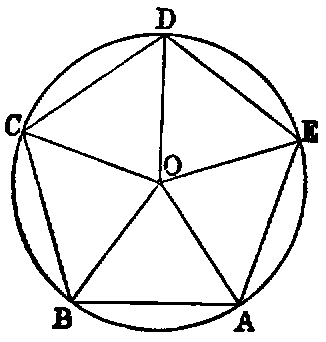
Dem.—Join OC, OD, OE. Then the triangles ABO, CBO have the side AB equal to BC (hyp.), BO common, and the angle ABO equal to CBO (const.). Hence the angle BAO is equal to BCO [I. iv.]; but the angle BAE is equal to BCD (hyp.); and since BAO is half BAE (const.), BCO is half BCD. Hence CO bisects the angle BCD. In like manner it may be proved that DO bisects CDE, and EO the angle DEA. Again, because the angle EAB is equal to ABC, their halves are equal. Hence OAB is equal to OBA; therefore [I. vi.] OA is equal to OB. In like manner the lines OC, OD, OE are equal to one another and to OA. Therefore the circle described with O as centre, and OA as radius, will pass through the points B, C, D, E, and be described about the pentagon.
In the same manner a circle may be described about any regular polygon.
Propositions xiii., xiv. are particular cases of the following theorem:—
“A regular polygon of any number of sides has one circle inscribed in it, and another described about it, and both circles are concentric.”
PROP. XV.—Problem.
In a given circle (ABCDEF) to inscribe a regular hexagon.
Sol.—Take any point A in the circumference, and join it to O, the centre of the given circle; then with A as centre, and AO as radius, describe the circle OBF, intersecting the given circle in the points B, F. Join OB, OF, and produce AO, BO, FO to meet the given circle again in the points D, E, C. Join AB, BC, CD, DE, EF, FA; ABCDEF is the required hexagon.
Dem.—Each of the triangles AOB, AOF is equilateral (see Dem., I. i.). Hence the angles AOB, AOF are each one-third of two right angles; therefore EOF is one-third of two right angles. Again, the angles BOC, COD, DOE are [I. xv.] respectively equal to the angles EOF, FOA, AOB. Therefore the six angles at the centre are equal, because each is one-third of two right angles. Therefore the six chords are equal [III. xxix.]. Hence the hexagon is equilateral.
Again, since the arc AF is equal to ED, to each add the arc ABCD; then the whole arc FABCD is equal to ABCDE; therefore the angles DEF, EFA which stand on these arcs are equal [III. xxvii.]. In the same manner it may be shown that the other angles of the hexagon are equal. Hence it is equiangular, and is therefore a regular hexagon inscribed in the circle.
Cor. 1.—The side of a regular hexagon inscribed in a circle is equal to the radius.
Cor. 2.—If three alternate angles of a hexagon be joined, they form an inscribed equilateral triangle.
Exercises.
1. The area of a regular hexagon inscribed in a circle is equal to twice the area of an equilateral triangle inscribed in the circle; and the square of the side of the triangle is three times the square of the side of the hexagon.
2. If the diameter of a circle be produced to C until the produced part is equal to the radius, the two tangents from C and their chord of contact form an equilateral triangle.
3. The area of a regular hexagon inscribed in a circle is half the area of an equilateral triangle, and three-fourths of the area of a regular hexagon circumscribed to the circle.
PROP. XVI.—Problem.
To inscribe a regular polygon of fifteen sides in a given circle.
Sol.—Inscribe a regular pentagon ABCDE in the circle [xi.], and also an equilateral triangle AGH [ii.]. Join CG. CG is a side of the required polygon.
Dem.—Since ABCDE is a regular pentagon, the arc ABC is ths of the circumference; and since AGH is an equilateral triangle, the arc ABG is rd of the circumference. Hence the arc GC, which is the difference between these two arcs, is equal to ths −rd, or 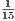th of the entire circumference; and therefore, if chords equal to GC [i.] be placed round the circle, we shall have a regular polygon of fifteen sides, or quindecagon, inscribed in it.
Scholium.—Until the year 1801 no regular polygon could be described by constructions employing the line and circle only, except those discussed in this Book, and those obtained from them by the continued bisection of the arcs of which their sides are the chords; but in that year the celebrated Gauss proved that if 2n + 1 be a prime number, regular polygons of 2n + 1 sides are inscriptable by elementary geometry. For the case n = 4, which is the only figure of this class except the pentagon for which a construction has been given, see Note at the end of this work.
Questions for Examination on Book IV.
1. What is the subject-matter of Book IV.?
2. When is one rectilineal figure said to be inscribed in another?
3. When circumscribed?
4. When is a circle said to be inscribed in a rectilineal figure?
5. When circumscribed about it?
6. What is meant by reciprocal propositions? Ans. In reciprocal propositions, to every line in one there corresponds a point in the other; and, conversely, to every point in one there corresponds a line in the other.
7. Give instances of reciprocal propositions in Book IV.
8. What is a regular polygon?
9. What figures can be inscribed in, and circumscribed about, a circle by means of Book IV.?
10. What regular polygons has Gauss proved to be inscriptable by the line and circle?
11. What is meant by escribed circles?
12. How many circles can be described to touch three lines forming a triangle?
13. What is the centroid of a triangle?
14. What is the orthocentre?
15. What is the circumcentre?
16. What is the polar circle?
17. When is the polar circle imaginary?
18. What is the “nine-points circle”?
19. Why is it so called?
20. Name the special nine points through which it passes.
21. What three regular figures can be used in filling up the space round a point? Ans. Equilateral triangles, squares, and hexagons.
22. If the sides of a triangle be 13, 14, 15, what are the values of the radii of its inscribed and escribed circles?
23. What is the radius of the circumscribed circle?
24. What is the radius of its nine-points circle?
25. What is the distance between the centres of its inscribed and circumscribed circles?
26. If r be the radius of a circle, what is the area of its inscribed equilateral triangle?—of its inscribed square?—its inscribed pentagon?—its inscribed hexagon?—its inscribed octagon?—its inscribed decagon?
27. With the same hypothesis, find the sides of the same regular figures.
Exercises on Book IV.
1. If a circumscribed polygon be regular, the corresponding inscribed polygon is also regular, and conversely.
2. If a circumscribed triangle be isosceles, the corresponding inscribed triangle is isosceles, and conversely.
3. If the two isosceles triangles in Ex. 2 have equal vertical angles, they are both equilateral.
4. Divide an angle of an equilateral triangle into five equal parts.
5. Inscribe a circle in a sector of a given circle.
6. The line DE is parallel to the base BC of the triangle ABC: prove that the circles described about the triangles ABC, ADE touch at A.
7. The diagonals of a cyclic quadrilateral intersect in E: prove that the tangent at E to the circle about the triangle ABE is parallel to CD.
8. Inscribe a regular octagon in a given square.
9. A line of given length slides between two given lines: find the locus of the intersection of perpendiculars from its extremities to the given lines.
10. If the perpendicular to any side of a triangle at its middle point meet the internal and external bisectors of the opposite angle in the points D and E; prove that D, E are points on the circumscribed circle.
11. Through a given point P draw a chord of a circle so that the intercept EF may subtend a given angle X.
12. In a given circle inscribe a triangle having two sides passing through two given points, and the third parallel to a given line.
13. Given four points, no three of which are collinear; describe a circle which shall be equidistant from them.
14. In a given circle inscribe a triangle whose three sides shall pass through three given points.
15. Construct a triangle, being given—
16. If F be the middle point of the base of a triangle, DE the diameter of the circumscribed circle which passes through F, and L the point where a parallel to the base through the vertex meets DE: prove DL.FE is equal to the square of half the sum, and DF.LE equal to the square of half the difference of the two remaining sides.
17. If from any point within a regular polygon of n sides perpendiculars be let fall on the sides, their sum is equal to n times the radius of the inscribed circle.
18. The sum of the perpendiculars let fall from the angular points of a regular polygon of n sides on any line is equal to n times the perpendicular from the centre of the polygon on the same line.
19. If R denotes the radius of the circle circumscribed about a triangle ABC, r, r′, r′′, r′′′ the radii of its inscribed and escribed circles, δ, δ′, δ′′ the perpendiculars from its circumcentre on the sides; μ, μ′, μ′′ the segments of these perpendiculars between the sides and circumference of the circumscribed circle, we have the relations—
| r′ | + | r′′ | + | r′′′ | = 4R + r, | (1) |
| μ | + | μ′ | + | μ′′ | = 2R − r, | (2) |
| δ | + | δ′ | + | δ′′ | = R + r. | (3) |
The relation (3) supposes that the circumcentre is inside the triangle.
20. Through a point D, taken on the side BC of a triangle ABC, is drawn a transversal EDF, and circles described about the triangles DBF, ECD. The locus of their second point of intersection is a circle.
21. In every quadrilateral circumscribed about a circle, the middle points of its diagonals and the centre of the circle are collinear.
22. Find on a given line a point P, the sum or difference of whose distances from two given points may be given.
23. Find a point such that, if perpendiculars be let fall from it on four given lines, their feet may be collinear.
24. The line joining the orthocentre of a triangle to any point P, in the circumference of its circumscribed circle, is bisected by the line of collinearity of perpendiculars from P on the sides of the triangle.
25. The orthocentres of the four triangles formed by any four lines are collinear.
26. If a semicircle and its diameter be touched by any circle, either internally or externally, twice the rectangle contained by the radius of the semicircle, and the radius of the tangential circle, is equal to the rectangle contained by the segments of any secant to the semicircle, through the point of contact of the diameter and touching circle.
27. If ρ, ρ′ be the radii of two circles, touching each other at the centre of the inscribed circle of a triangle, and each touching the circumscribed circle, prove
and state and prove corresponding theorems for the escribed circles.
28. If from any point in the circumference of the circle, circumscribed about a regular polygon of n sides, lines be drawn to its angular points, the sum of their squares is equal to 2n times the square of the radius.
29. In the same case, if the lines be drawn from any point in the circumference of the inscribed circle, prove that the sum of their squares is equal to n times the sum of the squares of the radii of the inscribed and the circumscribed circles.
30. State the corresponding theorem for the sum of the squares of the lines drawn from any point in the circumference of any concentric circle.
31. If from any point in the circumference of any concentric circle perpendiculars be let fall on all the sides of any regular polygon, the sum of their squares is constant.
32. For the inscribed circle, the constant is equal to 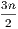 times the square of the radius.
33. For the circumscribed circle, the constant is equal to n times the square of the radius of the inscribed circle, together with n times the square of the radius of the circumscribed circle.
34. If the circumference of a circle whose radius is R be divided into seventeen equal parts, and AO be the diameter drawn from one of the points of division (A), and if ρ1, ρ2……ρ8 denote the chords from O to the points of division, A1, A2……A8 on one side of AO, then
Dem.—Let the supplemental chords corresponding to ρ1, ρ2, &c., be denoted by r1, r2, &c.; then [III. xxxv. Ex. 2], we have
| ρ1r1 | = Rr2, | ||||||||||
| ρ2r2 | = Rr4, | ||||||||||
| ρ4r4 | = Rr8, | ||||||||||
| ρ8r8 | = Rr1, | ||||||||||
| Hence | ρ1ρ2ρ4ρ8 | = R4. |
And it may be proved in the same manner that
| ρ1ρ2ρ3ρ4ρ5ρ6ρ7ρ8 | = R8. | ||||||||||
| Therefore | ρ3ρ5ρ6ρ7 | = R4. |
35. If from the middle point of the line joining any two of four concyclic points a perpendicular be let fall on the line joining the remaining two, the six perpendiculars thus obtained are concurrent.
36. The greater the number of sides of a regular polygon circumscribed about a given circle, the less will be its perimeter.
37. The area of any regular polygon of more than four sides circumscribed about a circle is less than the square of the diameter.
38. Four concyclic points taken three by three determine four triangles, the centres of whose nine-points circles are concyclic.
39. If two sides of a triangle be given in position, and if their included angle be equal to an angle of an equilateral triangle, the locus of the centre of its nine-points circle is a right line.
40. If, in the hypothesis and notation of Ex. 34, α, β denote any two suffixes whose sum is less than 8, and of which α is the greater,
For instance, ρ1ρ4 = R(ρ3 + ρ5) [III. xxxv., Ex. 7].
In the same case, if the suffixes be greater than 8,
For instance, ρ8ρ2 = R(ρ6 − ρ7) [III. xxxv., Ex. 6].
41. Two lines are given in position: draw a transversal through a given point, forming with the given lines a triangle of given perimeter.
42. Given the vertical angle and perimeter of a triangle, construct it with either of the following data: 1. The bisector of the vertical angle; 2. the perpendicular from the vertical angle on the base; 3. the radius of the inscribed circle.
43. In a given circle inscribe a triangle so that two sides may pass through two given points, and that the third side may be a maximum or a minimum.
44. If s be the semiperimeter of a triangle, r′, r′′, r′′′, the radii of its escribed circles,
45. The feet of the perpendiculars from the extremities of the base on either bisector of the vertical angle, the middle point of the base, and the foot of the perpendicular from the vertical angle on the base, are concyclic.
46. Given the base of a triangle and the vertical angle; find the locus of the centre of the circle passing through the centres of the escribed circles.
47. The perpendiculars from the centres of the escribed circles of a triangle on the corresponding sides are concurrent.
48. If AB be the diameter of a circle, and PQ any chord cutting AB in O, and if the lines AP, AQ intersect the perpendicular to AB at O, in D and E respectively, the points A, B, D, E are concyclic.
49. If the sides of a triangle be in arithmetical progression, and if R, r be the radii of the circumscribed and inscribed circles; then 6Rr is equal to the rectangle contained by the greatest and least sides.
50. Inscribe in a given circle a triangle having its three sides parallel to three given lines.
51. If the sides AB, BC, &c., of a regular pentagon be bisected in the points A′, B′, C′, D′, E′, and if the two pairs of alternate sides, BC, AE; AB, DE, meet in the points A′′, E′′, respectively, prove
52. In a circle, prove that an equilateral inscribed polygon is regular, and also an equilateral circumscribed polygon, if the number of sides be odd.
53. Prove also that an equiangular circumscribed polygon is regular, and an equiangular inscribed polygon, if the number of sides be odd.
54. The sum of the perpendiculars drawn to the sides of an equiangular polygon from any point inside the figure is constant.
55. Express the sides of a triangle in terms of the radii of its escribed circles.